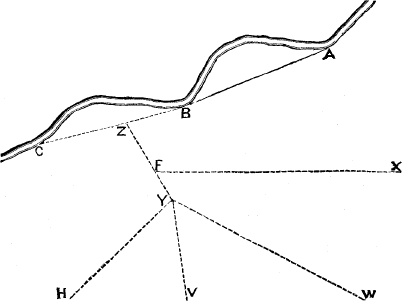
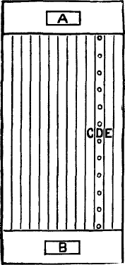
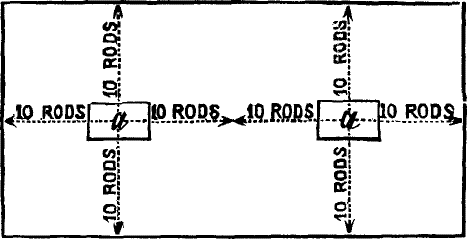
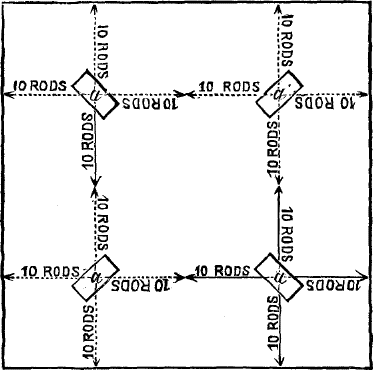

“Farming is a poor business,” said the Deacon. “Take the corn crop. Thirty bushels per acre is a fair average, worth, at 75 cents per bushel, $22.50. If we reckon that, for each bushel of corn, we get 100 lbs. of stalks, this would be a ton and a half per acre, worth at $5 per ton $7.50.”
Total receipts per acre for corn crop |
$30 00 | ||
| Expenses. | Preparing the land for the crop |
$5 00 | |
Planting and seed |
1 50 | ||
Cultivating, three times, twice in a row both ways |
5 00 | ||
Hoeing twice |
3 00 | ||
Cutting up the corn |
1 50 | ||
Husking and drawing in the corn |
4 00 | ||
Drawing in the stalks, etc. |
1 00 | ||
Shelling, and drawing to market |
2 00 | ||
| Total cost of the crop | $23 00 | ||
| Profit per acre | $7 00 | ||
“And from this,” said the Deacon, “we have to deduct interest on land and taxes. I tell you, farming is a poor business.”
“Yes,” I replied, “poor farming is a very poor business. But good farming, if we have good prices, is as good a business as I want, and withal as pleasant. A good farmer raises 75 bushels 10 of corn per acre, instead of 30. He would get for his crop,
| including stalks | $75 00 | ||
| Expenses. | Preparing land for the crop |
$5 00 | |
Planting and seed |
1 50 | ||
| Cultivating | 5 00 | ||
| Hoeing | 3 00 | ||
Cutting up the corn |
1 50 | ||
Husking and drawing |
10 00 | ||
Drawing in the stalks |
3 00 | ||
Shelling, etc. |
6 00 | ||
| $35 00 | |||
| Profit per acre | $40 00 | ||
Take another case, which actually occurred in this neighborhood. The Judge is a good farmer, and particularly successful in raising potatoes and selling them at a good price to hotels and private families. He cultivates very thoroughly, plants in hills, and puts a handful of ashes, plaster, and hen-manure, on the hill.
In 1873, his crop of Peachblows was at the rate of 208 bushels per acre. Of these, 200 bushels were sold at 60 cents per bushel. There were 8 bushels of small potatoes, worth say 12½ cents per bushel, to feed out to stock.
Mr. Sloe, who lives on an adjoining farm, had three acres of Peachblow potatoes the same year. The yield was 100 bushels per acre—of which 25 bushels were not large enough for market, he got 50 cents per bushel for the others.
The account of the two crops stands as follows:
| Expenses Per Acre: | Mr. Sloe | Judge. |
|---|---|---|
Plowing, harrowing, rolling, marking, |
$ 8 00 | $ 8 00 |
| Seed | 5 00 | 5 00 |
| Hoeing, cultivating, etc. | 7 00 | 10 00 |
| Digging | 10 00 | 10 00 |
| 30 00 | 33 00 | |
| Receipts Per Acre: | ||
| 75 bushels, @ 50c | 37 50 | |
| 25 bushels, @ 12½c | 3 12 | |
| 40 62 | ||
| 200 bushels, @ 60c | 120 00 | |
| 8 bushels, @ 12½c | 1 00 | |
| 121 00 | ||
| Profit per acre | $10 62 | $98 00 |
Since then, Mr. Sloe has been making and using more manure, and the year before last (1875) his crop of potatoes averaged over 11 200 bushels per acre, and on the sandy knolls, where more manure was applied, the yield was at least 250 bushels per acre.
“Nevertheless,” said the Deacon, “I do not believe in ‘high farming.’ It will not pay.”
“Possibly not,” I replied. “It depends on circumstances; and these we will talk about presently. High farming aims to get large crops every year. Good farming produces equally large crops per acre, but not so many of them. This is what I am trying to do on my own farm. I am aiming to get 35 bushels of wheat per acre, 80 bushels of shelled corn, 50 bushels of barley, 90 bushels of oats, 300 bushels of potatoes, and 1,200 bushels of mangel-wurzel per acre, on the average. I can see no way of paying high wages except by raising large crops per acre. But if I get these large crops it does not necessarily follow that I am practising ‘high farming.’”
To illustrate: Suppose I should succeed in getting such crops by adopting the following plan. I have a farm of nearly 300 acres, one quarter of it being low, alluvial land, too wet for cultivation, but when drained excellent for pasturing cows or for timothy meadows. I drain this land, and after it is drained I dam up some of the streams that flow into it or through it, and irrigate wherever I can make the water flow. So much for the low land.
The upland portion of the farm, containing say 200 acres, exclusive of fences, roads, buildings, garden, etc., is a naturally fertile loam, as good as the average wheat land of Western New York. But it is, or was, badly “run down.” It had been what people call “worked to death;” although, in point of fact, it had not been half-worked. Some said it was “wheated to death,” others that it had been “oated to death,” others that it had been “grassed to death,” and one man said to me, “That field has had sheep on it until they have gnawed every particle of vegetable matter out of the soil, and it will not now produce enough to pasture a flock of geese.” And he was not far from right—notwithstanding the fact that sheep are thought to be, and are, the best animals to enrich land. But let me say, in passing, that I have since raised on that same field 50 bushels of barley per acre, 33 bushels of Diehl wheat, a great crop of clover, and last year, on a part of it, over 1,000 bushels of mangel-wurzel per acre.
But this is a digression. Let us carry out the illustration. What does this upland portion of the farm need? It needs underdraining, thorough cultivation, and plenty of manure. If I had plenty of manure, I could adopt high farming. But where am I to get plenty of manure for 200 acres of land? “Make it,” says the 12 Deacon. Very good; but what shall I make it of? “Make it out of your straw and stalks and hay.” So I do, but all the straw and stalks and hay raised on the farm when I bought it would not make as much manure as “high farming” requires for five acres of land. And is this not true of half the farms in the United States to-day? What then, shall we do?
The best thing to do, theoretically, is this: Any land that is producing a fair crop of grass or clover, let it lie. Pasture it or mow it for hay. If you have a field of clayey or stiff loamy land, break it up in the fall, and summer-fallow it the next year, and sow it to wheat and seed it down with clover. Let it lie two or three years in clover. Then break it up in July or August, “fall-fallow” it, and sow it with barley the next spring, and seed it down again with clover.
Sandy or light land, that it will not pay to summer-fallow, should have all the manure you can make, and be plowed and planted with corn. Cultivate thoroughly, and either seed it down with the corn in August, or sow it to barley or oats next spring, and seed it down with clover. I say, theoretically this is the best plan to adopt. But practically it may not be so, because it may be absolutely necessary that we should raise something that we can sell at once, and get money to live upon or pay interest and taxes. But the gentlemen who so strenuously advocate high farming, are not perhaps often troubled with considerations of this kind. Meeting them, therefore, on their own ground, I contend that in my case “high farming” would not be as profitable as the plan hinted at above.
The rich alluvial low land is to be pastured or mown; the upland to be broken up only when necessary, and when it is plowed to be plowed well and worked thoroughly, and got back again into clover as soon as possible. The hay and pasture from the low land, and the clover and straw and stalks from the upland, would enable us to keep a good many cows and sheep, with more or less pigs, and there would be a big pile of manure in the yard every spring. And when this is once obtained, you can get along much more pleasantly and profitably.
“But,” I may be asked, “when you have got this pile of manure can not you adopt high farming?” No. My manure pile would contain say: 60 tons of clover-hay; 20 tons wheat-straw; 25 tons oat, barley, and pea-straw; 40 tons meadow-hay; 20 tons corn-stalks; 20 tons corn, oats, and other grain; 120 tons mangel-wurzel and turnips.
13 This would give me about 500 tons of well-rotted manure. I should want 200 tons of this for the mangels and turnips, and the 300 tons I should want to top-dress 20 acres of grass land intended for corn and potatoes the next year. My pile of manure, therefore, is all used up on 25 to 30 acres of land. In other words, I use the unsold produce of 10 acres to manure one. Is this “high farming?” I think in my circumstances it is good farming, but it is not high farming. It gives me large crops per acre, but I have comparatively few acres in crops that are sold from the farm.
“High farming,” if the term is to have any definite meaning at all should only be used to express the idea of a farm so managed that the soil is rich enough to produce maximum crops every year. If you adopt the system of rotation quite general in this section—say, 1st year, corn on sod; 2d, barley or oats; 3d, wheat; 4th, clover for hay and afterwards for seed; 5th, timothy and clover for hay; and then the 6th year plowed up for corn again—it would be necessary to make the land rich enough to produce say 100 bushels shelled corn, 50 bushels of barley, 40 bushels of wheat, 3 tons clover-hay, and 5 bushels of clover-seed, and 3 tons clover and timothy-hay per acre. This would be moderate high farming. If we introduced lucern, Italian rye-grass, corn-fodder, and mangel-wurzel into the rotation, we should need still richer land to produce a maximum growth of these crops. In other words, we should need more manure.
The point I am endeavoring to get at, is this: Where you want a farm to be self-supporting—where you depend solely on the produce of the farm to supply manure—it is a sheer impossibility to adopt high farming on the whole of your land. I want to raise just as large crops per acre as the high farmers, but there is no way of doing this, unless we go outside the farm for manure, without raising a smaller area of such crops as are sold from the farm.
I do not wish any one to suppose that I am opposed to high farming. There is occasionally a farm where it may be practised with advantage, but it seems perfectly clear to my mind that as long as there is such an unlimited supply of land, and such a limited supply of fertilizers, most of us will find it more profitable to develop the latent stores of plant-food lying dormant in the soil rather than to buy manures. And it is certain that you can not adopt high farming without either buying manure directly, or buying food to feed to animals that shall make manure on the farm.
And you must recollect that high farming requires an increased 14 supply of labor, and hired help is a luxury almost as costly as artificial fertilizers.
We have heard superficial thinkers object to agricultural papers on the ground that they were urging farmers to improve their land and produce larger crops, “while,” say they, “we are producing so much already that it will not sell for as much as it costs to produce it.” My plan of improved agriculture does not necessarily imply the production of any more wheat or of any more grain of any kind that we sell than we raise at present. I would simply raise it on fewer acres, and thus lessen the expense for seed, cultivation, harvesting, etc. I would raise 30 bushels of wheat per acre every third year, instead of 10 bushels every year.
If we summer-fallowed and plowed under clover in order to produce the 30 bushels of wheat once in three years, instead of 10 bushels every year, no more produce of any kind would be raised. But my plan does not contemplate such a result. On my own farm I seldom summer-fallow, and never plow under clover. I think I can enrich the farm nearly as much by feeding the clover to animals and returning the manure to the land. The animals do not take out more than from five to ten per cent of the more valuable elements of plant-food from the clover. And so my plan, while it produces as much and no more grain to sell, adds greatly to the fertility of the land, and gives an increased production of beef, mutton, wool, butter, cheese, and pork.
“But what is a man to do who is poor and has poor land?” If he has good health, is industrious, economical, and is possessed of a fair share of good common sense, he need have no doubt as to being able to renovate his farm and improve his own fortune.
Faith in good farming is the first requisite. If this is weak, it will be strengthened by exercise. If you have not faith, act as though you had.
Work hard, but do not be a drudge. A few hours’ vigorous labor will accomplish a great deal, and encourage you to continued effort. Be prompt, systematic, cheerful, and enthusiastic. Go to bed early and get up when you wake. But take sleep enough. A man had better be in bed than at the tavern or grocery. Let not friends, even, keep you up late; “manners is manners, but still your elth’s your elth.”
“But what has this to do with good farming?” More than chemistry and all the science of the schools. Agriculture is an art and must be followed as such. Science will help—help enormously—but it will never enable us to dispense with industry. Chemistry 15 throws great light on the art of cooking, but a farmer’s wife will roast a turkey better than a Liebig.
When Mr. James O. Sheldon, of Geneva. N.Y., bought his farm, his entire crop of hay the first year was 76 loads. He kept stock, and bought more or less grain and bran, and in eleven years from that time his farm produced 430 loads of hay, afforded pasture for his large herd of Shorthorn cattle, and produced quite as much grain as when he first took it.
Except in the neighborhood of large cities, “high farming” may not pay, owing to the fact that we have so much land. But whether this is so or not, there can be no doubt that the only profitable system of farming is to raise large crops on such land as we cultivate. High farming gives us large crops, and many of them. At present, while we have so much land in proportion to population, we must, perhaps, be content with large crops of grain, and few of them. We must adopt the slower but less expensive means of enriching our land from natural sources, rather than the quicker, more artificial, and costly means adopted by many farmers in England, and by market gardeners, seed-growers, and nurserymen in this country. Labor is so high that we can not afford to raise a small crop. If we sow but half the number of acres, and double the yield, we should quadruple our profits. I have made up my mind to let the land lie in clover three years, instead of two. This will lessen the number of acres under cultivation, and enable us to bestow more care in plowing and cleaning it. And the land will be richer, and produce better crops. The atmosphere is capable of supplying a certain quantity of ammonia to the soil in rains and dews every year, and by giving the wheat crop a three years supply instead of two years, we gain so much. Plaster the clover, top-dress it in the fall, if you have the manure, and stimulate its growth in every way possible, and consume all the clover on the land, or in the barn-yard. Do not sell a single ton; let not a weed grow, and the land will certainly improve.
The first object should be to destroy weeds. I do not know how it is in other sections, but with us the majority of farms are completely overrun with weeds. They are eating out the life of the land, and if something is not done to destroy them, even exorbitantly high prices can not make farming profitable. A farmer yesterday was contending that it did not pay to summer-fallow. He has taken a run-down farm, and a year ago last spring he plowed up ten acres of a field, and sowed it to barley and oats. The remainder of the field he summer-fallowed, plowing it four times, rolling and harrowing thoroughly after each plowing. After 16 the barley and oats were off, he plowed the land once, harrowed it and sowed Mediterranean wheat. On the summer-fallow he drilled in Diehl wheat. He has just threshed, and got 22 bushels per acre of Mediterranean wheat after the spring crop, at one plowing, and 26 bushels per acre of Diehl wheat on the summer-fallow. This, he said, would not pay, as it cost him $20 per acre to summer-fallow, and he lost the use of the land for one season. Now this may be all true, and yet it is no argument against summer-fallowing. Wait a few years. Farming is slow work. Mr. George Geddes remarked to me, when I told him I was trying to renovate a run-down farm, “you will find it the work of your life.” We ought not to expect a big crop on poor, run-down land, simply by plowing it three or four times in as many months. Time is required for the chemical changes to take place in the soil. But watch the effect on the clover for the next two years, and when the land is plowed again, see if it is not in far better condition than the part not summer-fallowed. I should expect the clover on the summer-fallow to be fully one-third better in quantity, and of better quality than on the other part, and this extra quantity of clover will make an extra quantity of good manure, and thus we have the means of going on with the work of improving the farm.
“Yes,” said the Doctor, “and there will also be more clover-roots in the soil.”
“But I can not afford to wait for clover, and summer-fallowing,” writes an intelligent New York gentleman, a dear lover of good stock, who has bought an exhausted New England farm, “I must have a portion of it producing good crops right off.” Very well. A farmer with plenty of money can do wonders in a short time. Set a gang of ditchers to work, and put in underdrains where most needed. Have teams and plows enough to do the work rapidly. As soon as the land is drained and plowed, put on a heavy roller. Then sow 500 lbs. of Peruvian guano per acre broadcast, or its equivalent in some other fertilizer. Follow with a Shares’ harrow. This will mellow the surface and cover the guano without disturbing the sod. Follow with a forty-toothed harrow, and roll again, if needed, working the land until there is three or four inches of fine, mellow surface soil. Then mark off the land in rows as straight as an arrow, and plant corn. Cultivate thoroughly, and kill every weed. If the ditchers can not get through until it is too late to plant corn, drill in beans on the last drained part of the field.
Another good crop to raise on a stock farm is corn-fodder. This can be drilled in from time to time as the land can be got 17 ready. Put on half a ton of guano per acre and harrow in, and then mark off the rows three feet apart, and drill in four bushels of corn per acre. Cultivate thoroughly, and expect a great crop. By the last of July, the Ayrshire cows will take kindly to the succulent corn-fodder, and with three or four quarts of meal a day, it will enable each of them to make 10 lbs. of butter a week.
For the pigs, sow a few acres of peas. These will do well on sod-land, sown early or late, or a part early and a part late, as most convenient. Sow broadcast and harrow in, 500 lbs. of Peruvian guano per acre and 200 lbs. of gypsum. Drill in three bushels of peas per acre, or sow broadcast, and cover them with a Shares’ harrow. Commence to feed the crop green as soon as the pods are formed, and continue to feed out the crop, threshed or unthreshed, until the middle of November. Up to this time the bugs do comparatively little damage. The pigs will thrive wonderfully on this crop, and make the richest and best of manure.
I have little faith in any attempt to raise root crops on land not previously well prepared. But as it is necessary to have some mangel-wurzel and Swede turnips for the Ayrshire cows and long-wool sheep next winter and spring, select the cleanest and richest land that can be found that was under cultivation last season. If fall plowed, the chances of success will be doubled. Plow the land two or three times, and cultivate, harrow, and roll until it is as mellow as a garden. Sow 400 lbs. of Peruvian guano and 300 lbs. of good superphosphate per acre broadcast, and harrow them in. Ridge up the land into ridges 2½ to 3 ft. apart, with a double mould-board plow. Roll down the ridges with a light roller, and drill in the seed. Sow the mangel-wurzel in May—the earlier the better—and the Swedes as soon afterwards as the land can be thoroughly prepared. Better delay until June rather than sow on rough land.
The first point on such a farm will be to attend to the grass land. This affords the most hopeful chance of getting good returns the first year. But no time is to be lost. Sow 500 lbs. of Peruvian guano per acre on all the grass land and on the clover, with 200 lbs. of gypsum in addition on the latter. If this is sown early enough, so that the spring rains dissolve it and wash it into the soil, great crops of grass may be expected.
“But will it pay?” My friend in New York is a very energetic and successful business man, and he has a real love for farming, and I have no sort of doubt that, taking the New York business and the farm together, they will afford a very handsome profit. Furthermore, I have no doubt that if, after he has drained it, he 18 would cover the whole farm with 500 lbs. of Peruvian guano per acre, or its equivalent, it would pay him better than any other agricultural operation he is likely to engage in. By the time it was on the land the cost would amount to about $20 per acre. If he sells no more grass or hay from the farm than he would sell if he did not use the guano, this $20 may very properly be added to the permanent capital invested in the farm. And in this aspect of the case, I have no hesitation in saying it will pay a high rate of interest. His bill for labor will be as much in one case as in the other; and if he uses the guano he will probably double his crops. His grass lands will carry twenty cows instead of ten, and if he raises the corn-fodder and roots, he can probably keep thirty cows better than he could otherwise keep a dozen; and, having to keep a herdsman in either case, the cost of labor will not be much increased. “But you think it will not pay?” It will probably not pay him. I do not think his business would pay me if I lived on my farm, and went to New York only once or twice a week. If there is one business above all others that requires constant attention, it is farming—and especially stock-farming. But my friend is right in saying that he cannot afford to wait to enrich his land by clover and summer-fallowing. His land costs too much; he has a large barn and everything requisite to keep a large stock of cattle and sheep. The interest on farm and buildings, and the money expended in labor, would run on while the dormant matter in the soil was slowly becoming available under the influence of good tillage. The large barn must be filled at once, and the only way to do this is to apply manure with an unsparing hand. If he lived on the farm, I should have no doubt that, by adopting this course, and by keeping improved stock, and feeding liberally, he could make money. Perhaps he can find a man who will successfully manage the farm under his direction, but the probabilities are that his present profit and pleasure will come from the gratification of his early love for country life.
“What is the good of asking such a question as that?” said the Deacon; “we all know what manure is.”
“Well, then,” I replied, “tell us what it is?”
“It is anything that will make crops grow better and bigger,” replied the Deacon.
“That is not a bad definition,” said I; “but let us see if it is a true one. You have two rows of cabbage in the garden, and you water one row, and the plants grow bigger and better. Is water manure? You cover a plant with a hand-glass, and it grows bigger and better. Is a hand-glass manure? You shelter a few plants, and they grow bigger and better. Is shelter manure? You put some pure sand round a few plants, and they grow bigger and better. Is pure sand manure? I think we shall have to reject the Deacon’s definition.”
Let us hear what the Doctor has to say on the subject.
“Manure,” replied the Doctor, “is the food of plants.”
“That is a better definition,” said I; “but this is really not answering the question. You say manure is plant-food. But what is plant-food?”
“Plant-food,” said the Doctor, “is composed of twelve elements, and, possibly, sometimes one or two more, which we need not here talk about. Four of these elements are gases, oxygen, hydrogen, carbon, and nitrogen. When a plant or animal is burnt, these gases are driven off. The ashes which remain are composed of potash, soda, lime, and magnesia; sulphuric acid, phosphoric acid, chlorine, and silica. In other words, the ‘food of plants’ is composed of four organic, or gaseous elements, and eight inorganic, or mineral elements, of which four have acid and four alkaline properties.”
“Thank you, Doctor,” said the Deacon, “I am glad to know what manure is. It is the food of plants, and the food of plants is composed of four gases, four acid and four alkaline elements. I seem to know all about it. All I have wanted to make my land rich was plenty of manure, and now I shall know where to get it—oxygen, hydrogen, carbon, and nitrogen; these four atmospheric elements. Then potash, soda, magnesia, and lime. I know what these four are. Then sulphur, phosphorous, silica 20 (sand,) and chlorine (salt). I shall soon have rich land and big crops.”
Charley, who has recently come home from college, where he has been studying chemistry, looked at the Deacon, and was evidently puzzled to understand him. Turning to the Doctor, Charley asked modestly if what the Doctor had said in regard to the composition of plant food could not be said of the composition of all our animals and plants.
“Certainly,” replied the Doctor, “all our agricultural plants and all our animals, man included, are composed of these twelve elements, oxygen, hydrogen, carbon, and nitrogen; phosphorus, sulphur, silica, chlorine, potash, soda, magnesia, and lime.”
Charley said something about lime, potash, and soda, not being “elements;” and something about silica and chlorine not being found in animals.
“Yes,” said I, “and he has left out iron, which is an important constituent of all our farm crops and animals.” Neither the Doctor nor the Deacon heard our remarks. The Deacon, who loves an argument, exclaimed: “I thought I knew all about it. You told us that manure was the food of plants, and that the food of plants was composed of the above twelve elements; and now you tell us that man and beast, fruit and flower, grain and grass, root, stem, and branch, all are composed or made up of these same dozen elements. If I ask you what bread is made of, you say it is composed of the dozen elements aforesaid. If I ask what wheat-straw is made of, you answer, the dozen. If I ask what a thistle is made of, you say the dozen. There are a good many milk-weeds in my strawberry patch, and I am glad to know that the milk-weed and the strawberry are both composed of the same dozen elements. Manure is the food of plants, and the food of plants is composed of the above dozen elements, and every plant and animal that we eat is also composed of these same dozen elements, and so I suppose there is no difference between an onion and an omelet, or between bread and milk, or between mangel-wurzel and manure.”
“The difference,” replied the Doctor, “is one of proportion. Mangels and manure are both composed of the same elements. In fact, mangels make good manure, and good manure makes good mangels.”
The Deacon and the Doctor sat down to a game of backgammon, and Charley and I continued the conversation more seriously.
“The Doctor is in the main correct,” said I; “but he does not fully answer the question, ‘What is manure?’ To say that manure is plant-food, does not cover the whole ground. All soils on which plants grow, contain more or less plant-food. A plant can not create an atom of potash. It can not get it from the atmosphere. We find potash in the plant, and we know that it got it from the soil and we are certain, therefore, that the soil contains potash. And so of all the other mineral elements of plants. A soil that will produce a thistle, or a pig-weed, contains plant-food. And so the definition of the Doctor is defective, inasmuch as it makes no distinction between soil and manure. Both contain plant-food.”
“What is your definition of manure?” asked Charley; “it would seem as though we all knew what manure was. We have got a great heap of it in the yard, and it is fermenting nicely.”
“Yes,” I replied, “we are making more manure on the farm this winter than ever before. Two hundred pigs, 120 large sheep, 8 horses, 11 cows, and a hundred head of poultry make considerable manure; and it is a good deal of work to clean out the pens, pile the manure, draw it to the field, and apply it to the crops. We ought to know something about it; but we might work among manure all our lives, and not know what manure is. At any rate, we might not be able to define it accurately. I will, however, try my hand at a definition.
“Let us assume that we have a field that is free from stagnant water at all seasons of the year; that the soil is clean, mellow, and well worked seven inches deep, and in good order for putting in a crop. What the coming ‘season’ will be we know not. It may be what we call a hot, dry summer, or it may be cool and moist, or it may be partly one and partly the other. The ‘season’ is a great element of uncertainty in all our farming calculations; but we know that we shall have a season of some kind. We have the promise of seed-time and harvest, and we have never known the promise to fail us. Crops, however, vary very much, according to the season; and it is necessary to bear this fact in mind. Let us say that the sun and heat, and rain and dews, or what we call ‘the season,’ is capable of producing 50 bushels of wheat per acre, but that the soil I have described above, does not produce over 20 bushels per acre. There is no mechanical defect in the soil. The seed is good, it is put in properly, and at the right time, 22 and in the best manner. No weeds choke the wheat plants or rob them of their food; but that field does not produce as much wheat by 30 bushels per acre as the season is capable of producing. Why? The answer is evident. Because the wheat plants do not find food enough in the soil. Now, anything that will furnish this food, anything that will cause that field to produce what the climate or season is capable of producing, is manure. A gardener may increase his crops by artificial heat, or by an increased supply of water, but this is not manure. The effect is due to improved climatic conditions. It has nothing to do with the question of manure. We often read in the agricultural papers about ‘shade as manure.’ We might just as well talk about sunlight as ‘manure.’ The effects observed should be referred to modifications of the climate or season; and so in regard to mulching. A good mulch may often produce a larger increase of growth than an application of manure. But mulch, proper, is not manure. It is climate. It checks evaporation of moisture from the soil. We might as well speak of rain as manure as to call a mulch manure. In fact, an ordinary shower in summer is little more than a mulch. It does not reach the roots of plants; and yet we see the effect of the shower immediately in the increased vigor of the plants. They are full of sap, and the drooping leaves look refreshed. We say the rain has revived them, and so it has; but probably not a particle of the rain has entered into the circulation of the plant. The rain checked evaporation from the soil and from the leaves. A cool night refreshes the plants, and fills the leaves with sap, precisely in the same way. All these fertilizing effects, however, belong to climate. It is inaccurate to associate either mulching, sunshine, shade, heat, dews, or rain, with the question of manure, though the effect may in certain circumstances be precisely the same.”
Charley evidently thought I was wandering from the point. “You think, then,” said he, “manure is plant-food that the soil needs?”
“Yes,” said I, “that is a very good definition—very good, indeed, though not absolutely accurate, because manure is manure, whether a particular soil needs it or not.” Unobserved by us, the Deacon and the Doctor had been listening to our talk. —“I would like,” said the Deacon, “to hear you give a better definition than Charley has given.” —“Manure,” said I, “is anything containing an element or elements of plant-food, which, if the soil needed it, would, if supplied in sufficient quantity, and in an available condition, produce, according to soil, season, climate, and variety, a maximum crop.”
We often hear about “natural” manure. I do not like the term, though I believe it originated with me. It is not accurate; not definite enough.
“I do not know what you mean by natural manure,” said the Deacon, “unless it is the droppings of animals.” —“To distinguish them, I suppose,” said the Doctor, “from artificial manures, such as superphosphate, sulphate of ammonia, and nitrate of soda.” —“No; that is not how I used the term. A few years ago, we used to hear much in regard to the ‘exhaustion of soils.’ I thought this phrase conveyed a wrong idea. When new land produces large crops, and when, after a few years, the crops get less and less, we were told that the farmers were exhausting their land. I said, no; the farmers are not exhausting the soil; they are merely exhausting the accumulated plant-food in the soil. In other words, they are using up the natural manure.
“Take my own farm. Fifty years ago, it was covered with a heavy growth of maple, beech, black walnut, oak, and other trees. These trees had shed annual crops of leaves for centuries. The leaves rot on the ground; the trees also, age after age. These leaves and other organic matter form what I have called natural manure. When the land is cleared up and plowed, this natural manure decays more rapidly than when the land lies undisturbed; precisely as a manure-pile will ferment and decay more rapidly if turned occasionally, and exposed to the air. The plowing and cultivating renders this natural manure more readily available. The leaves decompose, and furnish food for the growing crop.”
“You think, then,” said the Doctor, “that when a piece of land is cleared of the forest, harrowed, and sown to wheat; plowed and planted to corn, and the process repeated again and again, until the land no longer yields profitable crops, that it is the ‘natural manure,’ and not the soil, that is exhausted?”
“I think the soil, at any rate, is not exhausted, and I can easily conceive of a case where even the natural manure is very far from being all used up.”
“Why, then,” asked the Deacon, “is the land so poor that it will scarcely support a sheep to the acre?”
24 “Simply because the natural manure and other plant-food which the soil contains is not in an available condition. It lies dead and inert. It is not soluble, and the roots of the plants cannot get enough of it to enable them to thrive; and in addition to this, you will find as a matter of fact that these poor ‘exhausted’ farms are infested with weeds, which rob the growing crops of a large part of the scanty supply of available plant-food.”
“But these weeds,” said the Deacon, “are not removed from the farm. They rot on the land; nothing is lost.”
“True,” said I, “but they, nevertheless, rob the growing crops of available plant-food. The annual supply of plant-food, instead of being used to grow useful plants, is used to grow weeds.”
“I understand that,” said the Deacon, “but if the weeds are left on the land, and the useful plants are sold, the farmer who keeps his land clean would exhaust his land faster than the careless farmer who lets his land lie until it is overrun with thistles, briars, and pig-weed. You agricultural writers, who are constantly urging us to farm better and grow larger crops, seem to overlook this point. As you know, I do not take much stock in chemical theories as applied to agriculture, but as you do, here is a little extract I cut from an agricultural paper, that seems to prove that the better you work your land, and the larger crops you raise, the sooner you exhaust your land.”
The Deacon put on his spectacles, drew his chair nearer the lamp on the table, and read the following:
“There is, on an average, about one-fourth of a pound of potash to every one hundred pounds of soil, and about one-eighth of a pound of phosphoric acid, and one-sixteenth of a pound of sulphuric acid. If the potatoes and the tops are continually removed from the soil, it will soon exhaust the potash. If the wheat and straw are removed, it will soon exhaust the phosphate of lime; if corn and the stalks, it will soon exhaust the sulphuric acid. Unless there is a rotation, or the material the plant requires is supplied from abroad, your crops will soon run out, though the soil will continue rich for other plants.”
“That extract,” said I, “carries one back twenty-five years. We used to have article after article in this strain. We were told that ‘always taking meal out of the tub soon comes to the bottom,’ and always taking potash and phosphoric acid from the soil will soon exhaust the supply. But, practically, there is really little danger of our exhausting the land. It does not pay. The farmer’s resources will be exhausted long before he can exhaust his farm.”
25 “Assuming,” said the Doctor, who is fond of an argument, “that the above statement is true, let us look at the facts. An acre of soil, 12 inches deep, would weigh about 1,600 tons; and if, as the writer quoted by the Deacon states, the soil contains 4 ozs. of potash in every 100 lbs. of soil, it follows that an acre of soil, 12 inches deep, contains 8,000 lbs. of potash. Now, potatoes contain about 20 per cent of dry matter, and this dry matter contains say, 4 per cent of ash, half of which is potash. It follows, therefore, that 250 bushels of potatoes contain about 60 lbs. of potash. If we reckon that the tops contain 20 lbs. more, or 80 lbs. in all, it follows that the acre of soil contains potash enough to grow an annual crop of 250 bushels of potatoes per acre for one hundred years.”
“I know farmers,” said Charley, “who do not get over 50 bushels of potatoes per acre, and in that case the potash would last five hundred years, as the weeds grown with the crop are left on the land, and do not, according to the Deacon, exhaust the soil.”
“Good for you, Charley,” said the Doctor. “Now let us see about the phosphoric acid, of which the soil, according to the above statement, contains only half as much as it contains of potash, or 4,000 lbs. per acre.
“A crop of wheat of 30 bushels per acre,” continued the Doctor, “contains in the grain about 26 lbs. of ash, and we will say that half of this ash is phosphoric acid, or 13 lbs. Allowing that the straw, chaff, etc., contain 7 lbs. more, we remove from the soil in a crop of wheat of 30 bushels per acre, 20 lbs. of phosphoric acid, and so, according to the above estimate, an acre of soil contains phosphoric acid to produce annually a crop of wheat and straw of 30 bushels per acre for two hundred years.
“The writer of the paragraph quoted by the Deacon,” continued the Doctor, “selected the crops and elements best suited to his purpose, and yet, according to his own estimate, there is sufficient potash and phosphoric acid in the first 12 inches of the soil to enable us to raise unusually large crops until the next Centennial in 1976.
“But let us take another view of the subject,” continued the Doctor. “No intelligent farmer removes all the potatoes and tops, all the wheat, straw, and chaff, or all the corn and stalks from his farm. According to Dr. Salisbury, a crop of corn of 75 bushels per acre removes from the soil 600 lbs. of ash, but the grain contains only 46 lbs. The other 554 lbs. is contained in the stalks, etc., all of which are usually retained on the farm. It follows 26 from this, that when only the grain is sold off the farm, it takes more than thirteen crops to remove as much mineral matter from the soil as is contained in the whole of one crop. Again, the ash of the grain contains less than 3 per cent of sulphuric acid, so that the 46 lbs. of ash, in 75 bushels of corn, contains less than 1½ lbs. of sulphuric acid, and thus, if an acre of soil contains 2,000 lbs. of sulphuric acid, we have sufficient for an annual crop of 75 bushels per acre for fifteen hundred years!
“As I said before,” continued the Doctor, “intelligent farmers seldom sell their straw, and they frequently purchase and consume on the farm nearly as much bran, shorts, etc., as is sent to market with the grain they sell. In the ‘Natural History of New York,’ it is stated that an acre of wheat in Western New York, of 30 bushels per acre, including straw, chaff, etc., removes from the soil 144 lbs. of mineral matter. Genesee wheat usually yields about 80 per cent. of flour. This flour contains only 0.7 per cent of mineral matter, while fine middlings contain 4 per cent; coarse middlings, 5½ per cent; shorts, 8 per cent, and bran 8½ per cent of mineral matter or ash. It follows from this, that out of the 144 lbs. of mineral matter in the crop of wheat, less than 10 lbs. is contained in the flour. The remaining 134 lbs. is found in the straw, chaff, bran, shorts, etc., which a good farmer is almost sure to feed out on his farm. But even if the farmer feeds out none of his wheat-bran, but sells it all with his wheat, the 30 bushels of wheat remove from the soil only 26 lbs. of mineral matter; and it would take more than five crops to remove as much mineral matter as one crop of wheat and straw contains. Allowing that half the ash of wheat is phosphoric acid, 30 bushels remove only 13 lbs. from the soil, and if the soil contains 4,000 lbs., it will take three hundred and seven crops, of 30 bushels each, to exhaust it.”
“That is to say,” said Charley, “if all the straw and chaff is retained on the farm, and is returned to the land without loss of phosphoric acid.”
“Yes,” said the Doctor, “and if all the bran and shorts, etc., were retained on the farm, it would take eight hundred crops to exhaust the soil of phosphoric acid; and it is admitted that of all the elements of plant-food, phosphoric acid is the one first to be exhausted from the soil.”
I have sold some timothy hay this winter, and propose to do so whenever the price suits. But some of my neighbors, who do not hesitate to sell their own hay, think I ought not to do so, because I “write for the papers”! It ought to satisfy them to know that I bring back 30 cwt. of bran for every ton of hay I 27 sell. My rule is to sell nothing but wheat, barley, beans, potatoes, clover-seed, apples, wool, mutton, beef, pork, and butter. Everything else is consumed on the farm—corn, peas, oats, mustard, rape, mangels, clover, straw, stalks, etc. Let us make a rough estimate of how much is sold and how much retained on a hundred-acre farm, leaving out the potatoes, beans, and live-stock. We have say:
| Sold. | |
15 acres wheat, @ 40 bushels per acre |
18 tons |
5 acres barley, @ 50 bushels per acre |
6 ” |
15 acres clover seed, 4 bushels per acre |
1¾ ton. |
| Total sold | 25¾ tons. |
| Retained on the farm. | |
15 acres corn, @ 80 bushels per acre |
33½ tons. |
| Corn stalks from do. | 40 ” |
| 5 acres barley straw | 8 ” |
10 acres oats and peas, equal 80 bushels of oats |
12¾ ” |
| Straw from do. | 20 ” |
| 15 acres wheat-straw | 25 ” |
| 15 acres clover-hay | 25 ” |
| Clover-seed straw | 10 ” |
15 acres pasture and meadow, equal 40 tons hay |
40 ” |
5 acres mustard, equal 10 tons hay |
10 ” |
5 acres rape, equal 10 tons hay |
10 ” |
5 acres mangels, 25 tons per acre, equal to 3 tons dry |
15 ” |
| Leaves from do. | 3 ” |
| Total retained on the farm | 252¼ tons. |
It would take a good many years to exhaust any ordinary soil by such a course of cropping. Except, perhaps, the sandy knolls, I think there is not an acre on my farm that would be exhausted in ten thousand years, and as some portions of the low alluvial soil will grow crops without manure, there will be an opportunity to give the poor, sandy knolls more than their share of plant-food. In this way, notwithstanding the fact that we sell produce and bring nothing back, I believe the whole farm will gradually increase in productiveness. The plant-food annually rendered available from the decomposition and disintegration of the inert organic and mineral matter in the soil, will be more than equal to that exported from the farm. If the soil becomes deficient in anything, it is likely that it will be in phosphates, and a little superphosphate or bone-dust might at any rate be profitably used on the rape, mustard, and turnips.
The point in good farming is to develop from the latent stores 28 in the soil, and to accumulate enough available plant-food for the production of the largest possible yield of those crops which we sell. In other words, we want enough available plant-food in the soil to grow 40 bushels of wheat and 50 bushels of barley. I think the farmer who raises 10 tons for every ton he sells, will soon reach this point, and when once reached, it is a comparatively easy matter to maintain this degree of fertility.
“If the soil is so rich in plant-food,” said the Deacon, “I again ask, why are our crops so poor?”
The Deacon said this very quietly. He did not seem to know that he had asked one of the most important questions in the whole range of agricultural science. It is a fact that a soil may contain enough plant-food to produce a thousand large crops, and yet the crops we obtain from it may be so poor as hardly to pay the cost of cultivation. The plant-food is there, but the plants cannot get at it. It is not in an available condition; it is not soluble. A case is quoted by Prof. Johnson, where a soil was analyzed, and found to contain to the depth of one foot 4,652 lbs. of nitrogen per acre, but only 63 lbs. of this was in an available condition. And this is equally true of phosphoric acid, potash, and other elements of plant-food. No matter how much plant-food there may be in the soil, the only portion that is of any immediate value is the small amount that is annually available for the growth of crops.
“I am tired of so much talk about plant-food,” said the Deacon; “what we want to know is how to make our land produce larger crops of wheat, corn, oats, barley, potatoes, clover, and grass.”
This is precisely what I am trying to show. On my own farm, the three leading objects are (1) to get the land drained, (2) to make it clean and mellow, and (3) to get available nitrogen for the cereal crops. After the first two objects are accomplished, the measure of productiveness will be determined by the amount of available nitrogen in the soil. How to get available nitrogen, therefore, is my chief and ultimate object in all the operations on the farm, and it is here that science can help me. I know how to get nitrogen, but I want to get it in the cheapest way, and then to be sure that I do not waste it.
There is one fact fully established by repeated experiment and general experience—that 80 lbs. of available nitrogen per acre, 29 applied in manure, will almost invariably give us a greatly increased yield of grain crops. I should expect, on my farm, that on land which, without manure, would give me 15 bushels of wheat per acre, such a dressing of manure would give me, in a favorable season, 35 or 40 bushels per acre, with a proportional increase of straw; and, in addition to this, there would be considerable nitrogen left for the following crop of clover. Is it not worth while making an earnest effort to get this 80 lbs. of available nitrogen?
I have on my farm many acres of low, mucky land, bordering on the creek, that probably contain several thousand pounds of nitrogen per acre. So long as the land is surcharged with water, this nitrogen, and other plant-food, lies dormant. But drain it, and let in the air, and the oxygen decomposes the organic matter, and ammonia and nitric acid are produced. In other words, we get available nitrogen and other plant-food, and the land becomes capable of producing large crops of corn and grass; and the crops obtained from this low, rich land, will make manure for the poorer, upland portions of the farm.
“It would pay you,” said the Deacon, “to draw out 200 or 300 loads of muck from the swamp every year, and compost it with your manure.”
This may or may not be the case. It depends on the composition of the muck, and how much labor it takes to handle it.
“What you should do,” said the Doctor, “is to commence at the creek, and straighten it. Take a gang of men, and be with them with yourself, or get a good foreman to direct operations. Commence at a, and straighten the creek to b, and from b to c (see map on next page). Throw all the rich, black muck in a heap by itself, separate from the sand. You, or your foreman, must be there, or you will not get this done. A good ditcher will throw out a great mass of this loose muck and sand in a day; and you want him to dig, not think. You must do the thinking, and tell him which is muck, and which is only sand and dirt. When thrown up, this muck, in our dry, hot climate, will, in the course of a few 30 months, part with a large amount of water, and it can then be drawn to the barns and stables, and used for bedding, or for composting with manure. Or if you do not want to draw it to the barn, get some refuse lime from the lime-kiln, and mix it with the muck after it has been thrown up a few weeks, and is partially dry. Turn over the heap, and put a few bushels of lime to every cord of the muck, mixing the lime and muck together, leaving the heap in a compact form, and in good shape, to shed the rain.
“When you have straightened, and cleaned out, and deepened the creek,” continued the Doctor, “commence at z on the new creek, and cut a ditch through the swamp to y. Throw the muck on one side, and the sand on the other. This will give you some good, rich muck, and at the same time drain your swamp. Then cut some under-drains from y towards the higher land at w, v, and h, and from f to x. These will drain your land, and set free the inert plant-food, and such crops of timothy as you will get from this swamp will astonish the natives, and your bill for medical attendance and quinine will sink to zero.”

MAP OF CREEK.
The Doctor is right. There is money and health in the plan.
Prof. S. W. Johnson, as chemist to the Conn. State Ag. Society, made accurate analyses of 33 samples of peat and muck sent him by gentlemen from different parts of the State. The amount of 31 potential ammonia in the chemically dry peat was found to vary from 0.58 in the poorest, to 4.06 per cent in the richest samples. In other words, one deposit of muck may contain seven times as much nitrogen as another, and it would be well before spending much money in drawing out muck for manure to send a sample of it to some good chemist. A bed of swamp-muck, easily accessible, and containing 3 per cent of nitrogen, would be a mine of wealth to any farmer. One ton of such muck, dry, would contain more nitrogen than 7 tons of straw.
“It would be capital stuff,” said the Deacon, “to put in your pig-pens to absorb the urine. It would make rich manure.”
“That is so,” said I, “and the weak point in my pig-breeding is the want of sufficient straw. Pigs use up more bedding than any other animals. I have over 200 pigs, and I could use a ton of dry muck to each pig every winter to great advantage. The pens would be drier, the pigs healthier, and the manure richer.”
The Doctor here interrupted us. “I see,” said he, “that the average amount of ammonia in the 33 samples of dry peat analyzed by Professor Johnson is 2.07 per cent. I had no idea that muck was so rich. Barn-yard manure, or the manure from the horse stables in the cities, contains only half a per cent (0.5) of ammonia, and it is an unusually rich manure that contains one per cent. We are safe in saying that a ton of dry muck, on the average, contains at least twice as much potential ammonia as the average of our best and richest stable-manure.”
“You say,” said the Deacon, “that dry muck contains twice as much ‘potential ammonia’ as manure?”
“Yes,” said the Doctor, “it contains three or four times as much as the half-rotted straw and stalks you call manure.”
“But what do you mean,” asked the Deacon, “by ‘potential ammonia?’”
“It is a term,” said the Doctor, “we used to hear much more frequently than we do now. Ammonia is composed of 14 lbs. of nitrogen and 3 lbs. of hydrogen; and if, on analysis, a guano or 32 other manure was found to contain, in whatever form, 7 per cent of nitrogen, the chemist reported that he found in it 8½ per cent of ‘potential’ ammonia. Dried blood contains no ammonia, but if it contained 14 per cent of nitrogen, the chemist would be justified in saying it contained 17 per cent of potential ammonia, from the fact that the dried blood, by fermentation, is capable of yielding this amount of ammonia. We say a ton of common horse-manure contains 10 or 12 lbs. of potential ammonia. If perfectly fresh, it may not contain a particle of ammonia; but it contains nitrogen enough to produce, by fermentation, 10 or 12 lbs. of ammonia. And when it is said that dry swamp-muck contains, on the average, 2.07 per cent of potential ammonia, it simply means that it contains nitrogen enough to produce this amount of ammonia. In point of fact, I suppose muck, when dug fresh from the swamp, contains no ammonia. Ammonia is quite soluble in water, and if there was any ammonia in the swamp-muck, it would soon be washed out. The nitrogen, or ‘potential ammonia,’ in the muck exists in an inert, insoluble form, and before the muck will yield up this nitrogen to plants, it is necessary, in some way, to ferment or decompose it. But this is a point we will discuss at a future meeting.”
The Doctor has been invited to deliver a lecture on manure before our local Farmers’ Club. “The etymological meaning of the word manure,” he said, “is hand labor, from main, hand, and ouvrer, to work. To manure the land originally meant to cultivate it, to hoe, to dig, to plow, to harrow, or stir it in any way so as to expose its particles to the oxygen of the atmosphere, and thus render its latent elements assimilable by plants.
“When our first parent,” he continued, “was sent forth from the Garden of Eden to till the ground from whence he was taken, he probably did not know that the means necessary to kill the thorns and thistles enhanced the productiveness of the soil, yet such was undoubtedly the case.
33 “The farmer for centuries was simply a ‘tiller of the ground.’ Guano, though formed, according to some eminent authorities, long ages before the creation of man, was not then known. The coprolites lay undisturbed in countless numbers in the lias, the greensand, and the Suffolk crag. Charleston phosphates were unknown. Superphosphate, sulphate of ammonia, nitrate of soda, and kainit were not dreamed of. Nothing was said about the mineral manure theory, or the exhaustion of the soil. There were no frauds in artificial fertilizers; no Experiment Stations. The earth, fresh from the hands of its Creator, needed only to be ‘tickled with a hoe to laugh with a harvest.’ Nothing was said about the value of the manure obtained from the consumption of a ton of oil-cake, or malt-combs, or bran, or clover-hay. For many centuries, the hoe, the spade, and the rake constituted Adam’s whole stock in trade.
“At length,” continued the Doctor, “a great discovery was made. A Roman farmer—probably a prominent Granger—stumbled on a mighty truth. Manuring the land—that is, hoeing and cultivating it—increased its fertility. This was well known—had been known for ages, and acted upon; but this Roman farmer, Stercutius, who was a close observer, discovered that the droppings of animals had the same effect as hoeing. No wonder these idolatrous people voted him a god. They thought there would be no more old-fashioned manuring; no more hoeing.
“Of course they were mistaken,” continued the Doctor, “our arable land will always need plowing and cultivating to kill weeds. Manure, in the sense in which we now use the term, is only a partial substitute for tillage, and tillage is only a partial substitute for manure; but it is well to bear in mind that the words mean the same thing, and the effects of both are, to a certain extent, identical. Tillage is manure, and manure is tillage.”
This is not the place to discuss the merits, or demerits, of fallowing. But an intelligent Ohio farmer writes me: —“I see that you recommend fallow plowing, what are your reasons? Granting that the immediate result is an increased crop, is not the land impoverished? Will not the thorough cultivation of corn, or potatoes, answer as well?” And a distinguished farmer, of this State, in a recent communication expressed the same idea—that summer-fallowing would soon impoverish the land. But if this is the case, the fault is not in the practice of summer-fallowing, but in growing too many grain crops, and selling them, instead of consuming them on the farm. Take two fields; summer-fallow one, and sow it to wheat. Plant the other to corn, and sow wheat after it in the fall. You get, say 35 bushels of wheat per acre from the summer-fallow. From the other field you get, say, 30 bushels of shelled corn per acre, and 10 bushels of wheat afterwards. Now, where a farmer is in the habit of selling all his wheat, and consuming all his corn on the farm, it is evident that the practice of summer-fallowing will impoverish the soil more rapidly than the system of growing corn followed by wheat—and for the simple reason that more wheat is sold from the farm. If no more grain is sold in one case than in the other, the summer-fallowing will not impoverish the soil any more than corn growing.
My idea of fallowing is this:—The soil and the atmosphere furnish, on good, well cultivated land, plant-food sufficient, say, for 15 bushels of wheat per acre, every year. It will be sometimes more, and sometimes less, according to the season and the character of the soil, but on good, strong limestone land this may be taken as about the average. To grow wheat every year in crops of 15 bushels per acre, would impoverish the soil just as much as to summer-fallow and get 30 bushels of wheat every other year. It is the same thing in either case. But in summer-fallowing, we clean the land, and the profits from a crop of 30 bushels per acre every other year, are much more than from two crops of 15 bushels every year. You know that Mr. Lawes has a field of about thirteen acres that he sows with wheat every year. On the plot that receives no manure of any kind, the crop, for twenty years, averaged 16¼ bushels per acre. It is plowed twice every year, and 35 the wheat is hand-hoed in the spring to keep it clean. A few years ago, in a field adjoining this experimental wheat field, and that is of the same character of land, he made the following experiment. The land, after wheat, was fallowed, and then sown to wheat; then fallowed the next year, and again sown to wheat, and the next year it was sown to wheat after wheat. The following is the result compared with the yield of the continuously unmanured plot in the experimental field that is sown to wheat every year:
| 1. Year—No. 1—Fallow | No crop. |
No. 2—Wheat after wheat |
15 bushels 3½ pecks per acre. |
2. Year—No. 1—Wheat after fallow |
37 bushels — pecks per acre. |
No. 2—Wheat after wheat |
13 bushels 3¼ pecks per acre. |
3. Year—No. 1—Fallow after wheat |
No crop. |
No. 2—Wheat after wheat |
15 bushels 3¼ pecks per acre. |
4. Year—No. 1—Wheat after fallow |
42 bushels — pecks per acre. |
No. 2—Wheat after wheat |
21 bushels 0¼ pecks per acre. |
| 5. Year—No. 1—Wheat after wheat | 17 bushels 1¼ pecks per acre. |
No. 2—Wheat after wheat |
17 bushels — pecks per acre. |
Taking the first four years, we have a total yield from the plot sown every year of 66 bushels 2¼ pecks, and from the two crops alternately fallowed, a total yield of 79 bushels. The next year, when wheat was sown after wheat on the land previously fallowed, the yield was almost identical with the yield from the plot that has grown wheat after wheat for so many years.
So far, these results do not indicate any exhaustion from the practice of fallowing. On the other hand, they tend to show that we can get more wheat by sowing it every other year, than by cropping it every year in succession. The reason for this may be found in the fact that in a fallow the land is more frequently exposed to the atmosphere by repeated plowings and harrowings; and it should be borne in mind that the effect of stirring the land is not necessarily in proportion to the total amount of stirring, but is according to the number of times that fresh particles of soil are exposed to the atmosphere. Two plowings and two harrowings in one week, will not do as much good as two plowings and two harrowings, at different times in the course of three or four months. It is for this reason that I object, theoretically, to sowing wheat after barley. We often plow the barley stubble twice, and spend considerable labor in getting the land into good condition; but it is generally all done in the course of ten days or two weeks. We do not get any adequate benefit for this labor. We can kill weeds readily at this season, (August), but the stirring of the soil does not develope the latent plant-food to the extent it would if the 36 work was not necessarily done in such a limited period. I say theoretically, for in point of fact I do sow wheat after barley. I do so because it is very convenient, and because it is more immediately profitable. I am satisfied, however, that in the end it would be more profitable to seed down the barley with clover.
We must raise larger crops; and to do this we must raise them less frequently. This is the key-note of the coming improved system of American agriculture, in all sections where good land is worth less than one hundred dollars per acre. In the neighborhood of large cities, and wherever land commands a high price, we must keep our farms in a high state of fertility by the purchase of manures or cattle foods. Those of us in the interior, where we can not buy manure, must raise fewer grain crops, and more clover. We must aim to raise 40 bushels of wheat, 50 bushels of barley, 80 bushels of oats, and 100 bushels of shelled corn, and 5 bushels of clover-seed per acre. That this can be done on good, well-drained land, from the unaided resources of the farm, I have no doubt. It may give us no more grain to sell than at present, but it will enable us to produce much more mutton, wool, beef, cheese, butter, and pork, than at present.
“But, then, will there be a demand for the meat, wool, etc.?” The present indications are highly favorable. But we must aim to raise good meat. The low-priced beef and mutton sold in our markets are as unprofitable to the consumer as they are to the producer. We must feed higher, and to do this to advantage we must have improved stock. There is no profit in farming without good tillage, larger crops, improved stock, and higher feeding. The details will be modified by circumstances, but the principles are the same wherever agri-culture is practised.
I have never yet seen a “worn-out” or “exhausted farm.” I know many farms that are “run down.” I bought just such a farm a dozen or more years ago, and I have been trying hard, ever since, to bring it up to a profitable standard of productiveness—and am still trying, and expect to have to keep on trying so long as I keep on farming. The truth is, there never was a farm so rich, that the farmer did not wish it was richer.
I have succeeded in making the larger part of my farm much more productive than it ever was before, since it was cleared from the original forest. But it is far from being as rich as I want it. The truth is, God sent us into this world to work, and He has given us plenty to do, if we will only do it. At any rate, this is true of farming. He has not given us land ready to our hand. The man who first cleared up my farm, had no easy task. He fairly earned all the good crops he ever got from it. I have never begrudged him one particle of the “natural manure” he took out of the land, in the form of wheat, corn, oats, and hay. On the dry, sandy knolls, he probably got out a good portion of this natural manure, but on the wetter and heavier portions of the farm, he probably did not get out one-hundredth part of the natural manure which the land contained.
Now, when such a farm came into my possession, what was I to do with it?
“Tell us what you did,” said the Doctor, “and then, perhaps, we can tell you what you ought to have done, and what you ought to have left undone.”
“I made many mistakes.”
“Amen,” said the Deacon; “I am glad to hear you acknowledge it.”
“Well,” said the Doctor, “it is better to make mistakes in trying to do something, than to hug our self-esteem, and fold our hands in indolence. It has been said that critics are men who have failed in their undertakings. But I rather think the most disagreeable, and self-satisfied critics, are men who have never done anything, or tried to do anything, themselves.”
The Deacon, who, though something of an old fogy, is a good deal of a man, and possessed of good common sense, and much 38 experience, took these remarks kindly. “Well,” said he to me, “I must say that your farm has certainly improved, but you did things so differently from what we expected, that we could not see what you were driving at.”
“I can tell you what I have been aiming at all along. 1st. To drain the wet portions of the arable land. 2d. To kill weeds, and make the soil mellow and clean. 3d. To make more manure.”
“You have also bought some bone-dust, superphosphate, and other artificial manures.”
“True; and if I had had more money I would have bought more manure. It would have paid well. I could have made my land as rich as it is now in half the time.”
I had to depend principally on the natural resources of the land. I got out of the soil all I could, and kept as much of it as possible on the farm. One of the mistakes I made was, in breaking up too much land, and putting in too much wheat, barley, oats, peas, and corn. It would have been better for my pocket, though possibly not so good for the farm, if I had left more of the land in grass, and also, if I had summer-fallowed more, and sown less barley and oats, and planted less corn.
“I do not see how plowing up the grass land,” said the Deacon, “could possibly be any better for the farm. You agricultural writers are always telling us that we plow too much land, and do not raise grass and clover enough.”
“What I meant by saying that it would have been better for my pocket, though possibly not so good for the farm, if I had not plowed so much land, may need explanation. The land had been only half cultivated, and was very foul. The grass and clover fields did not give more than half a crop of hay, and the hay was poor in quality, and much of it half thistles, and other weeds. I plowed this land, planted it to corn, and cultivated it thoroughly. But the labor of keeping the corn clean was costly, and absorbed a very large slice of the profits. But the corn yielded a far larger produce per acre than I should have got had the land lain in grass. And as all this produce was consumed on the farm, we made more manure than if we had plowed less land.”
I have great faith in the benefits of thorough tillage—or, in other words, of breaking up, pulverizing, and exposing the soil to the decomposing action of the atmosphere. I look upon a good, strong soil as a kind of storehouse of plant-food. But it is not an easy matter to render this plant-food soluble. If it were any less soluble than it is, it would have all leached out of the land centuries ago. Turning over, and fining a manure-heap, if other conditions 39 are favorable, cause rapid fermentation with the formation of carbonate of ammonia, and other soluble salts. Many of our soils, to the depth of eight or ten inches, contain enough nitrogenous matter in an acre to produce two or three thousand pounds of ammonia. By stirring the soil, and exposing it to the atmosphere, a small portion of this nitrogen becomes annually available, and is taken up by the growing crops. And it is so with the other elements of plant-food. Stirring the soil, then, is the basis of agriculture. It has been said that we must return to the soil as much plant-food as we take from it. If this were true, nothing could be sold from the farm. What we should aim to do, is to develop as much as possible of the plant-food that lies latent in the soil, and not to sell in the form of crops, cheese, wool, or animals, any more of this plant-food than we annually develop from the soil. In this way the “condition” of the soil would remain the same. If we sell less than we develop, the condition of the soil will improve.
By “condition,” I mean the amount of available plant-food in the soil. Nearly all our farms are poorer in plant-food to-day than when first cleared of the original forest, or than they were ten, fifteen, or twenty years later. In other words, the plants and animals that have been sold from the farm, have carried off a considerable amount of plant-food. We have taken far more nitrogen, phosphoric acid, potash, etc., out of the soil, than we have returned to it in the shape of manure. Consequently, the soil must contain less and less of plant-food every year. And yet, while this is a self-evident fact, it is, nevertheless, true that many of these self-same farms are more productive now than when first cleared, or at any rate more productive than they were twenty-five or thirty years ago.
Sometime ago, the Deacon and I visited the farm of Mr. Dewey, of Monroe Co., N.Y. He is a good farmer. He does not practice “high farming” in the sense in which I use that term. His is a good example of what I term slow farming. He raises large crops, but comparatively few of them. On his farm of 300 acres, he raises 40 acres of wheat, 17 acres of Indian corn, and 23 acres of oats, barley, potatoes, roots, etc. In other words, he has 80 acres in crops, and 220 acres in grass—not permanent grass. He lets it lie in grass five, six, seven, or eight years, as he deems best, and then breaks it up, and plants it to corn. The land he intends to plant to corn next year, has been in grass for seven years. He will put pretty much all his manure on this land. After corn, it will be sown to oats, or barley; then sown to wheat, and seeded down again. It will then lie in grass three, four, five, six, or seven 40 years, until he needs it again for corn, etc. This is “slow farming,” but it is also good farming—that is to say, it gives large yields per acre, and a good return for the labor expended.
The soil of this farm is richer to-day in available plant-food than when first cleared. It produces larger crops per acre.
Mr. D. called our attention to a fact that establishes this point. An old fence that had occupied the ground for many years was removed some years since, and the two fields thrown into one. Every time this field is in crops, it is easy to see where the old fence was, by the short straw and poor growth on this strip, as compared with the land on each side which had been cultivated for years.
This is precisely the result that I should have expected. If Mr. D. was a poor farmer—if he cropped his land frequently, did not more than half-cultivate it, sold everything he raised, and drew back no manure—I think the old fence-strip would have given the best crops.
The strip of land on which the old fence stood in Mr. Dewey’s field, contained more plant-food than the soil on either side of it. But it was not available. It was not developed. It was latent, inert, insoluble, crude, and undecomposed. It was so much dead capital. The land on either side which had been cultivated for years, produced better crops. Why? Simply because the stirring of the soil had developed more plant-food than had been removed by the crops. If the stirring of the soil developed 100 lbs. of plant-food a year, and only 75 lbs. were carried off in the crops—25 lbs. being left on the land in the form of roots, stubble, etc.—the land, at the expiration of 40 years, would contain, provided none of it was lost, 1,000 lbs. more available plant-food than the uncultivated strip. On the other hand, the latter would contain 3,000 lbs. more actual plant-food per acre than the land which had been cultivated—but it is in an unavailable condition. It is dead capital.
I do not know that I make myself understood, though I would like to do so, because I am sure there is no point in scientific farming of greater importance. Mr. Geddes calls grass the “pivotal crop” of American agriculture. He deserves our thanks for the word and the idea connected with it. But I am inclined to think the pivot on which our agriculture stands and rotates, lies deeper than this. The grass crop creates nothing—developes nothing. The untilled and unmanured grass lands of Herkimer County, in this State, are no richer to-day than they were 50 years ago. The pastures of Cheshire, England, except those that have been top-dressed with bones, or other manures, are no more productive than 41 they were centuries back. Grass alone will not make rich land. It is a good “savings bank.” It gathers up and saves plant-food from running to waste. It pays a good interest, and is a capital institution. But the real source of fertility must be looked for in the stores of plant-food lying dormant in the soil. Tillage, underdraining, and thorough cultivation, are the means by which we develop and render this plant-food available. Grass, clover, peas, or any other crop consumed on the farm, merely affords us the means of saving this plant-food and making it pay a good interest.
If we have the necessary materials, it is not a difficult matter to make manure; in fact, the manure will make itself. We sometimes need to hasten the process, and to see that none of the fertilizing matter runs to waste. This is about all that we can do. We cannot create an atom of plant-food. It is ready formed to our hands; but we must know where to look for it, and how to get it in the easiest, cheapest, and best way, and how to save and use it. The science of manure-making is a profound study. It is intimately connected with nearly every branch of agriculture.
If weeds grow and decay on the land, they make manure. If we grow a crop of buckwheat, or spurry, or mustard, or rape, or clover, and mow it, and let it lie on the land, it makes manure; or if we plow it under, it forms manure; or if, after it is mown, we rake up the green crop, and put it into a heap, it will ferment, heat will be produced by the slow combustion of a portion of the carbonaceous and nitrogenous matter, and the result will be a mass of material, which we should all recognize as “manure.” If, instead of putting the crop into a heap and letting it ferment, we feed it to animals, the digestible carbonaceous and nitrogenous matter will be consumed to produce animal heat and to sustain the vital functions, and the refuse, or the solid and liquid droppings of the animals, will be manure.
If the crop rots on the ground, nothing is added to it. If it ferments, and gives out heat, in a heap, nothing is added to it. If it 42 is passed through an animal, and produces heat, nothing is added to it.
I have heard people say a farmer could not make manure unless he kept animals. We might with as much truth say a farmer cannot make ashes unless he keeps stoves; and it would be just as sensible to take a lot of stoves into the woods to make ashes, as it is to keep a lot of animals merely to make manure. You can make the ashes by throwing the wood into a pile, and burning it; and you can make the manure by throwing the material out of which the manure is to be made into a pile, and letting it ferment. On a farm where neither food nor manure of any kind is purchased, the only way to make manure is to get it out of the land.
“From the land and from the atmosphere,” remarked the Doctor. “Plants get a large portion of the material of which they are composed from the atmosphere.”
“Yes,” I replied, “but it is principally carbonaceous matter, which is of little or no value as manure. A small amount of ammonia and nitric acid are also brought to the soil by rains and dews, and a freshly-stirred soil may also sometimes absorb more or less ammonia from the atmosphere; but while this is true, so far as making manure is concerned, we must look to the plant-food existing in the soil itself.
“Take such a farm as Mr. Dewey’s, that we have already referred to. No manure or food has been purchased; or at any rate, not one-tenth as much as has been sold, and yet the farm is more productive to-day than when it was first cleared of the forest. He has developed the manure from the stores of latent plant-food previously existing in the soil and this is the way farmers generally make manure.”
“If,” said I, “you should put a ton of cut straw in a heap, wet it, and let it rot down into manure; and should place in another heap a ton of cut corn-fodder, and in another heap a ton of cut clover-hay, wet them, and let them also rot down into manure; and in another heap a ton of pulped-turnips, and in another heap a ton of corn-meal, and in another heap a ton of bran, and in another a ton of malt-sprouts, and let them be mixed with water, and so treated that they will ferment without loss of ammonia or other valuable plant-food, I think no one will say that all these different heaps of manure will have the same value. And if not, why not?”
“Because,” said Charley, “the ton of straw does not contain as much valuable plant-food as the ton of corn-fodder, nor the ton of corn-fodder as much as the ton of clover-hay.”
“Now then,” said I, “instead of putting a ton of straw in one heap to rot, and a ton of corn-fodder in another heap, and a ton of clover in another heap, we feed the ton of straw to a cow, and the ton of corn-fodder to another cow, and the ton of clover to another cow, and save all the solid and liquid excrements, will the manure made from the ton of straw be worth as much as the manure made from the ton of corn-fodder or clover-hay?”
“No,” said Charley. —“Certainly not,” said the Doctor. —“I am not so sure about it,” said the Deacon; “I think you will get more manure from the corn-fodder than from the straw or clover-hay.”
“We are not talking about bulk,” said the Doctor, “but value.” “Suppose, Deacon,” said he, “you were to shut up a lot of your Brahma hens, and feed them a ton of corn-meal, and should also feed a ton of corn-meal made into slops to a lot of pigs, and should save all the liquid and solid excrements from the pigs, and all the manure from the hens, which would be worth the most?” —“The hen-manure, of course,” said the Deacon, who has great faith in this kind of “guano,” as he calls it.
“And yet,” said the Doctor, “you would probably not get more than half a ton of manure from the hens, while the liquid and solid excrements from the pigs, if the corn-meal was made into a thin slop, would weigh two or three tons.”
44 “More, too,” said the Deacon, “the way you feed your store pigs.”
“Very well; and yet you say that the half ton of hen-manure made from a ton of corn is worth more than the two or three tons of pig-manure made from a ton of corn. You do not seem to think, after all, that mere bulk or weight adds anything to the value of the manure. Why then should you say that the manure from a ton of corn-fodder is worth more than from a ton of straw, because it is more bulky?”
“You, yourself,” said the Deacon, “also say the manure from the ton of corn-fodder is worth more than from the ton of straw.” —“True,” said I “but not because it is more bulky. It is worth more because the ton of corn-fodder contains a greater quantity of valuable plant-food than the ton of straw. The clover is still richer in this valuable plant-food, and the manure is much more valuable; in fact, the manure from the ton of clover is worth as much as the manure from the ton of straw and the ton of corn-fodder together.”
“I would like to see you prove that,” said the Deacon, “for if it is true, I will sell no more clover-hay. I can’t get as much for clover-hay in the market as I can for rye-straw.”
“I will not attempt to prove it at present,” said the Doctor; “but the evidence is so strong and so conclusive that no rational man, who will study the subject, can fail to be thoroughly convinced of its truth.”
“The value of manure,” said I, “does not depend on the quantity of water which it contains, or on the quantity of sand, or silica, or on the amount of woody fibre or carbonaceous matter. These things add little or nothing to its fertilizing value, except in rare cases; and the sulphuric acid and lime are worth no more than the same quantity of sulphate of lime or gypsum, and the chlorine and soda are probably worth no more than so much common salt. The real chemical value of the manure, other things being equal, is in proportion to the nitrogen, phosphoric acid, and potash, that the manure contains.
“And the quantity of nitrogen, phosphoric acid, and potash found in the manure is determined, other things being equal, by the quantity of the nitrogen, phosphoric acid, and potash contained in the food consumed by the animals making the manure.”
The amount of nitrogen, phosphoric acid, and potash, contained in different foods, has been accurately determined by many able and reliable chemists.
The following table was prepared by Dr. J. B. Lawes, of Rothamsted, England, and was first published in this country in the “Genesee Farmer,” for May, 1860. Since then, it has been repeatedly published in nearly all the leading agricultural journals of the world, and has given rise to much discussion. The following is the table, with some recent additions:
|
TD Total dry matter. TM Total mineral matter (ash). Ph Phosphoric acid reckoned as phosphate of lime. P Potash. N Nitrogen. V Value of manure in dollars and cents from 1 ton (2,000 lbs.) of food. |
| PER CENT. | ||||||
| TD | TM | Ph | P | N | V | |
|---|---|---|---|---|---|---|
| 1. Linseed cake | 88.0 | 7.00 | 4.92 | 1.65 | 4.75 | 19.72 |
| 2. Cotton-seed cake* | 89.0 | 8.00 | 7.00 | 3.12 | 6.50 | 27.86 |
| 3. Rape-cake | 89.0 | 8.00 | 5.75 | 1.76 | 5.00 | 21.01 |
| 4. Linseed | 90.0 | 4.00 | 3.38 | 1.37 | 3.80 | 15.65 |
| 5. Beans | 84.0 | 3.00 | 2.20 | 1.27 | 4.00 | 15.75 |
| 6. Peas | 84.5 | 2.40 | 1.84 | 0.96 | 3.40 | 13.38 |
| 7. Tares | 84.0 | 2.00 | 1.63 | 0.66 | 4.20 | 16.75 |
| 8. Lentils | 88.0 | 3.00 | 1.89 | 0.96 | 4.30 | 16.51 |
| 9. Malt-dust | 94.0 | 8.50 | 5.23 | 2.12 | 4.20 | 18.21 |
| 10. Locust beans | 85.0 | 1.75 | .... | .... | 1.25 | 4.81 |
| 11. Indian-meal | 88.0 | 1.30 | 1.13 | 0.35 | 1.80 | 6.65 |
| 12. Wheat | 85.0 | 1.70 | 1.87 | 0.50 | 1.80 | 7.08 |
| 13. Barley | 84.0 | 2.20 | 1.35 | 0.55 | 1.65 | 6.32 |
| 14. Malt | 95.0 | 2.60 | 1.60 | 0.65 | 1.70 | 6.65 |
| 15. Oats | 86.0 | 2.85 | 1.17 | 0.50 | 2.00 | 7.70 |
| 16. Fine pollard † | 86.0 | 5.60 | 6.44 | 1.46 | 2.00 | 13.53 |
| 17. Coarse pollard ‡ | 86.0 | 6.20 | 7.52 | 1.49 | 2.58 | 14.36 |
| 18. Wheat-bran | 86.0 | 6.60 | 7.95 | 1.45 | 2.55 | 14.59 |
| 19. Clover-hay | 84.0 | 7.50 | 1.25 | 1.30 | 2.50 | 9.64 |
| 20. Meadow-hay | 84.0 | 6.00 | 0.88 | 1.50 | 1.50 | 6.43 |
| 21. Bean-straw | 82.5 | 5.55 | 0.90 | 1.11 | 0.90 | 3.87 |
| 22. Pea-straw | 82.0 | 5.95 | 0.85 | 0.89 | .... | 3.74 |
| 23. Wheat-straw | 84.0 | 5.00 | 0.55 | 0.65 | 0.60 | 2.68 |
| 24. Barley-straw | 85.0 | 4.50 | 0.37 | 0.63 | 0.50 | 2.25 |
| 25. Oat-straw | 83.0 | 5.50 | 0.48 | 0.93 | 0.60 | 2.90 |
| 26. Mangel-wurzel | 12.5 | 1.00 | 0.09 | 0.25 | 0.25 | 1.07 |
| 27. Swedish turnips | 11.0 | 0.68 | 0.13 | 0.18 | 0.22 | 0.91 |
| 28. Common turnips | 8.0 | 0.68 | 0.11 | 0.29 | 0.18 | 0.86 |
| 29. Potatoes | 24.0 | 1.00 | 0.32 | 0.43 | 0.35 | 1.50 |
| 30. Carrots | 13.5 | 0.70 | 0.13 | 0.23 | 0.20 | 0.80 |
| 31. Parsnips | 15.0 | 1.00 | 0.42 | 0.36 | 0.22 | 1.14 |
* The manure from a ton of undecorticated cotton-seed cake is worth $15.74; that from a ton of cotton-seed, after being ground and sifted, is worth $13.25. The grinding and sifting in Mr. Lawes’ experiments, removed about 8 per cent of husk and cotton. Cotton-seed, so treated, proved to be a very rich and economical food.
† Middlings, Canielle.
‡ Shipstuff.
46 Of all vegetable substances used for food, it will be seen that decorticated cotton-seed cake is the richest in nitrogen, phosphoric acid, and potash, and consequently makes the richest and most valuable manure. According to Mr. Lawes’ estimate, the manure from a ton of decorticated cotton-seed cake is worth $27.86 in gold.
Rape-cake comes next. Twenty-five to thirty years ago, rape-cake, ground as fine as corn-meal, was used quite extensively on many of the light-land farms of England as a manure for turnips, and not unfrequently as a manure for wheat. Mr. Lawes used it for many years in his experiments on turnips and on wheat.
Of late years, however, it has been fed to sheep and cattle. In other words, it has been used, not as formerly, for manure alone, but for food first, and manure afterwards. The oil and other carbonaceous matter which the cake contains is of little value for manure, while it is of great value as food. The animals take out this carbonaceous matter, and leave nearly all the nitrogen, phosphoric acid, and potash in the manure. Farmers who had found it profitable to use on wheat and turnips for manure alone, found it still more profitable to use it first for food, and then for manure afterwards. Mr. Lawes, it will be seen, estimates the manure produced from the consumption of a ton of rape-cake at $21.01.
Linseed-oil cake comes next. Pure linseed-cake is exceedingly valuable, both for food and manure. It is a favorite food with all cattle and sheep breeders and feeders. It has a wonderful effect in improving the appearance of cattle and sheep. An English farmer thinks he cannot get along without “cake” for his calves, lambs, cattle, and sheep. In this country, it is not so extensively used, except by the breeders of improved stock. It is so popular in England that the price is fully up to its intrinsic value, and not unfrequently other foods, in proportion to the nutritive and manurial value, can be bought cheaper. This fact shows the value of a good reputation. Linseed-cake, however, is often adulterated, and farmers need to be cautious who they deal with. When pure, it will be seen that the manure made by the consumption of a ton of linseed-cake is worth $19.72.
Malt-dust stands next on the list. This article is known by different names. In England, it is often called “malt-combs;” here it is known as “malt-sprouts,” or “malt-roots.” In making barley into malt, the barley is soaked in water, and afterwards kept in a warm room until it germinates, and throws out sprouts and roots. It is then dried, and before the malt is used, these dried sprouts and roots are sifted out, and are sold for cattle-food. They weigh 47 from 22 to 25 lbs. per bushel of 40 quarts. They are frequently mixed at the breweries with the “grains,” and are sold to milkmen at the same price—from 12 to 15 cents per bushel. Where their value is not known, they can, doubtless, be sometimes obtained at a mere nominal price. Milkmen, I believe, prefer the “grains” to the malt-dust. The latter, however, is a good food for sheep. It has one advantage over brewer’s “grains.” The latter contain 76 per cent of water, while the malt-dust contains only 6 per cent of water. We can afford, therefore, to transport malt-dust to a greater distance than the grains. We do not want to carry water many miles. There is another advantage: brewer’s grains soon ferment, and become sour; while the malt-dust, being dry, will keep for any length of time. It will be seen that Mr. Lawes estimates the value of the manure left from the consumption of a ton of malt-dust at $18.21.
Tares or vetches, lentils, linseed or flaxseed, beans, wheat, bran, middlings, fine mill-feed, undecorticated cotton-seed cake, peas, and cotton-seed, stand next on the list. The value of these for manure ranging from $13.25 to $16.75 per ton.
Then comes clover-hay. Mr. Lawes estimates the value of the manure from the consumption of a ton of clover-hay at $9.64. This is from early cut clover-hay.
When clover is allowed to grow until it is nearly out of flower, the hay would not contain so much nitrogen, and would not be worth quite so much per ton for manure. When mixed with timothy or other grasses, or with weeds, it would not be so valuable. The above estimate is for the average quality of good pure English clover-hay. Our best farmers raise clover equally as good; but I have seen much clover-hay that certainly would not come up to this standard. Still, even our common clover-hay makes rich manure. In Wolff’s Table, given in the appendix, it will be seen that clover-hay contains only 1.97 per cent of nitrogen and 5.7 per cent of ash. Mr. Lawes’ clover contains more nitrogen and ash. This means richer land and a less mature condition of the crop.
The cereal grains, wheat, barley, oats, and Indian corn, stand next on the list, being worth from $6.32 to $7.70 per ton for manure.
“Meadow-hay,” which in the table is estimated as worth $6.43 per ton for manure, is the hay from permanent meadows. It is a quite different article from the “English Meadow-hay” of New England. It is, in fact, the perfection of hay. The meadows are frequently top-dressed with composted manure or artificial fertilizers, 48 and the hay is composed of a number of the best grasses, cut early and carefully cured. It will be noticed, however, that even this choice meadow-hay is not as valuable for manure as clover-hay.
English bean-straw is estimated as worth $3.87 per ton for manure. The English “horse bean,” which is the kind here alluded to, has a very stiff, coarse long straw, and looks as though it was much inferior as fodder, to the straw of our ordinary white beans. See Wolff’s table in the appendix.
Pea-straw is estimated at $3.74 per ton. When the peas are not allowed to grow until dead ripe, and when the straw is carefully cured, it makes capital food for sheep. Taking the grain and straw together, it will be seen that peas are an unusually valuable crop to grow for the purpose of making rich manure.
The straw of oats, wheat, and barley, is worth from $2.25 to $2.90 per ton. Barley straw being the poorest for manure, and oat straw the richest.
Potatoes are worth $1.50 per ton, or nearly 5 cents a bushel for manure.
The manurial value of roots varies from 80 cents a ton for carrots, to $1.07 for mangel-wurzel, and $1.14 for parsnips.
I am very anxious that there should be no misapprehension as to the meaning of these figures. I am sure they are well worth the careful study of every intelligent farmer. Mr. Lawes has been engaged in making experiments for over thirty years. There is no man more competent to speak with authority on such a subject. The figures showing the money value of the manure made from the different foods, are based on the amount of nitrogen, phosphoric acid, and potash, which they contain. Mr. Lawes has been buying and using artificial manures for many years, and is quite competent to form a correct conclusion as to the cheapest sources of obtaining nitrogen, phosphoric acid, and potash. He has certainly not overestimated their cost. They can not be bought at lower rates, either in England or America. But of course it does not follow from this that these manures are worth to the farmer the price charged for them; that is a matter depending on many conditions. All that can be said is, that if you are going to buy commercial manures, you will have to pay at least as much for the nitrogen, phosphoric acid, and potash, as the price fixed upon by Mr. Lawes. And you should recollect that there are other ingredients in the manure obtained from the food of animals, which are not estimated as of any value in the table. For instance, there is a large amount of carbonaceous matter in the manure of animals, 49 which, for some crops, is not without value, but which is not here taken into account.
Viewed from a farmer’s stand-point, the table of money values must be taken only in a comparative sense. It is not claimed that the manure from a ton of wheat-straw is worth $2.68. This may, or may not, be the case. But if the manure from a ton of wheat-straw is worth $2.08, then the manure from a ton of pea-straw is worth $3.74, and the manure from a ton of corn-meal is worth $6.65, and the manure from a ton of clover-hay is worth $9.64, and the manure from a ton of wheat-bran is worth $14.59. If the manure from a ton of corn meal is not worth $6.65, then the manure from a ton of bran is not worth $14.59. If the manure from the ton of corn is worth more than $6.65, then the manure from a ton of bran is worth more than $14.59. There need be no doubt on this point.
Settle in your own mind what the manure from a ton of any one of the foods mentioned is worth on your farm, and you can easily calculate what the manure is worth from all the others. If you say that the manure from a ton of wheat-straw is worth $1.34, then the manure from a ton of Indian corn is worth $3.33, and the manure from a ton of bran is worth $7.30, and the manure from a ton of clover-hay is worth $4.82.
In this section, however, few good farmers are willing to sell straw, though they can get from $8.00 to $10.00 per ton for it. They think it must be consumed on the farm, or used for bedding, or their land will run down. I do not say they are wrong, but I do say, that if a ton of straw is worth $2.68 for manure alone, then a ton of clover-hay is worth $9.64 for manure alone. This may be accepted as a general truth, and one which a farmer can act upon. And so, too, in regard to the value of corn-meal, bran, and all the other articles given in the table.
There is another point of great importance which should be mentioned in this connection. The nitrogen in the better class of foods is worth more for manure than the nitrogen in straw, corn-stalks, and other coarse fodder. Nearly all the nitrogen in grain, and other rich foods, is digested by the animals, and is voided in solution in the urine. In other words, the nitrogen in the manure is in an active and available condition. On the other hand, only about half the nitrogen in the coarse fodders and straw is digestible. The other half passes off in a crude and comparatively unavailable condition, in the solid excrement. In estimating the value of the manure from a ton of food, these facts should be remembered.
50 I have said that if the manure from a ton of straw is worth $2.68, the manure from a ton of corn is worth $6.65; but I will not reverse the proposition, and say that if the manure from a ton of corn is worth $6.65, the manure from a ton of straw is worth $2.68. The manure from the grain is nearly all in an available condition, while that from the straw is not. A pound of nitrogen in rich manure is worth more than a pound of nitrogen in poor manure. This is another reason why we should try to make rich manure.
The manure from horses is generally considered richer and better than that from cows. This is not always the case, though it is probably so as a rule. There are three principal reasons for this. 1st. The horse is usually fed more grain and hay than the cow. In other words, the food of the horse is usually richer in the valuable elements of plant-food than the ordinary food of the cow. 2d. The milk of the cow abstracts considerable nitrogen, phosphoric acid, etc., from the food, and to this extent there is less of these valuable substances in the excrements. 3d. The excrements of the cow contain much more water than those of the horse. And consequently a ton of cow-dung, other things being equal, would not contain as much actual manure as a ton of horse-dung.
Boussingault, who is eminently trustworthy, gives us the following interesting facts:
A horse consumed in 24 hours, 20 lbs. of hay, 6 lbs. of oats, and 43 lbs. of water, and voided during the same period, 3 lbs. 7 ozs. of urine, and 38 lbs. 2 ozs. of solid excrements.
The solid excrements contained 23½ lbs. of water, and the urine 2 lbs. 6 ozs. of water.
According to this, a horse, eating 20 lbs. of hay, and 6 lbs. of oats, per day, voids in a year nearly seven tons of solid excrements, and 1,255 lbs. of urine.
It would seem that there must have been some mistake in collecting the urine, or what was probably the case, that some of it must have been absorbed by the dung; for 3½ pints of urine per day is certainly much less than is usually voided by a horse.
51 Stockard gives the amount of urine voided by a horse in a year at 3,000 lbs.; a cow, 8,000 lbs.; sheep, 380 lbs.; pig, 1,200 lbs.
Dr. Vœlcker, at the Royal Agricultural College, at Cirencester, England, made some valuable investigations in regard to the composition of farm-yard manure, and the changes which take place during fermentation.
The manure was composed of horse, cow, and pig-dung, mixed with the straw used for bedding in the stalls, pig-pens, sheds, etc.
On the 3d of November, 1854, a sample of what Dr. Vœlcker calls “Fresh Long Dung,” was taken from the “manure-pit” for analysis. It had lain in the pit or heap about 14 days.
The following is the result of the analysis:
| Water | 661.7 lbs. |
| Organic matter | 282.4 ” |
| Ash | 55.9 ” |
| 1,000.0 lbs. | |
| Nitrogen | 6.43 ” |
“Before you go any farther,” said the Deacon, “let me understand what these figures mean? Do you mean that a ton of manure contains only 12¾ lbs. of nitrogen, and 111 lbs. of ash, and that all the rest is carbonaceous matter and water, of little or no value?” —“That is it precisely, Deacon,” said I, “and furthermore, a large part of the ash has very little fertilizing value, as seen from the following:
| Soluble silica | 21.59 |
Insoluble silicious matter (sand) |
10.04 |
| Phosphate of lime | 5.35 |
Oxide of iron, alumina, with phosphate |
8.47 |
Containing phosphoric acid |
3.18 |
| Lime | 21.31 |
| Magnesia | 2.76 |
| Potash | 12.04 |
| Soda | 1.30 |
| Chloride of sodium | 0.54 |
| Sulphuric acid | 1.49 |
Carbonic acid and loss |
15.11 |
| 100.00 |
Nitrogen, phosphoric acid, and potash, are the most valuable ingredients in manure. It will be seen that a ton of fresh barn-yard manure, of probably good average quality, contains:
| Nitrogen | 12¾ lbs. |
| Phosphoric acid | 6½ ” |
| Potash | 13½ ” |
52 I do not say that these are the only ingredients of any value in a ton of manure. Nearly all the other ingredients are indispensable to the growth of plants, and if we should use manures containing nothing but nitrogen, phosphoric acid, and potash, the time would come when the crops would fail, from lack of a sufficient quantity of, perhaps, magnesia, or lime, sulphuric acid, or soluble silica, or iron. But it is not necessary to make provision for such a contingency. It would be a very exceptional case. Farmers who depend mainly on barn-yard manure, or on plowing under green crops for keeping up the fertility of the land, may safely calculate that the value of the manure is in proportion to the amount of nitrogen, phosphoric acid, and potash, it contains.
We draw out a ton of fresh manure and spread it on the land, therefore, in order to furnish the growing crops with 12¾ lbs. of nitrogen, 6½ lbs. of phosphoric acid, and 13½ lbs. of potash. Less than 33 lbs. in all!
We cannot dispense with farm-yard manure. We can seldom buy nitrogen, phosphoric acid, and potash, as cheaply as we can get them in home-made manures. But we should clearly understand the fact that we draw out 2,000 lbs. of matter in order to get 33 lbs. of these fertilizing ingredients. We should try to make richer manure. A ton of manure containing 60 lbs. of nitrogen, phosphoric acid, and potash, costs no more to draw out and spread, than a ton containing only 30 lbs., and it would be worth nearly or quite double the money.
How to make richer manure we will not discuss at this time. It is a question of food. But it is worth while to enquire if we can not take such manure as we have, and reduce its weight and bulk without losing any of its nitrogen, phosphoric acid, and potash.
Dr. Vœlcker placed 2,838 lbs. of fresh mixed manure in a heap Nov. 3, 1854, and the next spring, April 30, it weighed 2,026 lbs., a shrinkage in weight of 28.6 per cent. In other words 100 tons of such manure would be reduced to less than 71½ tons.
The heap was weighed again, August 23d, and contained 1,994 lbs. It was again weighed Nov. 15, and contained 1,974 lbs.
53 The following table shows the composition of the heap when first put up, and also at the three subsequent periods:
TABLE SHOWING COMPOSITION OF THE WHOLE HEAP; FRESH FARM-YARD MANURE (NO. I.) EXPOSED—EXPRESSED IN LBS.
| When put up, Nov. 3, 1854. |
April 30, 1855. | Aug. 23, 1855. | Nov. 15, 1855. | |
|---|---|---|---|---|
Weight of manure in lbs. |
2,838 | 2,026 | 1,994 | 1,974 |
Amt. of water in the manure |
1,877.9 | 1,336.1 | 1,505.3 | 1,466.5 |
Amt. of dry matter in the manure |
960.1 | 689.9 | 488.7 | 507.5 |
| Consisting of— | ||||
| Soluble organic matter | 70.38 | 86.51 | 58.83 | 54.04 |
| Soluble mineral matter | 43.71 | 57.88 | 39.16 | 36.89 |
| Insoluble organic matter | 731.07 | 389.74 | 243.22 | 214.92 |
| Insoluble mineral matter | 114.92 | 155.77 | 147.49 | 201.65 |
| 960.1 | 689.9 | 488.7 | 507.5 | |
| Containing nitrogen | 4.22 | 6.07 | 3.76 | 3.65 |
| Equal to ammonia | 5.12 | 7.37 | 4.56 | 4.36 |
| Containing nitrogen | 14.01 | 12.07 | 9.38 | 9.38 |
| Equal to ammonia | 17.02 | 14.65 | 11.40 | 11.39 |
Total amount of nitrogen in manure |
18.23 | 18.14 | 13.14 | 13.03 |
| Equal to ammonia | 22.14 | 22.02 | 15.96 | 15.75 |
The manure contains ammonia in free state |
.96 | .15 | .20 | .11 |
The manure contains ammonia in form of salts, easily decomposed by quicklime |
2.49 | 1.71 | .75 | .80 |
Total amount of organic matters |
801.45 | 476.25 | 302.05 | 268.96 |
Total amount of mineral matters |
158.15 | 213.65 | 186.65 | 238.54 |
“It will be remarked,” says Dr. Vœlcker, “that in the first experimental period, the fermentation of the dung, as might have been expected, proceeded most rapidly, but that, notwithstanding, very little nitrogen was dissipated in the form of volatile ammonia; and that on the whole, the loss which the manure sustained was inconsiderable when compared with the enormous waste to which it was subject in the subsequent warmer and more rainy seasons of the year. Thus we find at the end of April very nearly the same amount of nitrogen which is contained in the fresh; whereas, at the end of August, 27.9 per cent of the total nitrogen, or nearly one-third of the nitrogen in the manure, has been wasted in one way or the other.
“It is worthy of observation,” continues Dr. Vœlcker, “that, during a well-regulated fermentation of dung, the loss in intrinsically valuable constituents is inconsiderable, and that in such a preparatory process the efficacy of the manure becomes greatly enhanced. For certain purposes fresh dung can never take the 54 place of well-rotted dung. ** The farmer will, therefore, always be compelled to submit a portion of home-made dung to fermentation, and will find satisfaction in knowing that this process, when well regulated, is not attended with any serious depreciation of the value of the manure. In the foregoing analyses he will find the direct proof that as long as heavy showers of rain are excluded from manure-heaps, or the manure is kept in water-proof pits, the most valuable fertilizing matters are preserved.”
This experiment of Dr. Vœlcker proves conclusively that manure can be kept in a rapid state of fermentation for six months during winter, with little loss of nitrogen or other fertilizing matter.
During fermentation a portion of the insoluble matter of the dung becomes soluble, and if the manure is then kept in a heap exposed to rain, there is a great loss of fertilizing matter. This is precisely what we should expect. We ferment manure to make it more readily available as plant-food, and when we have attained our object, the manure should be applied to the land. We keep winter apples in the cellar until they get ripe. As soon as they are ripe, they should be eaten, or they will rapidly decay. This is well understood. And it should be equally well known that manure, after it has been fermenting in a heap for six months, cannot safely be kept for another six months exposed to the weather.
The following table shows the composition of 100 lbs. of the farm-yard manure, at different periods of the year:
COMPOSITION OF 100 LBS. OF FRESH FARM-YARD MANURE (NO. I.) EXPOSED IN NATURAL STATE, AT DIFFERENT PERIODS OF THE YEAR.
| When put up, Nov. 3, 1854. |
Feb. 14, 1855. | April 30, 1855. | Aug. 23, 1855. | Nov. 15, 1855. | |
|---|---|---|---|---|---|
| Water | 66.17 | 69.83 | 65.95 | 75.49 | 74.29 |
Soluble organic matter |
2.48 | 3.86 | 4.27 | 2.95 | 2.74 |
Soluble inorganic matter |
1.54 | 2.97 | 2.86 | 1.97 | 1.87 |
Insoluble organic matter |
25.76 | 18.44 | 19.23 | 12.20 | 10.89 |
Insoluble mineral matter |
4.05 | 4.90 | 7.69 | 7.39 | 10.21 |
| 100.00 | 100.00 | 100.00 | 100.00 | 100.00 | |
| Containing nitrogen | .149 | .27 | .30 | .19 | .18 |
| Equal to ammonia | .181 | .32 | .36 | .23 | .21 |
| Containing nitrogen | .494 | .47 | .59 | .47 | .47 |
| Equal to ammonia | .599 | .57 | .71 | .62 | .57 |
Total amount of nitrogen |
.643 | .74 | .89 | .66 | .65 |
| Equal to ammonia | .780 | .89 | 1.07 | .85 | .78 |
Ammonia in a free state |
.034 | .049 | .008 | .010 | .006 |
Ammonia in form of salts easily decomposed by quicklime |
.088 | .064 | .085 | .038 | .041 |
Total amt. of organic matter |
28.24 | 22.30 | 23.50 | 15.15 | 13.63 |
Total amt. of mineral substances |
5.59 | 7.87 | 10.55 | 9.36 | 12.08 |
It will be seen that two-thirds of the fresh manure is water. After fermenting in an exposed heap for six months, it still contains 55 about the same percentage of water. When kept in the heap until August, the percentage of water is much greater. Of four tons of such manure, three tons are water.
Of Nitrogen, the most valuable ingredient of the manure, the fresh dung, contained 0.64 per cent; after fermenting six months, it contained 0.89 per cent. Six months later, it contained 0.65 per cent, or about the same amount as the fresh manure.
Of mineral matter, or ash, this fresh farm-yard manure contained 5.59 per cent; of which 1.54 was soluble in water, and 4.05 insoluble. After fermenting in the heap for six months, the manure contained 10.55 per cent of ash, of which 2.86 was soluble, and 7.69 insoluble. Six months later, the soluble ash had decreased to 1.97 per cent.
The following table shows the composition of the manure, at different periods, in the dry state. In other words, supposing all the water to be removed from the manure, its composition would be as follows:
COMPOSITION OF FRESH FARM-YARD MANURE (NO. I.) EXPOSED. CALCULATED DRY.
| When put up, Nov. 3, 1854. |
Feb. 14, 1855. | April 30, 1855. | Aug. 23, 1855. | Nov. 15, 1855. | |
|---|---|---|---|---|---|
Soluble organic matter |
7.33 | 12.79 | 12.54 | 12.04 | 10.65 |
Soluble inorganic matter |
4.55 | 9.84 | 8.39 | 8.03 | 7.27 |
Insoluble organic matter |
76.15 | 61.12 | 56.49 | 49.77 | 42.35 |
Insoluble mineral matter |
11.97 | 16.25 | 22.58 | 30.16 | 39.73 |
| 100.00 | 100.00 | 100.00 | 100.00 | 100.00 | |
| Containing nitrogen | .44 | .91 | .88 | .77 | .72 |
| Equal to ammonia | .53 | 1.10 | 1.06 | .93 | .88 |
| Containing nitrogen | 1.46 | 1.55 | 1.75 | 1.92 | 1.85 |
| Equal to ammonia | 1.77 | 1.88 | 2.12 | 2.33 | 2.24 |
Total amount of nitrogen |
1.90 | 2.46 | 2.63 | 2.69 | 2.57 |
| Equal to ammonia | 2.30 | 2.98 | 3.18 | 3.26 | 3.12 |
Ammonia in free state |
.10 | .062 | .023 | .041 | .023 |
Ammonia in form of salts easily decomposed by quicklime |
.26 | .212 | .249 | .154 | .159 |
Total amount of organic matter |
83.48 | 73.91 | 69.03 | 61.81 | 53.00 |
Total amount of mineral substances |
16.52 | 26.09 | 30.97 | 38.19 | 47.00 |
“A comparison of these different analyses,” says Dr. Vœlcker, “points out clearly the changes which fresh farm-yard manure undergoes on keeping in a heap, exposed to the influence of the weather during a period of twelve months and twelve days.
“1. It will be perceived that the proportion of organic matter steadily diminishes from month to month, until the original percentage of organic matter in the dry manure, amounting to 83.48 per cent, becomes reduced to 53 per cent.
“2. On the other hand, the total percentage of mineral matter rises as steadily as that of the organic matter falls.
56 “3. It will be seen that the loss in organic matter affects the percentage of insoluble organic matters more than the percentage of soluble organic substances.
“4. The percentage of soluble organic matters, indeed, increased considerably during the first experimental period; it rose, namely, from 7.33 per cent to 12.79 per cent. Examined again on the 30th of April, very nearly the same percentage of soluble organic matter, as on February the 14th, was found. The August analysis shows but a slight decrease in the percentage of soluble organic matters, while there is a decrease of 2 per cent of soluble organic matters when the November analysis is compared with the February analysis.
“5. The soluble mineral matters in this manure rise or fall in the different experimental periods in the same order as the soluble organic matters. Thus, in February, 9.84 per cent of soluble mineral matters were found, whilst the manure contained only 4.55 per cent, when put up into a heap in November, 1854. Gradually, however, the proportion of soluble mineral matters again diminished, and became reduced to 7.27 per cent, on the examination of the manure in November, 1855.
“6. A similar regularity will be observed in the percentage of nitrogen contained in the soluble organic matters.
“7. In the insoluble organic matters, the percentage of nitrogen regularly increased from November, 1854, up to the 23d of August, notwithstanding the rapid diminution of the percentage of insoluble organic matter. For the last experimental period, the percentage of nitrogen in the insoluble matter is nearly the same as on August 23d.
“8. With respect to the total percentage of nitrogen in the fresh manure, examined at different periods of the year, it will be seen that the February manure contains about one-half per cent more of nitrogen than the manure in a perfectly fresh state. On the 30th of April, the percentage of nitrogen again slightly increased; on August 23d, it remained stationary, and had sunk but very little when last examined on the 15th of November, 1855.
“This series of analyses thus shows that fresh farm-yard manure rapidly becomes more soluble in water, but that this desirable change is realized at the expense of a large proportion of organic matters. It likewise proves, in an unmistakable manner, that there is no advantage in keeping farm-yard manure for too long a period; for, after February, neither the percentage of soluble organic, nor that of soluble mineral matter, has become greater, 57 and the percentage of nitrogen in the manure of April and August is only a very little higher than in February.”
“Before you go any further,” said the Deacon, “answer me this question: Suppose I take five tons of farm-yard manure, and put it in a heap on the 3d of November, tell me, 1st, what that heap will contain when first made; 2d, what the heap will contain April 30th; and, 3d, what the heap will contain August 23d.”
Here is the table:
CONTENTS OF A HEAP OF MANURE AT DIFFERENT PERIODS, EXPOSED TO RAIN, ETC.
| When put up, Nov. 3, 1854. |
April 30, 1855. | Aug. 23, 1855. | Nov. 15, 1855. | |
|---|---|---|---|---|
Total weight of manure in heap |
10,000 | 7,138 | 7,025 | 6,954 |
Water in the heap of manure |
6,617 | 4,707 | 5,304 | 5,167 |
| Total organic matter | 2,824 | 1,678 | 1,034 | 947 |
Total inorganic matter |
559 | 753 | 657 | 840 |
Total nitrogen in heap |
64.3 | 63.9 | 46.3 | 46.0 |
Total soluble organic matter |
248 | 305 | 207 | 190 |
Total insoluble organic matter |
2,576 | 1,373 | 857 | 757 |
Soluble mineral matter |
154 | 204 | 138 | 130 |
Insoluble mineral matter |
405 | 549 | 519 | 710 |
Nitrogen in soluble matter |
14.9 | 21.4 | 13.2 | 12.9 |
Nitrogen in insoluble matter |
49.4 | 42.5 | 33.1 | 33.1 |
The Deacon put on his spectacles and studied the above table carefully for some time. “That tells the whole story,” said he, “you put five tons of fresh manure in a heap, it ferments and gets warm, and nearly one ton of water is driven off by the heat.”
“Yes,” said the Doctor, “you see that over half a ton (1,146 lbs.) of dry organic matter has been slowly burnt up in the heap; giving out as much heat as half a ton of coal burnt in a stove. But this is not all. The manure is cooked, and steamed, and softened by the process. The organic matter burnt up is of no value. There is little or no loss of nitrogen. The heap contained 64.3 lbs. of nitrogen when put up, and 63.9 lbs. after fermenting six months. And it is evident that the manure is in a much more active and available condition than if it had been applied to the land in the fresh state. There was 14.9 lbs. of nitrogen in a soluble condition in the fresh manure, and 21.4 lbs. in the fermented manure. And what is equally important, you will notice that there is 154 lbs. of soluble ash in the heap of fresh manure, and 204 lbs. in the heap of fermented manure. In other words, 50 lbs. of the insoluble mineral matter had, by the fermentation of the manure, been rendered soluble, and consequently immediately available as plant-food. This is a very important fact.”
The Doctor is right. There is clearly a great advantage in fermenting manure, provided it is done in such a manner as to prevent 58 loss. We have not only less manure to draw out and spread, but the plant-food which it contains, is more soluble and active.
The table we have given shows that there is little or no loss of valuable constituents, even when manure is fermented in the open air and exposed to ordinary rain and snows during an English winter. But it also shows that when the manure has been fermented for six months, and is then turned and left exposed to the rain of spring and summer, the loss is very considerable.
The five tons (10,000 lbs.,) of fresh manure placed in a heap on the 3d of November, are reduced to 7,138 lbs. by the 30th of April. Of this 4,707 lbs. is water. By the 23d of August, the heap is reduced to 7,025 lbs., of which 5,304 lbs. is water. There is nearly 600 lbs. more water in the heap in August than in April.
Of total nitrogen in the heap, there is 64.3 lbs. in the fresh manure, 63.9 lbs. in April, and only 46.3 lbs. in August. This is a great loss, and there is no compensating gain.
We have seen that, when five tons of manure is fermented for six months, in winter, the nitrogen in the soluble organic matter is increased from 14.9 lbs. to 21.4 lbs. This is a decided advantage. But when the manure is kept for another six months, this soluble nitrogen is decreased from 21.4 lbs. to 13.2 lbs. We lose over 8 lbs. of the most active and available nitrogen.
And the same remarks will apply to the valuable soluble mineral matter. In the five tons of fresh manure there is 154 lbs. of soluble mineral matter. By fermenting the heap six months, we get 204 lbs., but by keeping the manure six months longer, the soluble mineral matter is reduced to 138 lbs. We lose 66 lbs. of valuable soluble mineral matter.
By fermenting manure for six months in winter, we greatly improve its condition; by keeping it six months longer, we lose largely of the very best and most active parts of the manure.
Dr. Vœlcker, at the same time he made the experiments alluded to in the preceding chapter, placed another heap of manure under cover, in a shed. It was the same kind of manure, and was treated precisely as the other—the only difference being that one heap was exposed to the rain, and the other not. The following table gives the results of the weighings of the heap at different times, and also the percentage of loss:
TABLE SHOWING THE ACTUAL WEIGHINGS, AND PERCENTAGE OF LOSS IN WEIGHT, OF EXPERIMENTAL HEAP (NO. II.) FRESH FARM-YARD MANURE UNDER SHED, AT DIFFERENT PERIODS OF THE YEAR.
| Weight of Manure in Lbs. | Loss in original weight in Lbs. |
Percentage of Loss. |
|
|---|---|---|---|
Put up on the 3d of November, 1854 |
3,258 | ||
Weighed on the 30th of April, 1855, or after a lapse of 6 months |
1,613 | 1,645 | 50.4 |
Weighed on the 23d of August, 1855, or after a lapse of 9 months and 20 days |
1,297 | 1,961 | 60.0 |
Weighed on the 15th of November, 1855, or after a lapse of 12 months and 12 days |
1,235 | 2,023 | 62.1 |
It will be seen that 100 tons of manure, kept in a heap under cover for six months, would be reduced to 49.6-10 tons. Whereas, when the same manure was fermented for the same length of time in the open air, the 100 tons was reduced to only 71.4-10 tons. The difference is due principally to the fact that the heap exposed contained more water, derived from rain and snow, than the heap kept under cover. This, of course, is what we should expect. Let us look at the results of Dr. Vœlcker’s analyses:
60TABLE SHOWING THE COMPOSITION OF EXPERIMENTAL HEAP (NO. II.) FRESH FARMYARD MANURE UNDER SHED, IN NATURAL STATE AT DIFFERENT PERIODS OF THE YEAR.
| When put up, Nov. 3, 1854. |
Feb. 14, 1855. | April 30, 1855. | Aug. 23, 1855. | Nov. 15, 1855. | |
|---|---|---|---|---|---|
| Water | 66.17 | 67.32 | 56.89 | 43.43 | 41.66 |
* Soluble organic matter |
2.48 | 2.63 | 4.63 | 4.13 | 5.37 |
Soluble inorganic matter |
1.54 | 2.12 | 3.38 | 3.05 | 4.43 |
† Insoluble organic matter |
25.76 | 20.46 | 25.43 | 26.01 | 27.69 |
Insoluble mineral matter |
4.05 | 7.47 | 9.67 | 23.38 | 20.85 |
| 100.00 | 100.00 | 100.00 | 100.00 | 100.00 | |
* Containing nitrogen |
.149 | .17 | .27 | .26 | .42 |
| Equal to ammonia | .181 | .20 | .32 | .31 | .51 |
† Containing nitrogen |
.494 | .58 | .92 | 1.01 | 1.09 |
| Equal to ammonia | .599 | .70 | 1.11 | 1.23 | 1.31 |
Total amount of nitrogen |
.643 | .75 | 1.19 | 1.27 | 1.51 |
| Equal to ammonia | .780 | .90 | 1.43 | 1.54 | 1.82 |
Ammonia in free state |
.034 | .022 | .055 | .015 | .019 |
Ammonia in form of salts easily decomposed by quicklime |
.088 | .054 | .101 | .103 | .146 |
Total amount of organic matter |
28.24 | 23.09 | 30.06 | 30.14 | 33.06 |
Total amount of mineral substance |
5.59 | 9.59 | 13.05 | 26.43 | 25.28 |
TABLE SHOWING THE COMPOSITION OF EXPERIMENTAL HEAP (NO. II.) FRESH FARMYARD MANURE UNDER SHED, CALCULATED DRY, AT DIFFERENT PERIODS OF THE YEAR.
| When put up, Nov. 3, 1854. |
Feb. 14, 1855. | April 30, 1855. | Aug. 23, 1855. | Nov. 15, 1855. | |
|---|---|---|---|---|---|
* Soluble organic matter |
7.33 | 8.04 | 10.74 | 7.30 | 9.20 |
Soluble inorganic matter |
4.55 | 6.48 | 7.84 | 5.39 | 7.59 |
† Insoluble organic matter |
76.15 | 62.60 | 58.99 | 45.97 | 47.46 |
Insoluble mineral matter |
11.97 | 22.88 | 22.43 | 41.34 | 35.75 |
| 100.00 | 100.00 | 100.00 | 100.00 | 100.00 | |
* Containing nitrogen |
.44 | .53 | .63 | .46 | .72 |
| Equal to ammonia | .53 | .66 | .75 | .56 | .88 |
† Containing nitrogen |
1.46 | 1.77 | 2.14 | 1.78 | 1.88 |
| Equal to ammonia | 1.77 | 2.14 | 2.59 | 2.16 | 2.26 |
Total amount of nitrogen |
1.90 | 2.30 | 2.77 | 2.24 | 2.60 |
| Equal to ammonia | 2.30 | 2.80 | 3.35 | 2.72 | 3.08 |
Ammonia in free state |
.10 | .067 | .127 | .026 | .033 |
Ammonia in form of salts, easily decomposed by quicklime |
.26 | .165 | .234 | .182 | .250 |
Total amount of organic matter |
83.48 | 70.64 | 69.73 | 53.27 | 56.66 |
Total amount of mineral substance |
16.52 | 29.36 | 30.27 | 46.73 | 43.34 |
The above analyses are of value to those who buy fresh and fermented manure. They can form some idea of what they are getting. If they buy a ton of fresh manure in November, they get 12¾ lbs. of nitrogen, and 30¾ lbs. of soluble mineral matter. If 61 they buy a ton of the same manure that has been kept under cover until February, they get, nitrogen, 15 lbs.; soluble minerals, 42½ lbs. In April, they get, nitrogen, 23¾ lbs.; soluble minerals, 67½ lbs. In August, they get, nitrogen, 25½ lbs.; soluble minerals, 61 lbs. In November, when the manure is over one year old, they get, in a ton, nitrogen, 30¼ lbs.; soluble minerals, 88½ lbs.
When manure has not been exposed, it is clear that a purchaser can afford to pay considerably more for a ton of rotted manure than for a ton of fresh manure. But waiving this point for the present, let us see how the matter stands with the farmer who makes and uses the manure. What does he gain by keeping and fermenting the manure under cover?
The following table shows the weight and composition of the entire heap of manure, kept under cover, at different times:
TABLE SHOWING COMPOSITION OF ENTIRE EXPERIMENTAL HEAP (NO. II.) FRESH FARM-YARD MANURE, UNDER SHED.
| When put up, Nov. 3, 1854. |
April 30, 1855. | Aug. 23, 1855. | Nov. 15, 1855. | |
|---|---|---|---|---|
| Weight of manure | 3,258. | 1,613. | 1,297. | 1,235. |
Amount of water in the manure |
2,156. | 917.6 | 563.2 | 514.5 |
| Amount of dry matter | 1,102. | 695.4 | 733.8 | 720.5 |
* Consisting of soluble organic matter |
80.77 | 74.68 | 53.56 | 66.28 |
| { Soluble mineral matter | 50.14 | 54.51 | 39.55 | 54.68 |
| { † Insoluble organic matter | 839.17 | 410.24 | 337.32 | 341.97 |
| { Insoluble mineral matter | 131.92 | 155.97 | 303.37 | 257.57 |
| 1,102. | 695.4 | 733.8 | 720.5 | |
* Containing nitrogen |
4.85 | 4.38 | 3.46 | 5.25 |
| Equal to ammonia | 5.88 | 5.33 | 4.20 | 6.37 |
† Containing nitrogen |
16.08 | 14.88 | 13.08 | 13.54 |
| Equal to ammonia | 19.59 | 17.46 | 15.88 | 16.44 |
Total amount of nitrogen in manure |
20.93 | 19.26 | 16.54 | 18.79 |
| Equal to ammonia | 25.40 | 22.79 | 20.08 | 22.81 |
The manure contains ammonia in free state |
1.10 | .88 | .19 | .23 |
The manure contains ammonia in form of salts, easily decomposed by quicklime |
2.86 | 1.62 | 1.33 | 1.80 |
Total amount of organic matter |
919.94 | 484.92 | 390.88 | 408.25 |
Total amount of mineral matter |
182.06 | 210.48 | 342.92 | 312.35 |
This is the table, as given by Dr. Vœlcker. For the sake of comparison, we will figure out what the changes would be in a heap of five tons (10,000 lbs.) of manure, when fermented under cover, precisely in the same way as we did with the heap fermented in the open air, exposed to the rain. The following is the table:
62CONTENTS OF A HEAP OF MANURE AT DIFFERENT PERIODS. FERMENTED UNDER COVER.
| When put up, Nov. 3, 1854. |
April 30, 1855. | Aug. 23, 1855. | Nov. 15, 1855. | |
|---|---|---|---|---|
| lbs. | lbs. | lbs. | lbs. | |
Total weight of manure in heap |
10,000 | 4,960 | 4,000 | 3,790 |
Water in the heap of manure |
6,617 | 2,822 | 1,737 | 1,579 |
| Total organic matter | 2,824 | 1,490 | 1,205 | 1,253 |
Total inorganic matter |
559 | 646 | 1,057 | 958 |
Total nitrogen in heap |
64.3 | 59 | 50.8 | 57.2 |
Total soluble organic matter |
248 | 230 | 165 | 203.5 |
Insoluble organic matter |
2,576 | 1,260 | 1,040 | 1,049 |
Soluble mineral matter |
154 | 167 | 122 | 168 |
Insoluble mineral matter |
405 | 479 | 935 | 790 |
Nitrogen in soluble matter |
14.9 | 13.4 | 10.4 | 15.9 |
Nitrogen in insoluble matter |
49.4 | 45.6 | 40.4 | 41.3 |
Total dry matter in heap |
3,383 | 2,038 | 2,263 | 2,211 |
It will be seen that the heap of manure kept under cover contained, on the 30th of April, less soluble organic matter, less soluble mineral matter, less soluble nitrogenous matter, and less total nitrogen than the heap of manure exposed to the weather. This is precisely what I should have expected. The heap of manure in the shed probably fermented more rapidly than the heap out of doors, and there was not water enough in the manure to retain the carbonate of ammonia, or to favor the production of organic acids. The heap was too dry. If it could have received enough of the liquid from the stables to have kept it moderately moist, the result would have been very different.
We will postpone further consideration of this point at present, and look at the results of another of Dr. Vœlcker’s interesting experiments.
Dr. Vœlcker wished to ascertain the effect of three common methods of managing manure:
1st. Keeping it in a heap in the open air in the barn-yard, or field.
2d. Keeping it in a heap under cover in a shed.
3d. Keeping it spread out over the barn-yard.
“You say these are common methods of managing manure,” remarked the Deacon, “but I never knew any one in this country take the trouble to spread manure over the yard.”
“Perhaps not,” I replied, “but you have known a good many farmers who adopt this very method of keeping their manure. They do not spread it—but they let it lie spread out over the yards, just wherever it happens to be.”
Let us see what the effect of this treatment is on the composition and value of the manure.
We have examined the effect of keeping manure in a heap in 63 the open air, and also of keeping it in a heap under cover. Now let us see how these methods compare with the practice of leaving it exposed to the rains, spread out in the yard.
On the 3rd of November, 1854, Dr. Vœlcker weighed out 1,652 lbs. of manure similar to that used in the preceding experiments, and spread it out in the yard. It was weighed April 30, and again August 23, and November 15.
The following table gives the actual weight of the manure at the different periods, also the actual amount of the water, organic matter, ash, nitrogen, etc.:
TABLE SHOWING THE WEIGHT AND COMPOSITION OF ENTIRE MASS OF EXPERIMENTAL MANURE (NO. III.), FRESH FARM-YARD MANURE, SPREAD IN OPEN YARD AT DIFFERENT PERIODS OF THE YEAR. IN NATURAL STATE.
| When put up, Nov. 3, 1854. |
April 30, 1855. | Aug. 23, 1855. | Nov. 15, 1855. | |
|---|---|---|---|---|
| lbs. | lbs. | lbs. | lbs. | |
| Weight of manure | 1,652. | 1,429. | 1,012. | 950. |
Amount of water in the manure |
1,093. | 1,143. | 709.3 | 622.8 |
| Amount of dry matter | 559. | 285.5 | 302.7 | 327.2 |
* Consisting of soluble organic matter |
40.97 | 16.55 | 4.96 | 3.95 |
| Soluble mineral matter | 25.43 | 14.41 | 6.47 | 5.52 |
| † Insoluble organic matter | 425.67 | 163.79 | 106.81 | 94.45 |
| Insoluble mineral matter | 66.93 | 90.75 | 184.46 | 223.28 |
| 559.00 | 285.50 | 302.70 | 327.20 | |
* Containing nitrogen |
3.28 | 1.19 | .60 | .32 |
| Equal to ammonia | 3.98 | 1.44 | .73 | .39 |
† Containing nitrogen |
6.21 | 6.51 | 3.54 | 3.56 |
| Equal to ammonia | 7.54 | 7.90 | 4.29 | 4.25 |
Total amount of nitrogen in manure |
9.19 | 7.70 | 4.14 | 3.88 |
| Equal to ammonia | 11.52 | 9.34 | 5.02 | 4.64 |
The manure contains ammonia in free state |
.55 | .14 | .13 | .0055 |
The manure contains ammonia in form of salts, easily decomposed by quicklime |
1.45 | .62 | .55 | .28 |
Total amount of organic matter |
466.64 | 180.34 | 111.77 | 98.40 |
Total amount of mineral matter |
92.36 | 105.16 | 190.93 | 228.80 |
“One moment,” said the Deacon. “These tables are a little confusing. The table you have just given shows the actual weight of the manure in the heap, and what it contained at different periods.” —“Yes,” said I, “and the table following shows what 100 lbs. of this manure, spread out in the yard, contained at the different dates mentioned. It shows how greatly manure deteriorates by being exposed to rain, spread out on the surface of the yard. The table merits careful study.”
64TABLE SHOWING COMPOSITION OF EXPERIMENTAL HEAP (NO. III.). FRESH FARM YARD MANURE, SPREAD IN OPEN YARD, AT DIFFERENT PERIODS OF THE YEAR. IN NATURAL STATE.
| When put up, Nov. 3, 1854. |
April 30, 1855. | Aug. 23, 1855. | Nov. 15, 1855. | |
|---|---|---|---|---|
| Water | 66.17 | 80.02 | 70.09 | 65.56 |
* Soluble organic matter |
2.48 | 1.16 | .49 | .42 |
Soluble inorganic matter |
1.54 | 1.01 | .64 | .57 |
† Insoluble organic matter |
25.76 | 11.46 | 10.56 | 9.94 |
Insoluble mineral matter |
4.05 | 6.35 | 18.22 | 23.51 |
| 100.00 | 100.00 | 100.00 | 100.00 | |
* Containing nitrogen |
.149 | .08 | .06 | .03 |
| Equal to ammonia | .181 | .69 | .07 | .036 |
† Containing nitrogen |
.494 | .45 | .35 | .36 |
| Equal to ammonia | .599 | .54 | .42 | .46 |
Total amount of nitrogen |
.643 | .53 | .41 | .39 |
| Equal to ammonia | .780 | .63 | .49 | .496 |
Ammonia in free state |
.034 | .010 | .012 | .0006 |
Ammonia in form of salts, easily decomposed by quicklime |
.088 | .045 | .051 | .030 |
Total amount of organic matter |
28.24 | 12.62 | 11.05 | 10.36 |
Total amount of mineral substance |
5.59 | 7.36 | 18.86 | 24.08 |
The following table shows the composition of the manure, calculated dry:
TABLE SHOWING COMPOSITION OF EXPERIMENTAL HEAP (NO. III.), FRESH FARM YARD MANURE, SPREAD IN OPEN YARD, AT DIFFERENT PERIODS OF THE YEAR. CALCULATED DRY.
| When put up, Nov. 3, 1854. |
April 30, 1855. | Aug. 23, 1855. | Nov. 15, 1855. | |
|---|---|---|---|---|
* Soluble organic matter |
7.33 | 5.80 | 1.64 | 1.21 |
Soluble inorganic matter |
4.55 | 5.05 | 2.14 | 1.69 |
† Insoluble organic matter |
76.15 | 57.37 | 35.30 | 28.86 |
Insoluble mineral matter |
11.97 | 31.78 | 60.92 | 68.24 |
| 100.00 | 100.00 | 100.00 | 100.00 | |
* Containing nitrogen |
.44 | .42 | .20 | .10 |
| Equal to ammonia | .53 | .51 | .24 | .12 |
† Containing nitrogen |
1.46 | 2.28 | 1.17 | 1.09 |
| Equal to ammonia | 1.77 | 2.76 | 1.41 | 1.32 |
Total amount of nitrogen |
1.90 | 2.70 | 1.37 | 1.19 |
| Equal to ammonia | 2.30 | 3.27 | 1.65 | 1.44 |
Ammonia in free state |
.10 | .05 | .040 | .0017 |
Ammonia in form of salts, easily decomposed by quicklime |
.26 | .225 | .171 | .087 |
Total amount of organic matter |
83.48 | 63.17 | 36.94 | 30.07 |
Total amount of mineral substance |
16.52 | 36.83 | 63.06 | 69.93 |
I have made out the following table, showing what would be the changes in a heap of 5 tons (10,000 lbs.) of manure, spread out in the yard, so that we can readily see the effect of this method of 65 management as compared with the other two methods of keeping the manure in compact heaps, one exposed, the other under cover.
The following is the table:
CONTENTS OF THE MASS OF MANURE, SPREAD OUT IN FARM-YARD, AND EXPOSED TO RAIN, ETC.
| When put up, Nov. 3, 1854. |
April 30, 1855. | Aug. 23, 1855. | Nov. 15, 1855. | |
|---|---|---|---|---|
Total weight of manure |
10,000 | 8,350 | 6,130 | 5,750 |
| Water in the manure | 6,617 | 6,922 | 4,297 | 3,771 |
| Total organic matter | 2,824 | 1,092 | 677 | 595 |
Total inorganic matter |
559 | 636 | 1,155 | 1,384 |
Total nitrogen in manure |
64.3 | 45.9 | 25 | 22.4 |
Total soluble organic matter |
248 | 100 | 30 | 24 |
Insoluble organic matter |
2,576 | 992 | 647 | 571 |
Soluble mineral matter |
154 | 87 | 39 | 33 |
Insoluble mineral matter |
405 | 549 | 1,116 | 1,351 |
Nitrogen in soluble matter |
14.9 | 6.9 | 3.6 | 1.7 |
Nitrogen in insoluble matter |
49.4 | 39 | 21.4 | 20.7 |
It is not necessary to make many remarks on this table. The facts speak for themselves. It will be seen that there is considerable loss even by letting the manure lie spread out until spring; but, serious as this loss is, it is small compared to the loss sustained by allowing the manure to lie exposed in the yard during the summer.
In the five tons of fresh manure, we have, November 3, 64.3 lbs. of nitrogen; April 30, we have 46 lbs.; August 23, only 25 lbs. This is a great loss of the most valuable constituent of the manure. Of soluble mineral matter, the next most valuable ingredient, we have in the five tons of fresh manure, November 3, 154 lbs.; April 30, 87 lbs.; and August 23, only 39 lbs. Of soluble nitrogen, the most active and valuable part of the manure, we have, November 3, nearly 15 lbs.; April 30, not quite 7 lbs.; August 23, 3½ lbs.; and November 15, not quite 1¾ lbs.
Dr. Vœlcker made still another experiment. He took 1,613 lbs. of well-rotted dung (mixed manure from horses, cows, and pigs,) and kept it in a heap, exposed to the weather, from December 5 to April 30, August 23, and November 15, weighing it and analyzing it at these different dates. I think it is not necessary to give the results in detail. From the 5th of December to the 30th of April, there was no loss of nitrogen in the heap, and comparatively little loss of soluble mineral matters; but from April 30 to August 23, there was considerable loss in both these valuable ingredients, which were washed out of the heap by rain.
66 Dr. Vœlcker draws the following conclusions from his experiments:
“Having described at length my experiments with farm-yard manure,” he says, “it may not be amiss to state briefly the more prominent and practically interesting points which have been developed in the course of this investigation. I would, therefore, observe:
“1. Perfectly fresh farm yard manure contains but a small proportion of free ammonia.
“2. The nitrogen in fresh dung exists principally in the state of insoluble nitrogenized matters.
“3. The soluble organic and mineral constituents of dung are much more valuable fertilizers than the insoluble. Particular care, therefore, should be bestowed upon the preservation of the liquid excrements of animals, and for the same reason the manure should be kept in perfectly water-proof pits of sufficient capacity to render the setting up of dung-heaps in the corner of fields, as much as it is possible, unnecessary.
“4. Farm-yard manure, even in quite a fresh state, contains phosphate of lime, which is much more soluble than has hitherto been suspected.
“5. The urine of the horse, cow, and pig, does not contain any appreciable quantity of phosphate of lime, whilst the drainings of dung-heaps contain considerable quantities of this valuable fertilizer. The drainings of dung-heaps, partly for this reason, are more valuable than the urine of our domestic animals, and, therefore, ought to be prevented by all available means from running to waste.
“6. The most effectual means of preventing loss in fertilizing matters is to cart the manure directly on the field whenever circumstances allow this to be done.
“7. On all soils with a moderate proportion of clay, no fear need to be entertained of valuable fertilizing substances becoming wasted if the manure cannot be plowed in at once. Fresh, and even well-rotten, dung contains very little free ammonia; and since active fermentation, and with it the further evolution of free ammonia, is stopped by spreading out the manure on the field, valuable volatile manuring matters can not escape into the air by adopting this plan.
“As all soils with a moderate proportion of clay possess in a remarkable degree the power of absorbing and retaining manuring matters, none of the saline and soluble organic constituents are wasted even by a heavy fall of rain. It may, indeed, be questioned 67 whether it is more advisable to plow in the manure at once, or to let it lie for some time on the surface, and to give the rain full opportunity to wash it into the soil.
“It appears to me a matter of the greatest importance to regulate the application of manure to our fields, so that its constituents may become properly diluted and uniformly distributed amongst a large mass of soil. By plowing in the manure at once, it appears to me, this desirable end can not be reached so perfectly as by allowing the rain to wash in gradually the manure evenly spread on the surface of the field.
“By adopting such a course, in case practical experience should confirm my theoretical reasoning, the objection could no longer be maintained that the land is not ready for carting manure upon it. I am inclined to recommend, as a general rule: Cart the manure on the field, spread it at once, and wait for a favorable opportunity to plow it in. In the case of clay soils, I have no hesitation to say the manure may be spread even six months before it is plowed in, without losing any appreciable quantity in manuring matter.
“I am perfectly aware, that on stiff clay land, farm-yard manure, more especially long dung, when plowed in before the frost sets in, exercises a most beneficial action by keeping the soil loose, and admitting the free access of frost, which pulverizes the land, and would, therefore, by no means recommend to leave the manure spread on the surface without plowing it in. All I wish to enforce is, that when no other choice is left but either to set up the manure in a heap in a corner of the field, or to spread it on the field, without plowing it in directly, to adopt the latter plan. In the case of very light sandy soils, it may perhaps not be advisable to spread out the manure a long time before it is plowed in, since such soils do not possess the power of retaining manuring matters in any marked degree. On light sandy soils, I would suggest to manure with well-fermented dung, shortly before the crop intended to be grown is sown.
“8. Well-rotten dung contains, likewise, little free ammonia, but a very much larger proportion of soluble organic and saline mineral matters than fresh manure.
“9. Rotten dung is richer in nitrogen than fresh.
“10. Weight for weight, rotten dung is more valuable than fresh.
“11. In the fermentation of dung, a very considerable proportion of the organic matters in fresh manure is dissipated into the air in the form of carbonic acid and other gases.
68 “12. Properly regulated, however, the fermentation of dung is not attended with any great loss of nitrogen, nor of saline mineral matters.
“13. During the fermentation of dung, ulmic, humic, and other organic acids are formed, as well as gypsum, which fix the ammonia generated in the decomposition of the nitrogenized constituents of dung.
“14. During the fermentation of dung, the phosphate of lime which it contains is rendered more soluble than in fresh manure.
“15. In the interior and heated portions of manure-heaps, ammonia is given off; but, on passing into the external and cold layers of dung-heaps, the free ammonia is retained in the heap.
“16. Ammonia is not given off from the surface of well-compressed dung-heaps, but on turning manure-heaps, it is wasted in appreciable quantities. Dung-heaps, for this reason, should not be turned more frequently than absolutely necessary.
“17. No advantage appears to result from carrying on the fermentation of dung too far, but every disadvantage.
“18. Farm-yard manure becomes deteriorated in value, when kept in heaps exposed to the weather, the more the longer it is kept.
“19. The loss in manuring matters, which is incurred in keeping manure-heaps exposed to the weather, is not so much due to the volatilization of ammonia as to the removal of ammoniacal salts, soluble nitrogenized organic matters, and valuable mineral matters, by the rain which falls in the period during which the manure is kept.
“20. If rain is excluded from dung-heaps, or little rain falls at a time, the loss in ammonia is trifling, and no saline matters, of course, are removed; but, if much rain falls, especially if it descends in heavy showers upon the dung-heap, a serious loss in ammonia, soluble organic matter, phosphate of lime, and salts of potash is incurred, and the manure becomes rapidly deteriorated in value, whilst at the same time it is diminished in weight.
“21. Well-rotten dung is more readily affected by the deteriorating influence of rain than fresh manure.
“22. Practically speaking, all the essentially valuable manuring constituents are preserved by keeping farm-yard manure under cover.
“23. If the animals have been supplied with plenty of litter, fresh dung contains an insufficient quantity of water to induce an active fermentation. In this case, fresh dung can not be properly 69 fermented under cover, except water or liquid manure is pumped over the heap from time to time.
“Where much straw is used in the manufacture of dung, and no provision is made to supply the manure in the pit at any time with the requisite amount of moisture, it may not be advisable to put up a roof over the dung-pit. On the other hand, on farms where there is a deficiency of straw, so that the moisture of the excrements of our domestic animals is barely absorbed by the litter, the advantage of erecting a roof over the dung-pit will be found very great.
“24. The worst method of making manure is to produce it by animals kept in open yards, since a large proportion of valuable fertilizing matters is wasted in a short time; and after a lapse of twelve months, at least two-thirds of the substance of the manure is wasted, and only one-third, inferior in quality to an equal weight of fresh dung, is left behind.
“25. The most rational plan of keeping manure in heaps appears to me that adopted by Mr. Lawrence, of Cirencester, and described by him at length in Morton’s ‘Cyclopædia of Agriculture,’ under the head of ‘Manure.’”
“I would like to know,” said the Deacon, “how Mr. Lawrence manages his manure, especially as his method has received such high commendation.”
Charley got the second volume of “Morton’s Cyclopædia of Agriculture,” from the book shelves, and turned to the article on “Manure.” He found that Mr. Lawrence adopted the “Box System” of feeding cattle, and used cut or chaffed straw for bedding. And Mr. Lawrence claims that by this plan “manure will have been made under the most perfect conditions.” And “when the boxes are full at those periods of the year at which manure is required for the succeeding crops, it will be most advantageously disposed of by being transferred at once to the land, and covered in.”
“Good,” said the Deacon, “I think he is right there.” Charley continued, and read as follows:
“But there will be accumulations of manure requiring removal 70 from the homestead at other seasons, at which it cannot be so applied, and when it must be stored for future use. The following has been found an effectual and economical mode of accomplishing this; more particularly when cut litter is used, it saves the cost of repeated turnings, and effectually prevents the decomposition and waste of the most active and volatile principle.
“Some three or more spots are selected according to the size of the farm, in convenient positions for access to the land under tillage, and by the side of the farm roads. The sites fixed on are then excavated about two feet under the surrounding surface. In the bottom is laid some three or four inches of earth to absorb any moisture, on which the manure is emptied from the carts. This is evenly spread, and well trodden as the heap is forming. As soon as this is about a foot above the ground level, to allow for sinking, the heap is gradually gathered in, until it is completed in the form of an ordinary steep roof, slightly rounded at the top by the final treading. In the course of building this up, about a bushel of salt, to two cart-loads of dung is sprinkled amongst it. The base laid out at any one time should not exceed that required by the manure ready for the complete formation of the heap as far as it goes; and within a day or two after such portion is built up, and it has settled into shape, a thin coat of earth in a moist state is plastered entirely over the surface. Under these conditions decomposition does not take place, in consequence of the exclusion of the air; or at any rate to so limited an extent, that the ammonia is absorbed by the earth, for there is not a trace of it perceptible about the heap; though, when put together without such covering, this is perceptible enough to leeward at a hundred yards’ distance.
“When heaps thus formed are resorted to in the autumn, either for the young seeds, or for plowing in on the stubbles after preparing for the succeeding root crop, the manure will be found undiminished in quantity and unimpaired in quality; in fact, simply consolidated. Decomposition then proceeds within the soil, where all its results are appropriated, and rendered available for the succeeding cereal as well as the root crop.
“It would be inconvenient to plaster the heap, were the ridge, when settled, above six or seven feet from the ground level; the base may be formed about ten to twelve feet wide, and the ridge about nine feet from the base, which settles down to about seven feet; this may be extended to any length as further supplies of manure require removal. One man is sufficient to form the heap, and it is expedient to employ the same man for this service, who soon gets into the way of performing the work neatly and quickly. 71 It has been asked where a farmer is to get the earth to cover his heaps—it may be answered, keep your roads scraped when they get muddy on the surface during rainy weather—in itself good economy—and leave this in small heaps beyond the margin of your roads. This, in the course of the year, will be found an ample provision for the purpose, for it is unnecessary to lay on a coat more than one or two inches in thickness, which should be done when in a moist state. At any rate, there will always be found an accumulation on headlands that may be drawn upon if need be.
“Farmers who have not been in the habit of bestowing care on the manufacture and subsequent preservation of their manure, and watching results, have no conception of the importance of this. A barrowful of such manure as has been described, would produce a greater weight of roots and corn, than that so graphically described by the most talented and accomplished of our agricultural authors—as the contents of ‘neighbour Drychaff’s dung-cart, that creaking hearse, that is carrying to the field the dead body whose spirit has departed.’
“There is a source of valuable and extremely useful manure on every farm, of which very few farmers avail themselves—the gathering together in one spot of all combustible waste and rubbish, the clippings of hedges, scouring of ditches, grassy accumulation on the sides of roads and fences, etc., combined with a good deal of earth. If these are carted at leisure times into a large circle, or in two rows, to supply the fire kindled in the center, in a spot which is frequented by the laborers on the farm, with a three-pronged fork and a shovel attendant, and each passer-by is encouraged to add to the pile whenever he sees the smoke passing away so freely as to indicate rapid combustion, a very large quantity of valuable ashes are collected between March and October. In the latter month the fire should be allowed to go out; the ashes are then thrown into a long ridge, as high as they will stand, and thatched while dry. This will be found an invaluable store in April, May, and June, capable of supplying from twenty to forty bushels of ashes per acre, according to the care and industry of the collector, to drill with the seeds of the root crop.”
The Deacon got sleepy before Charley finished reading. “We can not afford to be at so much trouble in this country,” he said, and took up his hat and left.
The Deacon is not altogether wrong. Our climate is very different from that of England, and it is seldom that farmers need to draw out manure, and pile it in the field, except in winter, and 72 then it is not necessary, I think, either to dig a pit or to cover the heap. Those who draw manure from the city in summer, may probably adopt some of Mr. Lawrence’s suggestions with advantage.
The plan of collecting rubbish, brush, old wood, and sods, and converting them into ashes or charcoal, is one which we could often adopt with decided advantage. Our premises would be cleaner, and we should have less fungus to speck and crack our apples and pears, and, in addition, we should have a quantity of ashes or burnt earth, that is not only a manure itself, but is specially useful to mix with moist superphosphate and other artificial manures, to make them dry enough and bulky enough to be easily and evenly distributed by the drill. Artificial manures, so mixed with these ashes, or dry, charred earth, are less likely to injure the seed than when sown with the seed in the drill-rows, unmixed with some such material. Sifted coal ashes are also very useful for this purpose.
There is one thing in these experiments of Dr. Vœlcker’s which deserves special attention, and that is the comparatively large amount of soluble phosphate of lime in the ash of farm-yard manure. I do not think the fact is generally known. In estimating the value of animal manures, as compared with artificial manures, it is usually assumed that the phosphates in the former are insoluble, and, therefore, of less value than the soluble phosphates in superphosphate of lime and other artificial manures.
Dr. Vœlcker found in the ash of fresh farm-yard manure, phosphoric acid equal to 12.23 per cent of phosphate of lime, and of this 5.35 was soluble phosphate of lime.
In the ash of well-rotted manure, he found phosphoric acid equal to 12.11 per cent of phosphate of lime, and of this, 4.75 was soluble phosphate of lime.
“That is, indeed, an important fact,” said the Doctor, “but I thought Professor Vœlcker claimed that ‘during the fermentation of dung, the phosphate of lime which it contains is rendered more soluble than in fresh manure.’”
73 “He did say so,” I replied, “and it may be true, but the above figures do not seem to prove it. When he wrote the sentence you have quoted, he probably had reference to the fact that he found more soluble phosphate of lime in rotted manure than in fresh manure. Thus, he found in 5 tons of fresh and 5 tons of rotted, manure, the following ingredients:
|
SP Soluble Phosphate of Lime. IP Insoluble phosphates. TP Total Phosphates. |
TSA Total Soluble Ash. TIA Total Insoluble Ash. TA Total Ash. |
| 5 TONS. (10,000 LBS.) |
Potash. | |||||||
|---|---|---|---|---|---|---|---|---|
| SP | IP | TP | Sol. | Insol. | TSA | TIA | TA | |
| Fresh manure | 29.9 | 38.6 | 68.5 | 57.3 | 9.9 | 154 | 405 | 559 |
| Rotted manure | 38.2 | 57.3 | 95.5 | 44.6 | 4.5 | 147 | 658 | 805 |
“It will be seen from the above figures that rotted manure contains more soluble phosphate of lime than fresh manure.
“But it does not follow from this fact that any of the insoluble phosphates in fresh manure have been rendered soluble during the fermentation of the manure.
“There are more insoluble phosphates in the rotted manure than in the fresh, but we do not conclude from this fact that any of the phosphates have been rendered insoluble during the process of fermentation—neither are we warranted in concluding that any of them have been rendered soluble, simply because we find more soluble phosphates in the rotted manure.”
“Very true,” said the Doctor, “but it has been shown that in the heap of manure, during fermentation, there was an actual increase of soluble mineral matter during the first six months, and, to say the least, it is highly probable that some of this increase of soluble mineral matter contained more or less soluble phosphates, and perhaps Dr. Vœlcker had some facts to show that such was the case, although he may not have published them. At any rate, he evidently thinks that the phosphates in manure are rendered more soluble by fermentation.”
“Perhaps,” said I, “we can not do better than to let the matter rest in that form. I am merely anxious not to draw definite conclusions from the facts which the facts do not positively prove. I am strongly in favor of fermenting manure, and should be glad to have it shown that fermentation does actually convert insoluble phosphates into a soluble form.”
There is one thing, however, that these experiments clearly prove, and that is, that there is a far larger quantity of soluble 74 phosphates in manure than is generally supposed. Of the total phosphoric acid in the fresh manure, 43 per cent is in a soluble condition; and in the rotted manure, 40 per cent is soluble.
This is an important fact, and one which is generally overlooked. It enhances the value of farm-yard or stable manure, as compared with artificial manures. But of this we may have more to say when we come to that part of the subject. I want to make one remark. I think there can be little doubt that the proportion of soluble phosphates is greater in rich manure, made from grain-fed animals, than in poor manure made principally from straw. In other words, of 100 lbs. of total phosphoric acid, more of it would be in a soluble condition in the rich than in the poor manure.
“I think,” said the Deacon, “you are talking too much about the science of manure making. Science is all well enough, but practice is better.”
“That depends,” said I, “on the practice. Suppose you tell us how you manage your manure.”
“Well,” said the Deacon, “I do not know much about plant-food, and nitrogen, and phosphoric acid, but I think manure is a good thing, and the more you have of it the better. I do not believe in your practice of spreading manure on the land and letting it lie exposed to the sun and winds. I want to draw it out in the spring and plow it under for corn. I think this long, coarse manure loosens the soil and makes it light, and warm, and porous. And then my plan saves labor. More than half of my manure is handled but once. It is made in the yard and sheds, and lies there until it is drawn to the field in the spring. The manure from the cow and horse stables, and from the pig-pens, is thrown into the yard, and nothing is done to it except to level it down occasionally. In proportion to the stock kept, I think I make twice as much manure as you do.”
“Yes,” said I, “twice as much in bulk, but one load of my manure is worth four loads of your long, coarse manure, composed 75 principally of corn-stalks, straw, and water. I think you are wise in not spending much time in piling and working over such manure.”
The Deacon and I have a standing quarrel about manure. We differ on all points. He is a good man, but not what we call a good farmer. He cleared up his farm from the original forest, and he has always been content to receive what his land would give him. If he gets good crops, well, if not, his expenses are moderate, and he manages to make both ends meet. I tell him he could double his crops, and quadruple his profits, by better farming—but though he cannot disprove the facts, he is unwilling to make any change in his system of farming. And so he continues to make just as much manure as the crops he is obliged to feed out leave in his yards, and no more. He does not, in fact, make any manure. He takes what comes, and gets it on to his land with as little labor as possible.
It is no use arguing with such a man. And it certainly will not do to contend that his method of managing manure is all wrong. His error is in making such poor manure. But with such poor stuff as he has in his yard, I believe he is right to get rid of it with the least expense possible.
I presume, too, that the Deacon is not altogether wrong in regard to the good mechanical effects of manure on undrained and indifferently cultivated land. I have no doubt that he bases his opinion on experience. The good effects of such manure as he makes must be largely due to its mechanical action—it can do little towards supplying the more important and valuable elements of plant-food.
I commend the Deacon’s system of managing manure to all such as make a similar article. But I think there is a more excellent way. Feed the stock better, make richer manure, and then it will pay to bestow a little labor in taking care of it.
One of the oldest and most successful farmers, in the State of New York, is John Johnston, of Geneva. He has a farm on the borders of Seneca Lake. It is high, rolling land, but needed underdraining. This has been thoroughly done—and done with great profit and advantage. The soil is a heavy clay loam. Mr. Johnston has been in the habit of summer-fallowing largely for wheat, generally plowing three, and sometimes four times. He has been a very successful wheat-grower, almost invariably obtaining large crops of wheat, both of grain and straw. The straw he feeds to sheep in winter, putting more straw in the racks than the sheep can eat up clean, and using what they leave for bedding. The sheep run in yards enclosed with tight board fences, and have sheds under the barn to lie in at pleasure.
Although the soil is rather heavy for Indian corn, Mr. Johnston succeeds in growing large crops of this great American cereal. Corn and stalks are both fed out on the farm. Mr. J. has not yet practised cutting up his straw and stalks into chaff.
The land is admirably adapted to the growth of red clover, and great crops of clover and timothy-hay are raised, and fed out on the farm. Gypsum, or plaster, is sown quite freely on the clover in the spring. Comparatively few roots are raised—not to exceed an acre—and these only quite recently. The main crops are winter wheat, spring barley, Indian corn, clover, and timothy-hay, and clover-seed.
The materials for making manure, then, are wheat and barley straw, Indian corn, corn-stalks, clover, and timothy-hay. These are all raised on the farm. But Mr. Johnston has for many years purchased linseed-oil cake, to feed to his sheep and cattle.
This last fact must not be overlooked. Mr. J. commenced to feed oil-cake when its value was little known here, and when he bought it for, I think, seven or eight dollars a ton. He continued to use it even when he had to pay fifty dollars per ton. Mr. J. has great faith in manure—and it is a faith resting on good evidence and long experience. If he had not fed out so much oil-cake and clover-hay, he would not have found his manure so valuable.
“How much oil-cake does he use?” asked the Deacon.
“He gives his sheep, on the average, about 1 lb. each per day.”
77 If he feeds out a ton of clover-hay, two tons of straw, (for feed and bedding,) and one ton of oil-cake, the manure obtained from this quantity of food and litter, would be worth, according to Mr. Lawes’ table, given on page 45, $34.72.
On the other hand, if he fed out one ton of corn, one ton of clover-hay, and two tons of straw, for feed and bedding, the manure would be worth $21.65.
If he fed one ton of corn, and three tons of straw, the manure would be worth only $14.69.
He would get as much manure from the three tons of straw and one ton of corn, as from the two tons of straw, one ton of clover-hay, and one ton of oil-cake, while, as before said, the manure in the one case would be worth $14.69, and in the other $34.72.
In other words, a load of the good manure would be worth, when spread out on the land in the field or garden, more than two loads of the straw and corn manure.
To get the same amount of nitrogen, phosphoric acid, and potash, you have to spend more than twice the labor in cleaning out the stables or yards, more than twice the labor of throwing or wheeling it to the manure pile, more than twice the labor of turning the manure in the pile, more than twice the labor of loading it on the carts or wagons, more than twice the labor of drawing it to the field, more than twice the labor of unloading it into heaps, and more than twice the labor of spreading it in the one case than in the other, and, after all, twenty tons of this poor manure would not produce as good an effect the first season as ten tons of the richer manure.
“Why so?” asked the Deacon.
“Simply because the poor manure is not so active as the richer manure. It will not decompose so readily. Its nitrogen, phosphoric acid, and potash, are not so available. The twenty tons, may, in the long run, do as much good as the ten tons, but I very much doubt it. At any rate, I would greatly prefer the ten tons of the good manure to twenty tons of the poor—even when spread out on the land, ready to plow under. What the difference would be in the value of the manure in the yard, you can figure for yourself. It would depend on the cost of handling, drawing, and spreading the extra ten tons.”
The Deacon estimates the cost of loading, drawing, unloading, and spreading, at fifty cents a ton. This is probably not far out of the way, though much depends on the distance the manure has to be drawn, and also on the condition of the manure, etc.
78 The four tons of feed and bedding will make, at a rough estimate about ten tons of manure.
This ten tons of straw and corn manure, according to Mr. Lawes’ estimate, is worth, in the field, $14.69. And if it costs fifty cents a load to get it on the land, its value, in the yard, would be $9.69—or nearly ninety-seven cents a ton.
The ten tons of good manure, according to the same estimate, is worth, in the field, $34.72, and, consequently, would be worth, in the yard, $29.72. In other words, a ton of poor manure is worth, in the yard, ninety-seven cents a ton, and the good manure $2.97.
And so in describing John Johnston’s method of managing manure, this fact must be borne in mind. It might not pay the Deacon to spend much labor on manure worth only ninety-seven cents a ton, while it might pay John Johnston to bestow some considerable time and labor on manure worth $2.97 per ton.
“But is it really worth this sum?” asked the Deacon.
“In reply to that,” said I, “all I claim is that the figures are comparative. If your manure, made as above described, is worth ninety-seven cents a ton in the yard, then John Johnston’s manure, made as stated, is certainly worth, at least, $2.97 per ton in the yard.”
Of this there can be no doubt.
“If you think,” I continued, “your manure, so made, is worth only half as much as Mr. Lawes’ estimate; in other words, if your ten tons of manure, instead of being worth $14.69 in the field, is worth only $7.35; then John Johnston’s ten tons of manure, instead of being worth $34.72 in the field, is worth only $17.36.”
“That looks a little more reasonable,” said the Deacon, “John Johnston’s manure, instead of being worth $2.97 per ton in the yard, is worth only $1.48 per ton, and mine, instead of being worth ninety-seven cents a ton, is worth forty-eight and a half cents a ton.”
The Deacon sat for a few minutes looking at these figures. “They do not seem so extravagantly high as I thought them at first,” he said, “and if you will reduce the figures in Mr. Lawes’ table one-half all through, it will be much nearer the truth. I think my manure is worth forty-eight and a half cents a ton in the yard, and if your figures are correct, I suppose I must admit that John Johnston’s manure is worth $1.48 per ton in the yard.”
I was very glad to get such an admission from the Deacon. He did not see that he had made a mistake in the figures, and so I got him to go over the calculation again.
79 “You take a pencil, Deacon,” said I, “and write down the figures:
| Manure from a ton of oil-cake | $19.72 |
Manure from a ton of clover-hay |
9.64 |
| Manure from two tons of straw | 5.36 |
| $34.72 |
“This would make about ten tons of manure. We have agreed to reduce the estimate one-half, and consequently we have $17.36 as the value of the ten tons of manure.
“This is John Johnston’s manure. It is worth $1.73 per ton in the field.
“It costs, we have estimated, 50 cents a ton to handle the manure, and consequently it is worth in the yard $1.23 per ton.”
“This is less than we made it before,” said the Deacon.
“Never mind that,” said I, “the figures are correct. Now write down what your manure is worth:
| Manure from 1 ton of corn | $6.65 |
| Manure from 3 tons of straw | 8.04 |
| $14.69 |
“This will make about ten tons of manure. In this case, as in the other, we are to reduce the estimate one-half. Consequently, we have $7.35 as the value of this ten tons of manure in the field, or 73½ cents a ton. It costs, we have estimated, 50 cents a ton to handle the manure, and, therefore, it is worth in the yard, 23½ cents a ton.”
“John Johnston’s manure is worth in the yard, $1.23 per ton. The Deacon’s manure is worth in the yard, 23½ cents per ton.”
“There is some mistake,” exclaimed the Deacon, “you said, at first, that one load of John Johnston’s manure was worth as much as two of my loads. Now you make one load of his manure worth more than five loads of my manure. This is absurd.”
“Not at all, Deacon,” said I, “you made the figures yourself. You thought Mr. Lawes’ estimate too high. You reduced it one-half. The figures are correct, and you must accept the conclusion. If John Johnston’s manure is only worth $1.23 per ton in the yard, yours, made from 1 ton of corn and 3 tons of straw, is only worth 23½ cents per ton.”
“And now, Deacon,” I continued, “while you have a pencil in your hand, I want you to make one more calculation. Assuming that Mr. Lawes’ estimate is too high, and we reduce it one-half, 80 figure up what manure is worth when made from straw alone. You take 4 tons of wheat straw, feed out part, and use part for bedding. It will give you about 10 tons of manure. And this 10 tons cost you 50 cents a ton to load, draw out, and spread. Now figure:
“Four tons of straw is worth, for manure, according to Mr. Lawes’ table, $2.68 per ton. We have agreed to reduce the figures one half, and so the
10 tons of manure from the 4 tons of straw is worth |
$5.36 |
Drawing out 10 tons of manure at 50 cents |
5.00 |
| Value of 10 tons of straw-manure in yard | $0.36 |
“In other words, if John Johnston’s manure is worth only $1.23 per ton in the yard, the straw-made manure is worth only a little over 3½ cents a ton in the yard.”
“That is too absurd,” said the Deacon.
“Very well,” I replied, “for once I am glad to agree with you. But if this is absurd, then it follows that Mr. Lawes’ estimate of the value of certain foods for manure is not so extravagant as you supposed—which is precisely what I wished to prove.”
“You have not told us how Mr. Johnston manages his manure,” said the Deacon.
“There is nothing very remarkable about it,” I replied. “There are many farmers in this neighborhood who adopt the same method. I think, however, John Johnston was the first to recommend it, and subjected himself to some criticism from some of the so-called scientific writers at the time.
“His general plan is to leave the manure in the yards, basements, and sheds, under the sheep, until spring. He usually sells his fat sheep in March. As soon as the sheep are removed, the manure is either thrown up into loose heaps in the yard, or drawn directly to the field, where it is to be used, and made into a heap there. The manure is not spread on the land until the autumn. It remains in the heaps or piles all summer, being usually turned once, and sometimes twice. The manure becomes thoroughly rotted.”
Mr. Johnston, like the Deacon, applies his manure to the corn crop. But the Deacon draws out his fresh green manure in the spring, on sod-land, and plows it under. Mr. Johnston, on the other hand, keeps his manure in a heap through the summer, 81 spreads it on the sod in September, or the first week in October. Here it lies until next spring. The grass and clover grow up through manure, and the grass and manure are turned under next spring, and the land planted to corn.
Mr. Johnston is thoroughly convinced that he gets far more benefit from the manure when applied on the surface, and left exposed for several months, than if he plowed it under at once.
I like to write and talk about John Johnston. I like to visit him. He is so delightfully enthusiastic, believes so thoroughly in good farming, and has been so eminently successful, that a day spent in his company can not fail to encourage any farmer to renewed efforts in improving his soil. “You must drain,” he wrote to me; “when I first commenced farming, I never made any money until I began to underdrain.” But it is not underdraining alone that is the cause of his eminent success. When he bought his farm, “near Geneva,” over fifty years ago, there was a pile of manure in the yard that had lain there year after year, until it was, as he said, “as black as my hat.” The former owner regarded it as a nuisance, and a few months before young Johnston bought the farm, had given some darkies a cow on condition that they would draw out this manure. They drew out six loads, took the cow—and that was the last seen of them. Johnston drew out this manure, raised a good crop of wheat, and that gave him a start. He says he has been asked a great many times to what he owes his success as a farmer, and he has replied that he could not tell whether it was “dung or credit.” It was probably neither. It was the man—his intelligence, industry, and good common sense. That heap of black mould was merely an instrument in his hands that he could turn to good account.
His first crop of wheat gave him “credit” and this also he used to advantage. He believed that good farming would pay, and it was this faith in a generous soil that made him willing to spend the money obtained from the first crop of wheat in enriching the land, and to avail himself of his credit. Had he lacked this faith—had he hoarded every sixpence he could have ground out of the soil, who would have ever heard of John Johnston? He has been liberal with his crops and his animals, and has ever found them grateful. This is the real lesson which his life teaches.
He once wrote me he had something to show me. He did not tell me what it was, and when I got there, he took me to a field of grass that was to be mown for hay. The field had been in winter wheat the year before. At the time of sowing the wheat, the 82 whole field was seeded down with timothy. No clover was sown, either then or in the spring; but after the wheat was sown, he put on a slight dressing of manure on two portions of the field that he thought were poor. He told the man to spread it out of the wagon just as thin as he could distribute it evenly over the land. It was a very light manuring, but the manure was rich, and thoroughly rotted. I do not recollect whether the effect of the manure was particularly noticed on the wheat; but on the grass, the following spring, the effect was sufficiently striking. Those two portions of the field where the manure was spread were covered with a splendid crop of red clover. You could see the exact line, in both cases, where the manure reached. It looked quite curious. No clover-seed was sown, and yet there was as fine a crop of clover as one could desire.
On looking into the matter more closely, we found that there was more or less clover all over the field, but where the manure was not used, it could hardly be seen. The plants were small, and the timothy hid them from view. But where the manure was used, these plants of clover had been stimulated in their growth until they covered the ground. The leaves were broad and vigorous, while in the other case they were small, and almost dried up. This is probably the right explanation. The manure did not “bring in the clover;” it simply increased the growth of that already in the soil. It shows the value of manure for grass.
This is what Mr. Johnston wanted to show me. “I might have written and told you, but you would not have got a clear idea of the matter.” This is true. One had to see the great luxuriance of that piece of clover to fully appreciate the effect of the manure. Mr. J. said the manure on that grass was worth $30 an acre—that is, on the three crops of grass, before the field is again plowed. I have no doubt that this is true, and that the future crops on the land will also be benefited—not directly from the manure, perhaps, but from the clover-roots in the soil. And if the field were pastured, the effect on future crops would be very decided.
One of the charms and the advantages of agriculture is that a farmer must think for himself. He should study principles, and apply them in practice, as best suits his circumstances.
My own method of managing manure gives me many of the advantages claimed for the Deacon’s method, and John Johnston’s, also.
“I do not understand what you mean,” said the Deacon; “my method differs essentially from that of John Johnston.”
“True,” I replied, “you use your winter-made manure in the spring; while Mr. Johnston piles his, and gets it thoroughly fermented; but to do this, he has to keep it until the autumn, and it does not benefit his corn-crop before the next summer. He loses the use of his manure for a year.”
I think my method secures both these advantages. I get my winter-made manure fermented and in good condition, and yet have it ready for spring crops.
In the first place, I should remark that my usual plan is to cut up all the fodder for horses, cows, and sheep. For horses, I sometimes use long straw for bedding, but, as a rule, I prefer to run everything through a feed-cutter. We do not steam the food, and we let the cows and sheep have a liberal supply of cut corn-stalks and straw, and what they do not eat is thrown out of the mangers and racks, and used for bedding.
I should state, too, that I keep a good many pigs, seldom having less than 50 breeding sows. My pigs are mostly sold at from two to four months old, but we probably average 150 head the year round. A good deal of my manure, therefore, comes from the pig-pens, and from two basement cellars, where my store hogs sleep in winter.
In addition to the pigs, we have on the farm from 150 to 200 Cotswold and grade sheep; 10 cows, and 8 horses. These are our manure makers.
The raw material from which the manure is manufactured consists of wheat, barley, rye, and oat-straw, corn-stalks, corn-fodder, clover and timothy-hay, clover seed-hay, bean-straw, pea-straw, potato-tops, mangel-wurzel, turnips, rape, and mustard. These are all raised on the farm; and, in addition to the home-grown oats, peas, and corn, we buy and feed out considerable quantities 84 of bran, shorts, fine-middlings, malt-combs, corn-meal, and a little oil-cake. I sell wheat, rye, barley, and clover-seed, apples, and potatoes, and sometimes cabbages and turnips. Probably, on the average, for each $100 I receive from the sale of these crops, I purchase $25 worth of bran, malt-combs, corn-meal, and other feed for animals. My farm is now rapidly increasing in fertility and productiveness. The crops, on the average, are certainly at least double what they were when I bought the farm thirteen years ago; and much of this increase has taken place during the last five or six years, and I expect to see still greater improvement year by year.
“Never mind all that,” said the Deacon; “we all know that manure will enrich land, and I will concede that your farm has greatly improved, and can not help but improve if you continue to make and use as much manure.”
“I expect to make more and more manure every year,” said I. “The larger the crops, the more manure we can make; and the more manure we make, the larger the crops.”
The real point of difference between my plan of managing manure, and the plan adopted by the Deacon, is essentially this: I aim to keep all my manure in a compact pile, where it will slowly ferment all winter. The Deacon throws his horse-manure into a heap, just outside the stable door, and the cow-manure into another heap, and the pig-manure into another heap. These heaps are more or less scattered, and are exposed to the rain, and snow, and frost. The horse-manure is quite likely to ferment too rapidly, and if in a large heap, and the weather is warm, it not unlikely “fire-fangs” in the center of the heap. On the other hand, the cow-manure lies cold and dead, and during the winter freezes into solid lumps.
I wheel or cart all my manure into one central heap. The main object is to keep it as compact as possible. There are two advantages in this: 1st, the manure is less exposed to the rain, and (2d), when freezing weather sets in, only a few inches of the external portion of the heap is frozen. I have practised this plan for several years, and can keep my heap of manure slowly fermenting during the whole winter.
But in order to ensure this result, it is necessary to begin making the heap before winter sets in. The plan is this:
Having selected the spot in the yard most convenient for making the heap, collect all the manure that can be found in the sheepyards, 85 sheds, cow and horse stables, pig-pens, and hen-house, together with leaves, weeds, and refuse from the garden, and wheel or cart it to the intended heap. If you set a farm-man to do the work, tell him you want to make a hot-bed about five feet high, six feet wide, and six feet long. I do not think I have ever seen a farm where enough material could not be found, say in November, to make such a heap. And this is all that is needed. If the manure is rich, if it is obtained from animals eating clover-hay, bran, grain, or other food rich in nitrogen, it will soon ferment. But if the manure is poor, consisting largely of straw, it will be very desirable to make it richer by mixing with it bone-dust, blood, hen-droppings, woollen rags, chamber-lye, and animal matter of any kind that you can find.
The richer you can make the manure, the more readily will it ferment. A good plan is to take the horse or sheep manure, a few weeks previous, and use it for bedding the pigs. It will absorb the liquid of the pigs, and make rich manure, which will soon ferment when placed in a heap.
If the manure in the heap is too dry, it is a good plan, when you are killing hogs, to throw on to the manure all the warm water, hair, blood, intestines, etc. You may think I am making too much of such a simple matter, but I have had letters from farmers who have tried this plan of managing manure, and they say that they can not keep it from freezing. One reason for this is, that they do not start the heap early enough, and do not take pains to get the manure into an active fermentation before winter sets in. Much depends on this. In starting a fire, you take pains to get a little fine, dry wood, that will burn readily, and when the fire is fairly going, put on larger sticks, and presently you have such a fire that you can burn wood, coal, stubble, sods, or anything you wish. And so it is with a manure-heap. Get the fire, or fermentation, or, more strictly speaking, putrefaction fairly started, and there will be little trouble, if the heap is large enough, and fresh material is added from time to time, of continuing the fermentation all winter.
Another point to be observed, and especially in cold weather, is to keep the sides of the heap straight, and the top level. You must expose the manure in the heap as little as possible to frost and cold winds. The rule should be to spread every wheel-barrowful of manure as soon as it is put on the heap. If left unspread on top of the heap, it will freeze; and if afterwards covered with other manure, it will require considerable heat to melt it, and thus reduce the temperature of the whole heap.
86 It is far less work to manage a heap of manure in this way than may be supposed from my description of the plan. The truth is, I find, in point of fact, that it is not an easy thing to manage manure in this way; and I fear not one farmer in ten will succeed the first winter he undertakes it, unless he gives it his personal attention. It is well worth trying, however, because if your heap should freeze up, it will be, at any rate, in no worse condition than if managed in the ordinary way; and if you do succeed, even in part, you will have manure in good condition for immediate use in the spring.
As I have said before, I keep a good many pigs. Now pigs, if fed on slops, void a large quantity of liquid manure, and it is not always easy to furnish straw enough to absorb it. When straw and stalks are cut into chaff, they will absorb much more liquid than when used whole. For this reason we usually cut all our straw and stalks. We also use the litter from the horse-stable for bedding the store hogs, and also sometimes, when comparatively dry, we use the refuse sheep bedding for the same purpose. Where the sheep barn is contiguous to the pig-pens, and when the sheep bedding can be thrown at once into the pig-pens or cellar, it is well to use bedding freely for the sheep and lambs, and remove it frequently, throwing it into the pig-pens. I do not want my sheep to be compelled to eat up the straw and corn-stalks too close. I want them to pick out what they like, and then throw away what they leave in the troughs for bedding. Sometimes we take out a five-bushel basketful of these direct from the troughs, for bedding young pigs, or sows and pigs in the pens, but as a rule, we use them first for bedding the sheep, and then afterwards use the sheep bedding in the fattening or store pig-pens.
“And sometimes,” remarked the Deacon, “you use a little long straw for your young pigs to sleep on, so that they can bury themselves in the straw and keep warm.”
“True,” I replied, “and it is not a bad plan, but we are not now talking about the management of pigs, but how we treat our manure, and how we manage to have it ferment all winter.”
A good deal of our pig-manure is, to borrow a phrase from the pomologists, “double-worked.” It is horse or sheep-manure, used for bedding pigs and cows. It is saturated with urine, and is much richer in nitrogenous material than ordinary manure, and consequently will ferment or putrefy much more rapidly. Usually pig-manure is considered “cold,” or sluggish, but this doubleworked 87 pig-manure will ferment even more rapidly than sheep or horse-manure alone.
Unmixed cow-manure is heavy and cold, and when kept in a heap by itself out of doors, is almost certain to freeze up solid during the winter.
We usually wheel out our cow-dung every day, and spread on the manure heap.
This is one of the things that needs attention. There will be a constant tendency to put all the cow-dung together, instead of mixing it with the lighter and more active manure from the horses, sheep, and pigs. Spread it out and cover it with some of the more strawy manure, which is not so liable to freeze.
Should it so happen—as will most likely be the case—that on looking at your heap some morning when the thermometer is below zero, you find that several wheel-barrowfuls of manure that were put on the heap the day before, were not spread, and are now crusted over with ice, it will be well to break up the barrowfuls, even if necessary to use a crowbar, and place the frozen lumps of manure on the outside of the heap, rather than to let them lie in the center of the pile. Your aim should be always to keep the center of the heap warm and in a state of fermentation. You do not want the fire to go out, and it will not go out if the heap is properly managed, even should all the sides and top be crusted over with a layer of frozen manure.
During very severe weather, and when the top is frozen, it is a good plan, when you are about to wheel some fresh manure on to the heap, to remove a portion of the frozen crust on top of the heap, near the center, and make a hole for the fresh manure, which should be spread and covered up.
When the heap is high enough, say five feet, we commence another heap alongside. In doing this, our plan is to clean out some of the sheep-sheds or pig-pens, where the manure has accumulated for some time. This gives us much more than the daily supply. Place this manure on the outside of the new heap, and then take a quantity of hot, fermenting, manure from the middle of the old heap, and throw it into the center of the new heap, and then cover it up with the fresh manure. I would put in eight or ten bushels, or as much as will warm up the center of the new heap, and start fermentation. The colder the weather, the more of this hot manure should you take from the old heap—the more the better. Fresh manure should be added to the old heap to fill up the hole made by the removal of the hot manure.
88 “You draw out a great many loads of manure during the winter,” said the Deacon, “and pile it in the field, and I have always thought it a good plan, as you do the work when there is little else to do, and when the ground is frozen.”
Yes, this is an improvement on my old plan. I formerly used to turn over the heap of manure in the barn-yard in March, or as soon as fermentation had ceased.
The object of turning the heap is (1st,) to mix the manure and make it of uniform quality; (2d,) to break the lumps and make the manure fine; and (3d,) to lighten up the manure and make it loose, thus letting in the air and inducing a second fermentation. It is a good plan, and well repays for the labor. In doing the work, build up the end and sides of the new heap straight, and keep the top flat. Have an eye on the man doing the work, and see that he breaks up the manure and mixes it thoroughly, and that he goes to the bottom of the heap.
My new plan that the Deacon alludes to, is, instead of turning the heap in the yard, to draw the manure from the heap in the yard, and pile it up in another heap in the field where it is to be used. This has all the effects of turning, and at the same time saves a good deal of team-work in the spring.

A, B, Manure Heaps; C, D, E,
Ridges, 2½ ft. apart.
The location of the manure-heap in the field deserves some
consideration. If the manure is to be used for root-crops or potatoes,
and if the land is to be ridged, and the manure put in the ridges, then
it will be desirable to put the heap on the headland, or, better still,
to make two heaps, one on the headland top of the field, and the other
on the headland at the bottom of the field, as shown in the annexed
engraving.
We draw the manure with a cart, the horse walking between two of the ridges (D), and the wheels of the cart going in C and E. The manure is pulled out at the back end of the cart into small heaps, about five paces apart.
“That is what I object to with you agricultural writers,” said the Doctor; “you say ‘about five paces,’ and sometimes ‘about five paces’ would mean 4 yards, and sometimes 6 yards; and if you 89 put 10 tons of manure per acre in the one case, you would put 15 tons in the other—which makes quite a difference in the dose.”
The Doctor is right. Let us figure a little. If your cart holds 20 bushels, and if the manure weighs 75 lbs. to the bushel, and you wish to put on 10 tons of manure per acre, or 1,500 bushels, or 13⅓ cart-loads, then, as there are 43,560 square feet in an acre, you want a bushel of manure to 29 square feet, or say a space 2 yards long, by nearly 5 feet wide.
Now, as our ridges are 2½ feet apart, and as our usual plan is to manure 5 ridges at a time, or 12½ feet wide, a load of 20 bushels of manure will go over a space 46½ feet long, nearly, or say 15½ yards; and so, a load would make 3 heaps, 15½ feet apart, and there would be 6⅔ bushels in each heap.
If the manure is to be spread on the surface of the land, there is no necessity for placing the heap on the headland. You can make the heap or heaps. —“Where most convenient,” broke in the Deacon. —“No, not by any means,” I replied; “for if that was the rule, the men would certainly put the heap just where it happened to be the least trouble for them to draw and throw off the loads.”
The aim should be to put the heap just where it will require the least labor to draw the manure on to the land in the spring.
On what we call “rolling,” or hilly land, I would put the heap on the highest land, so that in the spring the horses would be going down hill with the full carts or wagons. Of course, it would be very unwise to adopt this plan if the manure was not drawn from the yards until spring, when the land was soft; but I am now speaking of drawing out the manure in the winter, when there is sleighing, or when the ground is frozen. No farmer will object to a little extra labor for the teams in the winter, if it will save work and time in the spring.

Field, 40×20 Rods, showing Position of two Heaps of Manure,
a, a.
90 If the land is level, then the heap or heaps should be placed where the least distance will have to be traveled in drawing the manure from the heap to the land. If there is only one heap, the best point would be in the center of the field. If two heaps, and the field is longer than it is broad, say 20 rods wide, and 40 rods long, then the heaps should be made as shown on the previous page.
If the field is square, say 40 × 40 rods, and we can have four heaps of manure, then, other things being equal, the best points for the heaps are shown in the annexed figure:

Field, 40×40 Rods, showing Position of four Heaps of Manure, a, a,
a, a.
Having determined where to make the heaps, the next question is in regard to size. We make one about 8 feet wide and 6 feet high, the length being determined by the quantity of the manure we have to draw. In cold weather, it is well to finish the heap each day as far as you go, so that the sloping side at the end of the heap will not be frozen during the night. Build up the sides square, so that the top of the heap shall be as broad as the bottom. You will have to see that this is done, for the average farm-man, if left to himself, will certainly narrow up the heap like the roof of a house. The reason he does this is that he throws the manure from the load into the center of the heap, and he can not build up the sides straight and square without getting on to the heap occasionally, and placing a layer round the outsides. He 91 should be instructed, too, to break up the lumps, and mix the manure, working it over until it is loose and fine. It there are any frozen masses of manure, place them on the east or south outside, and not in the middle of the heap.
If there is any manure in the sheds, or basements, or cellars, or pig-pens, clean it out, and draw it at once to the pile in the field, and mix it with the manure you are drawing from the heap in the yard.
We generally draw with two teams and three wagons. We have one man to fill the wagon in the yard, and two men to drive and unload. When the man comes back from the field, he places his empty wagon by the side of the heap in the yard, and takes off the horses and puts them to the loaded wagon, and drives to the heap in the field. If we have men and teams enough, we draw with three teams and three wagons. In this case, we put a reliable man at the heap, who helps the driver to unload, and sees that the heap is built properly. The driver helps the man in the yard to load up. In the former plan, we have two teams and three men; in the latter case, we have three teams and five men, and as we have two men loading and unloading, instead of one, we ought to draw out double the quantity of manure in a day. If the weather is cold and windy, we put the blankets on the horses under the harness, so that they will not be chilled while standing at the heap in the yard or field. They will trot back lively with the empty wagon or sleigh, and the work will proceed briskly, and the manure be less exposed to the cold.
“You do not,” said the Doctor, “draw the manure on to the heap with a cart, and dump it, as I have seen it done in England?”
I did so a few years ago, and might do so again if I was piling manure in the spring, to be kept over summer for use in the fall. The compression caused by drawing the cart over the manure, has a tendency to exclude the air and thus retard fermentation. In the winter there is certainly no necessity for resorting to any means for checking fermentation. In the spring or summer it may be well to compress the heap a little, but not more, I think, than can be done by the trampling of the workman in spreading the manure on the heap.
“You do not,” said the Doctor, “adopt the old-fashioned English plan of keeping your manure in a basin in the barn-yard, and yet I should think it has some advantages.”
92 “I practised it here,” said I, “for some years. I plowed and scraped a large hole or basin in the yard four or five feet deep, with a gradual slope at one end for convenience in drawing out the loads—the other sides being much steeper. I also made a tank at the bottom to hold the drainage, and had a pump in it to pump the liquid back on to the heap in dry weather. We threw or wheeled the manure from the stables and pig-pens into this basin, but I did not like the plan, for two reasons: (1,) the manure being spread over so large a surface froze during winter, and (2,) during the spring there was so much water in the basin that it checked fermentation.”
Now, instead of spreading it all over the basin, we commenced a small heap on one of the sloping sides of the basin; with a horse and cart we drew to this heap, just as winter set in, every bit of manure that could be found on the premises, and everything that would make manure. When got all together, it made a heap seven or eight feet wide, twenty feet long, and three or four feet high. We then laid planks on the heap, and every day, as the pig-pens, cow and horse stables were cleaned out, the manure was wheeled on to the heap and shaken out and spread about. The heap soon commenced to ferment, and when the cold weather set in, although the sides and some parts of the top froze a little, the inside kept quite warm. Little chimneys were formed in the heap, where the heat and steam escaped. Other parts of the heap would be covered with a thin crust of frozen manure. By taking a few forkfuls of the latter, and placing them on the top of the “chimneys,” they checked the escape of steam, and had a tendency to distribute the heat to other parts of the heap. In this way the fermentation became more general throughout all the mass, and not so violent at any one spot.
“But why be at all this trouble?”—For several reasons. First. It saves labor in the end. Two hours’ work, in winter, will save three hours’ work in the spring. And three hours’ work in the spring is worth more than four hours’ work in the winter. So that we save half the expense of handling the manure. 2d. When manure is allowed to lie scattered about over a large surface, it is liable to have much of its value washed out by the rain. In a compact heap of this kind, the rain or snow that falls on it is not more than the manure needs to keep it moist enough for fermentation. 3d. There is as much fascination in this fermenting heap of manure as there is in having money in a savings bank. One is continually trying to add to it. Many a cart-load or wheel-barrowful of material will be deposited that would otherwise be allowed 93 to run to waste. 4th. The manure, if turned over in February or March, will be in capital order for applying to root crops; or if your hay and straw contains weed-seeds, the manure will be in good condition to spread as a top-dressing on grass-land early in the spring. This, I think, is better than keeping it in the yards all summer, and then drawing it out on the grass land in September. You gain six months’ or a year’s time. You get a splendid growth of rich grass, and the red-root seeds will germinate next September just as well as if the manure was drawn out at that time. If the manure is drawn out early in the spring, and spread out immediately, and then harrowed two or three times with a Thomas’ smoothing-harrow, there is no danger of its imparting a rank flavor to the grass. I know from repeated trials that when part of a pasture is top-dressed, cows and sheep will keep it much more closely cropped down than the part which has not been manured. The idea to the contrary originated from not spreading the manure evenly.
“But why ferment the manure at all? Why not draw it out fresh from the yards? Does fermentation increase the amount of plant-food in the manure?”—No. But it renders the plant-food in the manure more immediately available. It makes it more soluble. We ferment manure for the same reason that we decompose bone-dust or mineral phosphates with sulphuric acid, and convert them into superphosphate, or for the same reason that we grind our corn and cook the meal. These processes add nothing to the amount of plant-food in the bones or the nutriment in the corn. They only increase its availability. So in fermenting manure. When the liquid and solid excrements from well-fed animals, with the straw necessary to absorb the liquid, are placed in a heap, fermentation sets in and soon effects very important changes in the nature and composition of the materials. The insoluble woody fibre of the straw is decomposed and converted into humic and ulmic acids. These are insoluble; and when manure consists almost wholly of straw or corn stalks, there would be little gained by fermenting it. But when there is a good proportion of manure from well fed animals in the heap, carbonate of ammonia is formed from the nitrogenous compounds in the manure, and this ammonia unites with the humic and ulmic acids and forms humate and ulmate of ammonia. These ammoniacal salts are soluble in water—as the brown color of the drainings of a manure heap sufficiently indicates.
Properly fermented manure, therefore, of good quality, is a much more active and immediately useful fertilizer than fresh, unfermented 94 manure. There need be no loss of ammonia from evaporation, and the manure is far less bulky, and costs far less labor to draw out and spread. The only loss that is likely to occur is from leaching, and this must be specially guarded against.
However much farmers may differ in regard to the advantages or disadvantages of fermenting manure, I have never met with one who contended that it was good, either in theory or practice, to leave manure for months, scattered over a barn-yard, exposed to the spring and autumn rains, and to the summer’s sun and wind. All admit that, if it is necessary to leave manure in the yards, it should be either thrown into a basin, or put into a pile or heap, where it will be compact, and not much exposed.
We did not need the experiments of Dr. Vœlcker to convince us that there was great waste in leaving manure exposed to the leaching action of our heavy rains. We did not know exactly how much we lost, but we knew it must be considerable. No one advocates the practice of exposing manure, and it is of no use to discuss the matter. All will admit that it is unwise and wasteful to allow manure to lie scattered and exposed over the barn-yards any longer than is absolutely necessary.
We should either draw it directly to the field and use it, or we should make it into a compact heap, where it will not receive more rain than is needed to keep it moist.
One reason for piling manure, therefore, is to preserve it from loss, until we wish to use it on the land.
“We all admit that,” said the Deacon, “but is there anything actually gained by fermenting it in the heap?”—In one sense, no; but in another, and very important sense, yes. When we cook corn-meal for our little pigs, we add nothing to it. We have no more meal after it is cooked than before. There are no more starch, or oil, or nitrogenous matters in the meal, but we think the pigs can digest the food more readily. And so, in fermenting 95 manure, we add nothing to it; there is no more actual nitrogen, or phosphoric acid, or potash, or any other ingredient after fermentation than there was before, but these ingredients are rendered more soluble, and can be more rapidly taken up by the plants. In this sense, therefore, there is a great gain.
One thing is certain, we do not, in many cases, get anything like as much benefit from our manure as the ingredients it contains would lead us to expect.
Mr. Lawes, on his clayey soil at Rothamsted, England, has grown over thirty crops of wheat, year after year, on the same land. One plot has received 14 tons of barn-yard manure per acre every year, and yet the produce from this plot is no larger, and, in fact, is frequently much less, than from a few hundred pounds of artificial manure containing far less nitrogen.
For nineteen years, 1852 to 1870, some of the plots have received the same manure year after year. The following shows the average yield for the nineteen years:
| Wheat per acre. | Straw per acre. | ||
|---|---|---|---|
| Plot 5. | Mixed mineral manure, alone |
17 bus. | 15 cwt. |
| ” 6. | Mixed mineral manure, and 200 lbs. ammoniacal salts |
27 bus. | 25 cwt. |
| ” 7. | Mixed mineral manure, and 400 lbs. ammoniacal salts |
36 bus. | 36 cwt. |
| ” 9. | Mixed mineral manure, and 550 lbs. nitrate of soda |
37 bus. | 41 cwt. |
| ” 2. | 14 tons farm-yard dung |
36 bus. | 34 cwt. |
The 14 tons (31,360 lbs.) of farm-yard manure contained about 8,540 lbs. organic matter, 868 lbs. mineral matter, and 200 lbs. nitrogen. The 400 lbs. of ammoniacal salts, and the 550 lbs. nitrate of soda, each contained 82 lbs. of nitrogen; and it will be seen that this 82 lbs. of nitrogen produced as great an effect as the 200 lbs. of nitrogen in barn-yard manure.
Similar experiments have been made on barley, with even more striking results. The plot dressed with 300 lbs. superphosphate of lime, and 200 lbs. ammoniacal salts per acre, produced as large a crop as 14 tons of farm-yard manure. The average yield of barley for nineteen crops grown on the same land each year was 48 bus. and 28 cwt. of straw per acre on both plots. In other words, 41 lbs. of nitrogen, in ammoniacal salts, produced as great an effect as 200 lbs. of nitrogen in farm-yard manure! During the nineteen years, one plot had received 162,260 lbs. of organic matter, 16,492 lbs. of mineral matter, and 3,800 lbs. of nitrogen; while the other had received only 5,700 lbs. mineral matter, and 779 lbs. of nitrogen—and yet one has produced as large a crop as the other.
96 Why this difference? It will not do to say that more nitrogen was applied in the farm-yard manure than was needed. Mr. Lawes says: “For some years, an amount of ammonia-salts, containing 82 lbs. of nitrogen, was applied to one series of plots (of barley), but this was found to be too much, the crop generally being too heavy and laid. Yet probably about 200 lbs. of nitrogen was annually supplied in the dung, but with it there was no over-luxuriance, and no more crop, than where 41 lbs. of nitrogen was supplied in the form of ammonia or nitric acid.”
It would seem that there can be but one explanation of these accurately-ascertained facts. The nitrogenous matter in the manure is not in an available condition. It is in the manure, but the plants can not take it up until it is decomposed and rendered soluble. Dr. Vœlcker analyzed “perfectly fresh horse-dung,” and found that of free ammonia there was not more than one pound in 15 tons! And yet these 15 tons contained nitrogen enough to furnish 140 lbs. of ammonia.
“But,” it may be asked, “will not this fresh manure decompose in the soil, and furnish ammonia?” In light, sandy soil, I presume it will do so to a considerable extent. We know that clay mixed with manure retards fermentation, but sand mixed with manure accelerates fermentation. This, at any rate, is the case when sand is added in small quantities to a heap of fermenting manure. But I do not suppose it would have the same effect when a small quantity of manure is mixed with a large amount of sand, as is the case when manure is applied to land, and plowed under. At any rate, practical farmers, with almost entire unanimity, think well-rotted manure is better for sandy land than fresh manure.
As to how rapidly, or rather how slowly, manure decomposes in a rather heavy loamy soil, the above experiments of Mr. Lawes afford very conclusive, but at the same time very discouraging evidence. During the 19 years, 3,800 lbs. of nitrogen, and 16,492 lbs. of mineral matter, in the form of farm-yard manure, were applied to an acre of land, and the 19 crops of barley in grain and straw removed only 3,724 lbs. of mineral matter, and 1,064 lbs. of nitrogen. The soil now contains, unless it has drained away, 1,736 lbs. more nitrogen per acre than it did when the experiments commenced. And yet 41 lbs. of nitrogen in an available condition is sufficient to produce a good large crop of barley, and 82 lbs. per acre furnished more than the plants could organize.
“Those are very interesting experiments,” said the Doctor, “and show why it is that our farmers can afford to pay a higher price for nitrogen and phosphoric acid in superphosphate, and other artificial 97 manures, than for the same amount of nitrogen and phosphoric acid in stable-manure.”
We will not discuss this point at present. What I want to ascertain is, whether we can not find some method of making our farm-yard manure more readily available. Piling it up, and letting it ferment, is one method of doing this, though I think other methods will yet be discovered. Possibly it will be found that spreading well-rotted manure on the surface of the land will be one of the most practical and simplest methods of accomplishing this object.
“We pile the manure, therefore,” said Charley, “first, because we do not wish it to lie exposed to the rain in the yards, and, second, because fermenting it in the heap renders it more soluble, and otherwise more available for the crops, when applied to the land.”
That is it exactly, and another reason for piling manure is, that the fermentation greatly reduces its bulk, and we have less labor to perform in drawing it out and spreading it. Ellwanger & Barry, who draw several thousand loads of stable-manure every year, and pile it up to ferment, tell me that it takes three loads of fresh manure to make one load of rotted manure. This, of course, has reference to bulk, and not weight. Three tons of fresh barn-yard manure, according to the experiments of Dr. Vœlcker, will make about two tons when well rotted. Even this is a great saving of labor, and the rotted manure can be more easily spread, and mixed more thoroughly with the soil—a point of great importance.
“Another reason for fermenting manure,” said the Squire, “is the destruction of weed-seeds.”
“That is true,” said I, “and a very important reason; but I try not to think about this method of killing weed-seeds. It is a great deal better to kill the weeds. There can be no doubt that a fermenting manure-heap will kill many of the weed-seeds, but enough will usually escape to re-seed the land.”
It is fortunate, however, that the best means to kill weed-seeds in the manure, are also the best for rendering the manure most efficient. I was talking to John Johnston on this subject a few days ago. He told me how he piled manure in his yards.
“I commence,” he said, “where the heap is intended to be, and throw the manure on one side, until the bare ground is reached.”
“What is the use of that?” I asked.
“If you do not do so,” he replied, “there will be some portion of 98 the manure under the heap that will be so compact that it will not ferment, and the weed-seeds will not be killed.”
“You think,” said I, “that weed-seeds can be killed in this way?”
“I know they can,” he replied, “but the heap must be carefully made, so that it will ferment evenly, and when the pile is turned, the bottom and sides should be thrown into the center of the heap.”
If you throw a quantity of fresh horse-manure into a loose heap, fermentation proceeds with great rapidity. Much heat is produced, and if the manure is under cover, or there is not rain enough to keep the heap moist, the manure will “fire-fang” and a large proportion of the carbonate of ammonia produced by the fermentation will escape into the atmosphere and be lost.
As I have said before, we use our horse-manure for bedding the store and fattening pigs. We throw the manure every morning and evening, when the stable is cleaned out, into an empty stall near the door of the stable, and there it remains until wanted to bed the pigs. We find it is necessary to remove it frequently, especially in the summer, as fermentation soon sets in, and the escape of the ammonia is detected by its well known pungent smell. Throw this manure into the pig-cellar and let the pigs trample it down, and there is no longer any escape of ammonia. At any rate, I have never perceived any. Litmus paper will detect ammonia in an atmosphere containing only one seventy-five thousandth part of it; and, as Prof. S. W. Johnson once remarked, “It is certain that a healthy nose is not far inferior in delicacy to litmus paper.” I feel sure that no ammonia escapes from this horse-manure after it is trampled down by the pigs, although it contains an additional quantity of “potential ammonia” from the liquid and solid droppings of these animals.
Water has a strong attraction for ammonia. One gallon of ice-cold water will absorb 1,150 gallons of ammonia.
If the manure, therefore, is moderately moist, the ammonia is not likely to escape. Furthermore, as Dr. Vœlcker has shown us, during the fermentation of the manure in a heap, ulmic and humic, crenic and apocrenic acids are produced, and these unite with the ammonia and “fix” it—in other words, they change it from a volatile gas into a non-volatile salt.
If the heap of manure, therefore, is moist enough and large enough, all the evidence goes to show, that there is little or no loss of ammonia. If the centre of the heap gets so hot and so dry that the ammonia is not retained, there is still no necessity for loss.
99 The sides of the heap are cool and moist, and will retain the carbonate of ammonia, the acids mentioned also coming into play.
The ammonia is much more likely to escape from the top of the heap than from the sides. The heat and steam form little chimneys, and when a fermenting manure-heap is covered with snow, these little chimneys are readily seen. If you think the manure is fermenting too rapidly, and that the ammonia is escaping, trample the manure down firmly about the chimneys, thus closing them up, and if need be, or if convenient, throw more manure on top, or throw on a few pailfuls of water.
It is a good plan, too, where convenient, to cover the heap with soil. I sometimes do this when piling manure in the field, not from fear of losing ammonia, but in order to retain moisture in the heap. With proper precautions, I think we may safely dismiss the idea of any serious loss of ammonia from fermenting manure.
As we have endeavored to show, there is little danger of losing ammonia by keeping and fermenting manure. But this is not the only question to be considered. We have seen that in 10,000 lbs. of fresh farm-yard manure, there is about 64 lbs. of nitrogen. Of this, about 15 lbs. are soluble, and 49 lbs. insoluble. Of mineral matter, we have in this quantity of manure, 559 lbs., of which 154 lbs. are soluble in water, and 405 lbs. insoluble. If we had a heap of five tons of fermenting manure in a stable, the escape of half an ounce of carbonate of ammonia would make a tremendous smell, and we should at once use means to check the escape of this precious substance. But it will be seen that we have in this five tons of fresh manure, nitrogenous matter, capable of forming over 180 lbs. of carbonate of ammonia, over 42 lbs. of which is in a soluble condition. This may be leached day after day, slowly and imperceptibly, with no heat, or smell, to attract attention.
How often do we see manure lying under the eaves of an unspouted shed or barn, where one of our heavy showers will saturate it in a few minutes, and yet where it will lie for hours, and days, and weeks, until it would seem that a large proportion of its soluble matter would be washed out of it! The loss is unquestionably very great, and would be greater if it were not for the coarse nature of the material, which allows the water to pass through it rapidly and without coming in direct contact with only the outside portions of the particles of hay, straw, etc., of which the manure is largely composed. If the manure was ground up very fine, as it would be when prepared for analysis, the loss of 100 soluble matter would be still more serious. Or, if the manure was first fermented, so that the particles of matter would be more or less decomposed and broken up fine, the rain would wash out a large amount of soluble matter, and prove much more injurious than if the manure was fresh and unfermented.
“That is an argument,” said the Deacon, “against your plan of piling and fermenting manure.”
“Not at all,” I replied; “it is a strong reason for not letting manure lie under the eaves of an unspouted building—especially good manure, that is made from rich food. The better the manure, the more it will lose from bad management. I have never recommended any one to pile their manure where it would receive from ten to twenty times as much water as would fall on the surface of the heap.”
“But you do recommend piling manure and fermenting it in the open air and keeping the top flat, so that it will catch all the rain, and I think your heaps must sometimes get pretty well soaked.”
“Soaking the heap of manure,” I replied, “does not wash out any of its soluble matter, provided you carry the matter no further than the point of saturation. The water may, and doubtless does, wash out the soluble matter from some portions of the manure, but if the water does not filter through the heap, but is all absorbed by the manure, there is no loss. It is when the water passes through the heap that it runs away with our soluble nitrogenous and mineral matter, and with any ready formed ammonia it may find in the manure.”
How to keep cows tied up in the barn, and at the same time save all the urine, is one of the most difficult problems I have to deal with in the management of manure on my farm. The best plan I have yet tried is, to throw horse-manure, or sheep-manure, back of the cows, where it will receive and absorb the urine. The plan works well, but it is a question of labor, and the answer will depend on the arrangement of the buildings. If the horses are kept near the cows, it will be little trouble to throw the horse-litter, every day, under or back of the cows.
In my own case, my cows are kept in a basement, with a tight barn-floor overhead. When this barn-floor is occupied with sheep, we keep them well-bedded with straw, and it is an easy matter to throw this soiled bedding down to the cow-stable below, where it is used to absorb the urine of the cows, and is then wheeled out to the manure-heap in the yard.
At other times, we use dry earth as an absorbent.
Farms devoted principally to dairying ought to be richer and more productive than farms largely devoted to the production of grain.
Nearly all the produce of the farm is used to feed the cows, and little is sold but milk, or cheese, or butter.
When butter alone is sold, there ought to be no loss of fertilizing matter—as pure butter or oil contains no nitrogen, phosphoric acid, or potash. It contains nothing but carbonaceous matter, which can be removed from the farm without detriment.
And even in the case of milk, or cheese, the advantage is all on the side of the dairyman, as compared with the grain-grower. A dollar’s worth of milk or cheese removes far less nitrogen, phosphoric acid, and potash, than a dollar’s worth of wheat or other grain. Five hundred lbs. of cheese contains about 25 lbs. of nitrogen, and 20 lbs. of mineral matter. A cow that would make this amount of cheese would eat not less than six tons of hay, or its equivalent in grass or grain, in a year. And this amount of food, supposing it to be half clover and half ordinary meadow-hay, would contain 240 lbs. of nitrogen and 810 lbs. of mineral matter. In other words, a cow eats 240 lbs. of nitrogen, and 25 lbs. are removed in the cheese, or not quite 10½ per cent, and of mineral matter not quite 2½ per cent is removed. If it takes three acres to produce this amount of food, there will be 8⅓ lbs. of nitrogen removed by the cheese, per acre, while 30 bushels of wheat would remove in the grain 32 lbs. of nitrogen, and 10 to 15 lbs. in the straw. So that a crop of wheat removes from five to six times as much nitrogen per acre as a crop of cheese; and the removal of mineral matter in cheese is quite insignificant as compared with the amount removed in a crop of wheat or corn. If our grain-growing farmers can keep up the fertility of their land, as they undoubtedly can, the dairymen ought to be making theirs richer and more productive every year.
“All that is quite true,” said the Doctor, “and yet from what I have seen and heard, the farms in the dairy districts, do not, as a rule, show any rapid improvement. In fact, we hear it often alleged that the soil is becoming exhausted of phosphates, and that the quantity and quality of the grass is deteriorating.”
102 “There may be some truth in this,” said I, “and yet I will hazard the prediction that in no other branch of agriculture shall we witness a more decided improvement during the next twenty-five years than on farms largely devoted to the dairy. Grain-growing farmers, like our friend the Deacon, here, who sells his grain and never brings home a load of manure, and rarely buys even a ton of bran to feed to stock, and who sells more or less hay, must certainly be impoverishing their soils of phosphates much more rapidly than the dairyman who consumes nearly all his produce on the farm, and sells little except milk, butter, cheese, young calves, and old cows.”
“Bones had a wonderful effect,” said the Doctor, “on the old pastures in the dairy district of Cheshire in England.”
“Undoubtedly,” I replied, “and so they will here, and so would well-rotted manure. There is nothing in this fact to prove that dairying specially robs the soil of phosphates. It is not phosphates that the dairyman needs so much as richer manure.”
“What would you add to the manure to make it richer?” asked the Doctor.
“Nitrogen, phosphoric acid, and potash,” I replied.
“But how?” asked the Deacon.
“I suppose,” said the Doctor, “by buying guano and the German potash salts.”
“That would be a good plan,” said I; “but I would do it by buying bran, mill-feed, brewer’s-grains, malt-combs, corn-meal, oil-cake, or whatever was best and cheapest in proportion to value. Bran or mill-feed can often be bought at a price at which it will pay to use it freely for manure. A few tons of bran worked into a pile of cow-dung would warm it up and add considerably to its value. It would supply the nitrogen, phosphoric acid, and potash, in which ordinary manure is deficient. In short, it would convert poor manure into rich manure.”
“Well, well,” exclaimed the Deacon, “I knew you talked of mixing dried-blood and bone-dust with your manure, but I did not think you would advocate anything quite so extravagant as taking good, wholesome bran and spout-feed and throwing it on to your manure-pile.”
“Why, Deacon,” said I, “we do it every day. I am putting about a ton of spout-feed, malt-combs and corn-meal each week into my manure-pile, and that is the reason why it ferments so readily even in the winter. It converts my poor manure into good, rich, well-decomposed dung, one load of which is worth three loads of your long, strawy manure.”
103 “Do you not wet it and let it ferment before putting it in the pile?”
“No, Deacon,” said I, “I feed the bran, malt-combs and corn-meal to the cows, pigs, and sheep, and let them do the mixing. They work it up fine, moisten it, break up the particles, take out the carbonaceous matter, which we do not need for manure, and the cows and sheep and horses mix it up thoroughly with the hay, straw, and corn-stalks, leaving the whole in just the right condition to put into a pile to ferment or to apply directly to the land.”
“Oh! I see,” said the Deacon, “I did not think you used bran for manure.”
“Yes, I do, Deacon,” said I, “but I use it for food first, and this is precisely what I would urge you and all others to do. I feel sure that our dairymen can well afford to buy more mill-feed, corn-meal, oil-cake, etc., and mix it with their cow-dung—or rather, let the cows do the mixing.”
I wrote to the Hon. Harris Lewis, the well-known dairyman of Herkimer Co., N.Y., asking him some questions in regard to making and managing manure on dairy farms. The questions will be understood from the answers. He writes as follows:
“My Friend Harris.—This being the first leisure time I have had since the receipt of your last letter, I devote it to answering your questions:
“1st. I have no manure cellar.
“I bed my cows with dry basswood sawdust, saving all the liquid manure, keeping the cows clean, and the stable odors down to a tolerable degree. This bedding breaks up the tenacity of the cow-manure, rendering it as easy to pulverize and manage as clear horse-manure. I would say it is just lovely to bed cows with dry basswood sawdust. This manure, if left in a large pile, will ferment and burn like horse-manure in about 10 days. Hence I draw it out as made where I desire to use it, leaving it in small heaps, convenient to spread.
“My pigs and calves are bedded with straw, and this is piled and rotted before using.
“I use most of my manure on grass land, and mangels, some on corn and potatoes; but it pays me best, when in proper condition, to apply all I do not need for mangels, on meadow and pasture.
“Forty loads, or about 18 to 20 cords is a homœopathic dose for an acre, and this quantity, or more, applied once in three years to grass land, agrees with it first rate.
104 “The land where I grow mangels gets about this dose every year.
“I would say that my up-land meadows have been mown twice each year for a great many years.
“I have been using refuse salt from Syracuse, on my mangels, at the rate of about six bushels per acre, applied broadcast in two applications. My hen-manure is pulverized, and sifted through a common coal sieve. The fine I use for dusting the mangels after they have been singled out, and the lumps, if any, are used to warm up the red peppers.
“I have sometimes mixed my hen-manure with dry muck, in the proportion of one bushel of hen-manure to 10 of muck, and received a profit from it too big to tell of, on corn, and on mangels.
“I have sprinkled the refuse salt on my cow-stable floors sometimes, but where all the liquid is saved, I think we have salt enough for most crops.
“I have abandoned the use of plaster on my pastures for the reason that milk produced on green-clover is not so good as that produced on the grasses proper. I use all the wood ashes I can get, on my mangels as a duster, and consider their value greater than the burners do who sell them to me for 15 cts. a bushel. I have never used much lime, and have not received the expected benefits from its use so far. But wood ashes agree with my land as well as manure does. The last question you ask, but one, is this: ‘What is the usual plan of managing manure in the dairy districts?’ The usual method is to cut holes in the sides of the stable, about every ten feet along the whole length of the barn behind the cows, and pitch the manure out through these holes, under the eaves of the barn, where it remains until too much in the way, when it is drawn out and commonly applied to grass land in lumps as big as your head. This practice is getting out of fashion a little now, but nearly one-half of all the cow-manure made in Herkimer Co. is lost, wasted.
“Your last question, ‘What improvement would you suggest,’ I answer by saying it is of no use to make any to these men, it would be wasted like their manure.
“The market value of manure in this county is 50 cts. per big load, or about one dollar per cord.”
“That is a capital letter,” said the Deacon. “It is right to the point, and no nonsense about it.”
“He must make a good deal of manure,” said the Doctor, “to be able to use 40 loads to the acre on his meadows and 105 pastures once in three years, and the same quantity every year on his field of mangel-wurzel.”
“That is precisely what I have been contending for,” I replied; “the dairymen can make large quantities of manure if they make an effort to do it, and their farms ought to be constantly improving. Two crops of hay on the same meadow, each year, will enable a farmer to keep a large herd of cows, and make a great quantity of manure—and when you have once got the manure, there is no difficulty in keeping up and increasing the productiveness of the land.”
“You are right,” said the Doctor, “in saying that there is no difficulty in keeping up and increasing the productiveness of our dairy farms, when you have once got plenty of manure—but the difficulty is to get a good supply of manure to start with.”
This is true, and it is comparatively slow work to bring up a farm, unless you have plenty of capital and can buy all the artificial manure you want. By the free use of artificial manures, you could make a farm very productive in one or two years. But the slower and cheaper method will be the one adopted by most of our young and intelligent dairymen. Few of us are born with silver spoons in our mouths. We have to earn our money before we can spend it, and we are none the worse for the discipline.
Suppose a young man has a farm of 100 acres, devoted principally to dairying. Some of the land lies on a creek or river, while other portions are higher and drier. In the spring of the year, a stream of water runs through a part of the farm from the adjoining hills down to the creek or river. The farm now supports ten head of cows, three horses, half a dozen sheep, and a few pigs. The land is worth $75 per acre, but does not pay the interest on half that sum. It is getting worse instead of better. Weeds are multiplying, and the more valuable grasses are dying out. What is to be done?
In the first place, let it be distinctly understood that the land is not exhausted. As I have before said, the productiveness of a farm does not depend so much on the absolute amount of plant-food which the soil contains, as on the amount of plant-food which is immediately available for the use of the plants. An acre of land that produces half a ton of hay, may contain as much plant-food as an acre that produces three tons of hay. In the one case the plant-food is locked up in such a form that the crops cannot absorb it, while in the other it is in an available condition. I have no doubt there are fields on the farm I am alluding to, that contain 106 3,000 lbs. of nitrogen, and an equal amount of phosphoric acid, per acre, in the first six inches of the surface soil. This is as much nitrogen as is contained in 100 tons of meadow-hay, and more phosphoric acid than is contained in 350 tons of meadow-hay. These are the two ingredients on which the fertility of our farms mainly depend. And yet there are soils containing this quantity of plant-food that do not produce more than half a ton of hay per acre.
In some fields, or parts of fields, the land is wet and the plants cannot take up the food, even while an abundance of it is within reach. The remedy in this case is under-draining. On other fields, the plant-food is locked up in insoluble combinations. In this case we must plow up the soil, pulverize it, and expose it to the oxygen of the atmosphere. We must treat the soil as my mother used to tell me to treat my coffee, when I complained that it was not sweet enough. “I put plenty of sugar in,” she said, “and if you will stir it up, the coffee will be sweeter.” The sugar lay undissolved at the bottom of the cup; and so it is with many of our soils. There is plenty of plant-food in them, but it needs stirring up. They contain, it may be, 3,000 lbs. of nitrogen, and other plant-food in still greater proportion, and we are only getting a crop that contains 18 lbs. of nitrogen a year, and of this probably the rain supplies 9 lbs. Let us stir up the soil and see if we cannot set 100 lbs. of this 3,000 lbs. of nitrogen free, and get three tons of hay per acre instead of half a ton. There are men who own a large amount of valuable property in vacant city lots, who do not get enough from them to pay their taxes. If they would sell half of them, and put buildings on the other half, they might soon have a handsome income. And so it is with many farmers. They have the elements of 100 tons of hay lying dormant in every acre of their land, while they are content to receive half a ton a year. They have property enough, but it is unproductive, while they pay high taxes for the privilege of holding it, and high wages for the pleasure of boarding two or three hired men.
We have, say, 3,000 lbs. of nitrogen locked up in each acre of our soil, and we get 8 or 10 lbs. every year in rain and dew, and yet, practically, all that we want, to make our farms highly productive, is 100 lbs. of nitrogen per acre per annum. And furthermore, it should be remembered, that to keep our farms rich, after we have once got them rich, it is not necessary to develope this amount of nitrogen from the soil every year. In the case of clover-hay, the entire loss of nitrogen in the animal and in the milk would not exceed 15 per cent, so that, when we feed out 107 100 lbs. of nitrogen, we have 85 lbs. left in the manure. We want to develope 100 lbs. of nitrogen in the soil, to enable us to raise a good crop to start with, and when this is once done, an annual development of 15 lbs. per acre in addition to the manure, would keep up the productiveness of the soil. Is it not worth while, therefore, to make an earnest effort to get started?—to get 100 lbs. of nitrogen in the most available condition in the soil?
As I said before, this is practically all that is needed to give us large crops. This amount of nitrogen represents about twelve tons of average barn-yard manure—that is to say, twelve tons contains 100 lbs. of nitrogen. But in point of fact it is not in an immediately available condition. It would probably take at least two years before all the nitrogen it contains would be given up to the plants. We want, therefore, in order to give us a good start, 24 tons of barn-yard manure on every acre of land. How to get this is the great problem which our young dairy farmer has to solve. In the grain-growing districts we get it in part by summer-fallowing, and I believe the dairyman might often do the same thing with advantage. A thorough summer-fallow would not only clean the land, but would render some of the latent plant-food available. This will be organized in the next crop, and when the dairyman has once got the plant-food, he has decidedly the advantage over the grain-growing farmer in his ability to retain it. He need not lose over 16 per cent a year of nitrogen, and not one per cent of the other elements of plant-food.
The land lying on the borders of the creek could be greatly benefited by cutting surface ditches to let off the water; and later, probably it will be found that a few underdrains can be put in to advantage. These alluvial soils on the borders of creeks and rivers are grand sources of nitrogen and other plant-food. I do not know the fact, but it is quite probable that the meadows which Harris Lewis mows twice a year, are on the banks of the river, and are perhaps flooded in the spring. But, be this as it may, there is a field on the farm I am alluding to, lying on the creek, which now produces a bountiful growth of weeds, rushes, and coarse grasses, which I am sure could easily be made to produce great crops of hay. The creek overflows in the spring, and the water lies on some of the lower parts of the field until it is evaporated. A few ditches would allow all the water to pass off, and this alone would be a great improvement. If the field was flooded in May or June, and thoroughly cultivated and harrowed, the sod would be sufficiently rotted to plow again in August. Then a thorough harrowing, rolling, and cultivating, would make it as mellow as a garden, 108 and it could be seeded down with timothy and other good grasses the last of August, or beginning of September, and produce a good crop of hay the next year. Or, if thought better, it might be sown to rye and seeded down with it. In either case the land would be greatly improved, and would be a productive meadow or pasture for years to come—or until our young dairyman could afford to give it one of Harris Lewis’ “homœopathic” doses of 40 loads of good manure per acre. He would then be able to cut two crops of hay a year—and such hay! But we are anticipating.
That stream which runs through the farm in the spring, and then dries up, could be made to irrigate several acres of the land adjoining. This would double, or treble, or quadruple, (“hold on,” said the Deacon,) the crops of grass as far as the water reached. The Deacon does not seem to credit this statement; but I have seen wonderful effects produced by such a plan.
What I am endeavoring to show, is, that these and similar means will give us larger crops of hay and grass, and these in turn will enable us to keep more cows, and make more manure, and the manure will enable us to grow larger crops on other portions of the farm.
I am aware that many will object to plowing up old grass land, and I do not wish to be misunderstood on this point. If a farmer has a meadow that will produce two or three tons of hay, or support a cow, to the acre, it would be folly to break it up. It is already doing all, or nearly all, that can be asked or desired. But suppose you have a piece of naturally good land that does not produce a ton of hay per acre, or pasture a cow on three acres, if such land can be plowed without great difficulty, I would break it up as early in the fall as possible, and summer-fallow it thoroughly, and seed it down again, heavily, with grass seeds the next August. If the land does not need draining, it will not forget this treatment for many years, and it will be the farmer’s own fault if it ever runs down again.
In this country, where wages are so high, we must raise large crops per acre, or not raise any. Where land is cheap, it may sometimes pay to compel a cow to travel over three or four acres to get her food, but we cannot afford to raise our hay in half ton crops; it costs too much to harvest them. High wages, high taxes, and high-priced land, necessitate high farming; and by high farming, I mean growing large crops every year, and on every portion of the farm; but high wages and low-priced land do not necessarily demand high farming. If the land is cheap we can suffer it to lie idle without much loss. But when we raise crops, whether on high-priced 109 land or on low-priced land, we must raise good crops, or the expense of cultivating and harvesting them will eat up all the profits. In the dairy districts, I believe land, in proportion to its quality and nearness to market, commands a higher price than land in the grain-growing districts. Hence it follows that high farming should be the aim of the American dairyman.
I am told that there are farms in the dairy districts of this State worth from one hundred to one hundred and fifty dollars per acre, on which a cow to four acres for the year is considered a good average. At a meeting of the Little Falls Farmers’ Club, the Hon. Josiah Shull, gave a statement of the receipts and expenses of his farm of 81½ acres. The farm cost $130 per acre. He kept twenty cows, and fatted one for beef. The receipts were as follows:
|
Twenty cows yielding 8,337 lbs. of cheese, at about 14¼ cents per pound |
$1,186.33 | |
|
Increase on beef cow |
40.00 | |
| Calves | 45.00 | |
|
Total receipts |
$1,271.33 | |
| EXPENSES. | ||
|
Boy, six months and board |
$180.00 | |
|
Man by the year, and board |
360.00 | |
|
Carting milk and manufacturing cheese |
215.00 | |
|
Total cost of labor |
$755.00 | |
| THE OTHER EXPENSES WERE: | ||
|
Fertilizers, plants, etc. |
$ 18.00 | |
|
Horse-shoeing and other repairs of farming implements, (which is certainly pretty cheap,) |
50.00 | |
|
Wear and tear of implements |
65.00 | |
|
Average repairs of place and buildings |
175.00 | |
|
Average depreciation and interest on stock |
180.00 | |
| Insurance | 4.00 | |
|
Incidentals, (also pretty low,) |
50.00 | |
| $620.00 | ||
|
Total receipts |
$1,271.33. | |
|
Total expenses |
1,375.00. | |
This statement, it is said, the Club considered a very fair estimate.
Now, here is a farm costing $10,595, the receipts from which, saying nothing about interest, are less than the expenses. And if you add two cents per pound more to the price of the cheese, the profit would still be only about $50 per year. The trouble is not so much in the low price of cheese, as in the low product per acre. I know some grain-growing farmers who have done no better than this for a few years past.
Mr. Shull places the annual depreciation and interest on stock at $180, equal to nearly one-seventh of the total receipts of the farm. It would pay the wages and board of another man for six months. 110 Can not it be avoided? Good beef is relatively much higher in this State than good cheese. Some of the dairy authorities tell us that cheese is the cheapest animal food in the world, while beef is the dearest. Why, then, should our dairymen confine their attention to the production of the cheapest of farm products, and neglect almost entirely the production of the dearest? If beef is high and cheese low, why not raise more beef? On low-priced land it may be profitable to raise and keep cows solely for the production of cheese, and when the cows are no longer profitable for this purpose, to sacrifice them—to throw them aside as we do a worn-out machine. And in similar circumstances we may be able to keep sheep solely for their wool, but on high-priced land we can not afford to keep sheep merely for their wool. We must adopt a higher system of farming and feeding, and keep sheep that will give us wool, lambs, and mutton. In parts of South America, where land costs nothing, cattle can be kept for their bones, tallow, and hides, but where food is costly we must make better use of it. A cow is a machine for converting vegetable food into veal, butter, cheese, and beef. The first cost of the machine, if a good one, is considerable—say $100. This machine has to be kept running night and day, summer and winter, week days and Sundays. If we were running a steam-flouring mill that could never be allowed to stop, we should be careful to lay in a good supply of coal and also have plenty of grain on hand to grind, so that the mill would never have to run empty. No sensible man would keep up steam merely to run the mill. He would want to grind all the time, and as much as possible; and yet coal is a much cheaper source of power than the hay and corn with which we run our milk-producing machine. How often is the latter allowed to run empty? The machine is running night and day—must run, but is it always running to advantage? Do we furnish fuel enough to enable it to do full work, or only little more than enough to run the machinery?
“What has all this to do with making manure on dairy farms?” asked the Deacon; “you are wandering from the point.”
“I hope not; I am trying to show that good feeding will pay better than poor feeding—and better food means better manure.”
I estimate that it takes from 15 to 18 lbs. of ordinary hay per day to run this cow-machine, which we have been talking about, even when kept warm and comfortable; and if exposed to cold storms, probably not less than 20 lbs. of hay a day, or its equivalent, and this merely to keep the machine running, without doing any work. It requires this to keep the cow alive, and to prevent 111 her losing flesh. If not supplied with the requisite amount of food for this purpose, she will take enough fat and flesh from her own body to make up the deficiency; and if she cannot get it, the machine will stop—in other words, the cow will die.
We have, then, a machine that costs say $100; that will last on an average eight years; that requires careful management; that must have constant watching, or it will be liable to get out of order, and that requires, merely to keep it running, say 20 lbs. of hay per day. Now, what do we get in return? If we furnish only 20 lbs. of hay per day we get—nothing except manure. If we furnish 25 lbs. of hay per day, or its equivalent, we get, say half a pound of cheese per day. If we furnish 30 lbs. we get one pound of cheese per day, or 365 lbs. a year. We may not get the one pound of cheese every day in the year; sometimes the cow, instead of giving milk, is furnishing food for her embryo calf, or storing up fat and flesh; and this fat and flesh will be used by and by to produce milk. But it all comes from the food eaten by the cow; and is equal to one pound of cheese per day for 30 lbs. of hay or its equivalent consumed; 20 lbs. of hay gives us nothing; 25 lbs. of hay gives us half a pound of cheese, or 40 lbs. of cheese from one ton of hay; 30 lbs. gives us one pound, or 66⅔ lbs. of cheese from one ton of hay; 35 lbs. gives us 1½ lbs., or 85 5/7 lbs. of cheese to one ton of hay; 40 lbs. gives us 2 lbs. of cheese, or 100 lbs. of cheese from one ton of hay; 45 lbs. gives us 2⅓ lbs. of cheese, or 111 lbs. of cheese from one ton of hay; 50 lbs. gives us 3 lbs. of cheese, or 120 lbs. of cheese from one ton of hay.
On this basis, one ton of hay, in excess of the amount required to keep up the animal heat and sustain the vital functions, gives us 200 lbs. of cheese. The point I wish to illustrate by these figures, which are of course hypothetical, is, that it is exceedingly desirable to get animals that will eat, digest, and assimilate a large amount of food, over and above that required to keep up the heat of the body and sustain the vital functions. When a cow eats only 25 lbs. of hay a day, it requires one ton of hay to produce 40 lbs. of cheese. But if we could induce her to eat, digest, and assimilate 50 lbs. a day, one ton would produce 120 lbs. of cheese. If a cow eats 33 lbs. of hay per day, or its equivalent in grass, it will require four acres of land, with a productive capacity equal to 1½ tons of hay per acre, to keep her a year. Such a cow, according to the figures given above, will produce 401½ lbs. of cheese a year, or its equivalent in growth. A farm of 80 acres, on this basis, would support 20 cows, yielding, 112 say 8,000 lbs. of cheese. Increase the productive power of the farm one half, (I hope the Deacon has not gone to sleep), and keep 20 cows that will eat half as much again food, and we should then get 21,600 lbs. of cheese. If cheese is worth 15 cents per lb., a farm of 80 acres, producing 1½ tons of hay, or its equivalent, per acre, and supporting 20 cows, would give us a gross return of $1,204.50. The same farm so improved as to produce 2¼ tons of hay or its equivalent, per acre—fed to 20 cows capable of eating, digesting, and assimilating it—would give a gross return of $3,240.
In presenting these figures, I hope you will not think me a visionary. I do not think it is possible to get a cow to produce 3 lbs. of cheese a day throughout the whole year. But I do think it quite possible to so breed and feed a cow that she will produce 3 lbs. of cheese per day, or its equivalent in veal, flesh, or fat. We frequently have cows that produce 3 lbs. of cheese a day for several weeks; and a cow can be so fed that she will produce 3 lbs. of cheese a day without losing weight. And if she can extract this amount of matter out of the food for a part of the year, why can not she do so for the whole year? Are the powers of digestion weaker in the fall and winter than in spring and summer? If not, we unquestionably sustain great loss by allowing this digestive power to run to waste. This digestive power costs us 20 lbs. of hay a day. We can ill afford to let it lie dormant. But the Deacon will tell me that the cows are allowed all the food they will eat, winter and summer. Then we must, if they have digestive power to spare, endeavor to persuade them to eat more. If they eat as much hay or grass as their stomachs are capable of holding, we must endeavor to give them richer hay or grass. Not one farmer in a thousand seems to appreciate the advantage of having hay or grass containing a high percentage of nutriment. I have endeavored to show that a cow eating six tons of hay, or its equivalent, in a year, would produce 400 lbs. of cheese, worth $60. While a cow capable of eating, digesting, and turning to good account, nine tons of hay, or its equivalent, would produce 1,090 lbs. of cheese, or its equivalent in other products, worth $162.
“I am sorry to interrupt the gentleman,” said the Deacon with mock gravity.
“Then pray don’t,” said I; “I will not detain you long, and the subject is one which ought to interest you and every other farmer who keeps his cows on poor grass in summer, and corn-stalks and straw in winter.”
I was going to say, when the Deacon interrupted me, that the 113 stomach of a cow may not allow her to eat nine tons of hay a year, but it will allow her to eat six tons; and if these six tons contain as much nutriment as the nine tons, what is the real difference in its value? Ordinarily we should probably estimate the one at $10 per ton, and the other at $15. But according to the above figures, one is worth $10 per ton and the other $27. To get rich grass, therefore, should be the aim of the American dairyman. I hope the Deacon begins to see what connection this has with a large pile of rich manure.
I do not mean merely a heavy growth of grass, but grass containing a high percentage of nutriment. Our long winters and heavy snows are a great advantage to us in this respect. Our grass in the spring, after its long rest, ought to start up like asparagus, and, under the organizing influence of our clear skies, and powerful sun, ought to be exceedingly nutritious. Comparatively few farmers, however, live up to their privileges in this respect. Our climate is better than our farming, the sun richer than our neglected soil. England may be able to produce more grass per acre in a year than we can, but we ought to produce richer grass, and, consequently, more cheese to a cow. And I believe, in fact, that such is often the case. The English dairyman has the advantage of a longer season of growth. We have a shorter season but a brighter sun, and if we do not have richer grass it is due to the want of draining, clean culture, and manuring. The object of American dairymen should be, not only to obtain more grass per acre, but to increase its nutriment in a given bulk. If we could increase it one-half, making six tons equal to nine tons, we have shown that it is nearly three times as valuable. Whether this can be done, I have not now time to consider; but at any rate if your land produces as many weeds as do some fields on my farm, not to say the Deacon’s, and if the plant-food that these weeds absorb, could be organized by nutritious grasses, this alone would do a good deal towards accomplishing the object. Whether this can be done or not, we want cows that can eat and turn to good account as much food per annum as is contained in nine tons of ordinary meadow-hay; and we want this nutriment in a bulk not exceeding six tons of hay. If possible, we should get this amount of nutriment in grass or hay. But if we can not do this, we must feed enough concentrated food to bring it up to the desired standard.
“But will it pay?” asked the Deacon; “I have not much faith in buying feed. A farmer ought to raise everything he feeds out.”
114 “As a rule, this may be true,” I replied, “but there are many exceptions. I am trying to show that it will often pay a dairyman well to buy feed rich in nitrogen and phosphates, so as to make rich manure, and give him a start. After he gets his land rich, there is little difficulty in keeping up its productiveness.
“Now, I have said—and the figures, if anything, are too low—that if a cow, eating six tons of hay, or its equivalent, a year, produces 400 lbs. of cheese, a cow capable of eating, digesting, and turning to good account nine tons of hay, or its equivalent, a year, would produce 1,090 lbs. of cheese, or its equivalent in other products.”
I would like to say much more on this subject, but I hope enough has been said to show that there is great advantage in feeding rich food, even so far as the production of milk or beef is concerned; and if this is the case, then there is no difficulty in making rich manure on a dairy farm.
And I am delighted to know that many farmers in the dairy districts are purchasing more and more bran and meal every year. Taking milk, and beef, and manure all into the account, I feel sure that it will be found highly profitable; but you must have good cows—cows that can turn their extra food to good account.
This is not the place to discuss the merits of the different breeds of cows. All I wish to show is, that to make better manure, we must use richer food; and to feed this to advantage, we must have animals that can turn a large amount of food, over and above the amount required to sustain the vital functions, into milk, flesh, etc.
“You do not think,” said the Deacon, “that a well-bred cow makes any richer manure than a common cow?”
Of course not; but to make rich manure, we must feed well; and we can not afford to feed well unless we have good animals.
We can not go into details on this subject. The truth is, there are several good methods of saving manure, and which is best depends entirely on circumstances. The real point is to save the urine, and keep the cow-stable clean and sweet. There are three prominent methods adopted:
1st. To throw all the liquid and solid excrements into a manure-cellar underneath the cow-stable. In this cellar, dry swamp-muck, dry earth, or other absorbent material, is mixed with the manure in sufficient quantity to keep down offensive odors. A little dry earth or muck is also used in the stable, scattering it twice a day in the gutters and under the hind legs of the cows. Where this is carried out, it has many and decided advantages.
115 2d. To wheel or throw out the solid parts of the manure, and to have a drain for carrying the liquid into a tank, where it can be pumped on to the heap of manure in the yard. Where many horses or sheep are kept, and only a few cows, this plan can often be used to advantage, as the heap of manure in the yard, consisting of horse-manure, sheep-manure, and a small portion of cow-dung, will be able to absorb all the urine of the cows.
3d. To use sufficient bedding to absorb all the urine in the stable. In my own case, as I have said before, we usually chaff all our straw and stalks. The orts are used for bedding, and we also use a little dry earth—or, to be more exact, I use it when I attend to the matter myself, but have always found more or less trouble in getting the work done properly, unless I give it personal attention. To use “dirt” to keep the stable clean, is not a popular plan in this neighborhood. Where there is an abundance of straw, and especially if cut into chaff, the easiest way to keep the stable clean, and the cows comfortable, is to use enough of this chaffed straw to absorb all the liquid. Clean out the stable twice a day, and wheel the manure directly to the heap, and spread it.
In regard to the application of manure on a dairy-farm, we have seen what Harris Lewis does with his. I also wrote to T. L. Harison, Esq., of St. Lawrence Co., N.Y.; and knowing that he is not only a very intelligent farmer and breeder, but also one of our best agricultural writers, I asked him if he had written anything on the subject of manures.
“St. Lawrence Co.,” said the Deacon, “produces capital grass, oats, and barley, but is, I should think, too far north for winter wheat; but what did Mr Harison say?”—Here is his letter:
“I never wrote anything about manure. Catch me at it! Nor do I know anything about the management of barn-yard manure worth telling. My own practice is dictated quite as much by convenience as by considerations of economy.”
“Good,” said the Deacon; “he writes like a sensible man.”
“My rotation,” he continues, “is such that the bulk of the manure made is applied to one crop; that is, to my hoed crops, corn, potatoes, and roots, in the second year.
“The manure from the stables is thrown or wheeled out under the sheds adjoining, and as fast as it becomes so large a quantity as to be in the way, or whenever there is an opportunity, it is hauled out to the field, where it is to be used, and put in large piles. It is turned once, if possible, in the spring, and then spread.
116 “The quantity applied, is, as near as may be, 25 loads per acre; but as we use a great deal of straw, we haul out 30 loads, and estimate that in the spring it will be about 25 loads.
“If we have any more (and occasionally we have 100 loads over), we pile it near the barn, and turn it once or twice during the summer, and use it as seems most profitable—sometimes to top-dress an old grass-field, that for some reason we prefer not to break for another year. Sometimes it goes on a piece of fall wheat, and sometimes is kept over for a barley field the following spring, and harrowed in just before sowing.
“I should spread the manure as it comes from the sheds, instead of piling it, but the great quantity of snow we usually have, has always seemed to be an insuperable obstacle. It is an advantage to pile it, and to give it one turning, but, on the other hand, the piles made in cold weather freeze through, and they take a provokingly long time to thaw out in the spring. I never found manure piled out of doors to get too much water from rain.
“I have given up using gypsum, except a little in the stables, because the clover grows too strong without it, and so long as this is the case, I do not need gypsum. But I sometimes have a piece of oats or barley that stands still, and looks sick, and a dose of gypsum helps it very much.”
“That is a fact worth remembering,” said the Deacon.
“I use some superphosphate,” continues Mr. Harison, “and some ground bones on my turnips. We also use superphosphate on oats, barley, and wheat (about 200 lbs. per acre), and find it pays. Last year, our estimate was, on 10 acres of oats, comparing with a strip in the middle, left for the purpose, that the 200 lbs. of superphosphate increased the crop 15 bushels per acre, and gave a gain in quality. It was the “Manhattan,” which has about three per cent ammonia, and seven to eight per cent soluble phosphoric acid.
“My rotation, which I stick to as close as I can, is: 1, oats; 2, corn, and potatoes, and roots; 3, barley or spring wheat; 4, 5, and 6, grass (clover or timothy, with a little mixture occasionally).
“I am trying to get to 4, fall wheat, but it is mighty risky.”
“That is a very sensible letter,” said the Deacon; “but it is evident that he raises more grain than I supposed was generally the case in the dairy districts; and the fact that his clover is so heavy that he does not need plaster, indicates that his land is rich.”
It merely confirms what I have said all along, and that is, that the dairymen, if they will feed their animals liberally, and cultivate 117 their soil thoroughly, can soon have productive farms. There are very few of us in this section who can make manure enough to give all our corn, potatoes, and roots, 25 loads of rotted manure per acre, and have some to spare.
In the spring of 1877, Mr. Harison wrote: “I have been hauling out manure all winter as fast as made, and putting it on the land. At first we spread it; but when deep snows came, we put it in small heaps. The field looks as if there had been a grain crop on it left uncut.”
“That last remark,” said the Doctor, “indicates that the manure looks more like straw than well-rotted dung, and is an argument in favor of your plan of piling the manure in the yard or field, instead of spreading it on the land, or putting it in small heaps.”
“I am surprised to find,” said the Deacon, “that Mr. Harison, living as he does in the great grass and dairy district of this State, should raise so much grain. He has nearly as large a proportion of his land under the plow as some of the best wheat-growers of Western New York.”
This remark of the Deacon is right to the point. The truth is, that some of our best wheat-growers are plowing less land, and are raising more grass, and keeping more stock; and some of the dairymen, though not keeping less stock, are plowing more land. The better farmers of both sections are approaching each other.
At all events, it is certain that the wheat growers will keep more stock. I wrote to the Hon. Geo. Geddes, of Onondaga Co., N.Y., well known as a large wheat-grower, and as a life-long advocate of keeping up the fertility of our farms by growing clover. He replies as follows:
“I regret that I have not time to give your letter the consideration it deserves. The subject you have undertaken is truly a difficult one. The circumstances of a grain-raiser and a dairyman are so unlike, that their views in regard to the treatment of the manure produced on the farm would vary as greatly as the lines of farming they follow.
118 “The grain-grower has straw in excess; he tries hard to get it into such form that he can draw it to his fields, and get it at work, at the least cost in labor. So he covers his barn-yards deep with straw, after each snow-storm, and gets his cattle, sheep, and horses, to trample it under foot; and he makes his pigs convert all he can into such form that it will do to apply it to his pastures, etc., in winter or early spring.
“A load of such manure is large, perhaps, but of no very great value, as compared with well-rotted stable-manure from grain-fed horses; but it is as good as much that I have seen drawn from city stables, and carried far, to restore the worn-out hay-fields on the shores of the North River—in fact, quite like it.
“The dairyman, generally, has but little straw, and his manure is mostly dung of cows, worth much more, per cord, than the straw-litter of the grain-growers.
“The grain-grower will want no sheds for keeping off the rain, but, rather, he will desire more water than will fall on an open yard. The milkman will wish to protect his cow-dung from all rains, or even snows; so he is a great advocate of manure-sheds. These two classes of farmers will adopt quite unlike methods of applying their manure to crops.
“I have cited these two classes of farmers, simply to show the difficulty of making any universal laws in regard to the treatment and use of barn-yard manure. ***
“I think you and I are fully agreed in regard to the farm being the true source of the manure that is to make the land grow better with use, and still produce crops—perhaps you will go with me so far as to say, the greater the crops, the more manure they will make—and the more manure, the larger the crops.
“Now, I object to any special farming, when applied to a whole great division of country, such as merely raising grain, or devoted entirely to dairying.
“I saw at Rome, N.Y., these two leading branches of New York farming united on the Huntington tract of 1,300 acres. Three or four farms (I forget which) had separate and distinct management, conducted by different families, but each had a dairy combined with the raising of large crops of grain, such as wheat, corn, oats, etc. These grain-crops, with suitable areas of meadow and pasture, sustained the dairy, and the cows converted much of the grain, and all of the forage, into manure. Thus was combined, to mutual advantage, these two important branches of New York farming. Wheat and cheese to sell, and constant improvement in crops.
119 “In our own case, sheep have been combined with grain-raising. So we have sold wool, wheat, and barley, and, in all my life, not five tons of hay. Clover, you know, has been our great forage-crop. We have wintered our sheep mostly on clover-hay, having some timothy mixed with it, that was necessarily cut (to make into hay with the medium, or early clover,) when it was but grass. We have fed such hay to our cows and horses, and have usually worked into manure the corn-stalks of about 20 acres of good corn, each winter, and we have worked all the straw into shape to apply as manure that we could, spreading it thickly on pastures and such other fields as were convenient. Some straw we have sold, mostly to paper-makers.”
“That,” said the Deacon, “is good, old-fashioned farming. Plenty of straw for bedding, and good clover and timothy-hay for feed, with wool, wheat, and barley to sell. No talk about oil-cake, malt-combs, and mangels; nothing about superphosphate, guano, or swamp-muck.”
Mr. Geddes and Mr. Johnston are both representative farmers; both are large wheat-growers; both keep their land clean and thoroughly cultivated; both use gypsum freely; both raise large crops of clover and timothy; both keep sheep, and yet they represent two entirely different systems of farming. One is the great advocate of clover; the other is the great advocate of manure.
I once wrote to Mr. Geddes, asking his opinion as to the best time to plow under clover for wheat. He replied as follows:
“Plow under the clover when it is at full growth. But your question can much better be answered at the end of a long, free talk, which can best be had here. I have many times asked you to come here, not to see fine farming, for we have none to show, but to see land that has been used to test the effects of clover for nearly 70 years. On the ground, I could talk to a willing auditor long, if not wisely. I am getting tired of being misunderstood, and of having my statements doubted when I talk about clover as the great renovator of land. You preach agricultural truth, and the facts you would gather in this neighborhood are worth your knowing, and worth giving to the world. So come here and gather some facts about clover. All that I shall try to prove to you is, that the fact that clover and plaster are by far the cheapest manures that can be had for our lands, has been demonstrated by many farmers beyond a doubt—so much cheaper than barn-yard manure that the mere loading of and spreading costs more than 120 the plaster and clover. Do not quote me as saying this, but come and see the farms hereabouts, and talk with our farmers.”
Of course I went, and had a capital time. Mr. Geddes has a magnificent farm of about 400 acres, some four miles from Syracuse. It is in high condition, and is continually improving, and this is due to growing large and frequent crops of clover, and to good, deep plowing, and clean and thorough culture.
We drove round among the farmers. “Here is a man,” said Mr. G., “who run in debt $45 per acre for his farm. He has educated his family, paid off his debt, and reports his net profits at from $2,000 to $2,500 a year on a farm of 90 acres; and this is due to clover. You see he is building a new barn, and that does not look as though his land was running down under the system.” The next farmer we came to was also putting up a new barn, and another farmer was enlarging an old one. “Now, these farmers have never paid a dollar for manure of any kind except plaster, and their lands certainly do not deteriorate.”
From Syracuse, I went to Geneva, to see our old friend John Johnston. “Why did you not tell me you were coming?” he said. “I would have met you at the cars. But I am right glad to see you. I want to show you my wheat, where I put on 250 lbs. of guano per acre last fall. People here don’t know that I used it, and you must not mention it. It is grand.”
I do not know that I ever saw a finer piece of wheat. It was the Diehl variety, sown 14th September, at the rate of 1¼ bushels per acre. It was quite thick enough. One breadth of the drill was sown at the rate of two bushels per acre. This is earlier. “But,” said Mr. J., “the other will have larger heads, and will yield more.” After examining the wheat, we went to look at the piles of muck and manure in the barn-yard, and from these to a splendid crop of timothy. “It will go 2½ tons of hay per acre,” said Mr. J., “and now look at this adjoining field. It is just as good land naturally, and there is merely a fence between, and yet the grass and clover are so poor as hardly to be worth cutting.”
“What makes the difference?” I asked.
Mr. Johnston, emphatically, “Manure.”
The poor field did not belong to him!
Mr. Johnston’s farm was originally a cold, wet, clayey soil. Mr. Geddes’ land did not need draining, or very little. Of course, land that needs draining, is richer after it is drained, than land that is 121 naturally drained. And though Mr. Johnston was always a good farmer, yet he says he “never made money until he commenced to drain.” The accumulated fertility in the land could then be made available by good tillage, and from that day to this, his land has been growing richer and richer. And, in fact, the same is true of Mr. Geddes’ farm. It is richer land to-day than when first plowed, while there is one field that for seventy years has had no manure applied to it, except plaster. How is this to be explained? Mr. Geddes would say it was due to clover and plaster. But this does not fully satisfy those who claim, (and truly), that “always taking out of the meal-tub and never putting in, soon comes to the bottom.” The clover can add nothing to the land, that it did not get from the soil, except organic matter obtained from the atmosphere, and the plaster furnishes little or nothing except lime and sulphuric acid. There are all the other ingredients of plant-food to be accounted for—phosphoric acid, potash, soda, magnesia, etc. A crop of clover, or corn, or wheat, or barley, or oats, will not come to perfection unless every one of these elements is present in the soil in an available condition. Mr. Geddes has not furnished a single ounce of any one of them.
“Where do they come from?”
I answer, from the soil itself. There is probably enough of these elements in the soil to last ten thousand years; and if we return to the soil all the straw, chaff, and bran, and sell nothing but fine flour, meat, butter, etc., there is probably enough to last a million years, and you and I need not trouble ourselves with speculations as to what will happen after that time. Nearly all our soils are practically inexhaustible. But of course these elements are not in an available condition. If they were, the rains would wash them all into the ocean. They are rendered available by a kind of fermentation. A manure-heap packed as hard and solid as a rock would not decay; but break it up, make it fine, turn it occasionally so as to expose it to the atmosphere, and with the proper degree of moisture and heat it will ferment rapidly, and all its elements will soon become available food for plants. Nothing has been created by the process. It was all there. We have simply made it available. So it is with the soil. Break it up, make it fine, turn it occasionally, expose it to the atmosphere, and the elements it contains become available.
I do not think that Mr. Geddes’ land is any better, naturally, than yours or mine. We can all raise fair crops by cultivating the land thoroughly, and by never allowing a weed to grow. On Mr. Lawes’ experimental wheat-field, the plot that has never received 122 a particle of manure, produces every year an average of about 15 bushels per acre. And the whole crop is removed—grain, straw, and chaff. Nothing is returned. And that the land is not remarkably rich, is evident from the fact that some of the farms in the neighborhood, produce, under the ordinary system of management, but little more wheat, once in four or five years than is raised every year on this experimental plot without any manure.
Why? Because these farmers do not half work their land, and the manure they make is little better than rotten straw. Mr. Lawes’ wheat-field is plowed twice every year, and when I was there, the crop was hand-hoed two or three times in the spring. Not a weed is suffered to grow. And this is all there is to it.
Now, of course, instead of raising 15 bushels of wheat every year, it is a good deal better to raise a crop of 30 bushels every other year, and still better to raise 45 bushels every third year. And it is here that clover comes to our aid. It will enable us to do this very thing, and the land runs no greater risk of exhaustion than Mr. Lawes’ unmanured wheat crop.
Mr. Geddes and I do not differ as much as you suppose. In fact, I do not believe that we differ at all. He has for years been an earnest advocate for growing clover as a renovating crop. He thinks it by far the cheapest manure that can be obtained in this section. I agree with him most fully in all these particulars. He formed his opinion from experience and observation. I derived mine from the Rothamsted experiments. And the more I see of practical farming, the more am I satisfied of their truth. Clover is, unquestionably, the great renovating crop of American agriculture. A crop of clover, equal to two tons of hay, when plowed under, will furnish more ammonia to the soil than twenty tons of straw-made manure, drawn out fresh and wet in the spring, or than twelve tons of our ordinary barn-yard manure. No wonder Mr. Geddes and other intelligent farmers recommend plowing under clover as manure. I differ from them in no respect except this: that it is not absolutely essential to plow clover under in the green state in order to get its fertilizing effect; but, if made into hay, and this hay is fed to animals, and all the manure carefully saved, and returned to the land, there need be comparatively little loss. The animals will seldom take out more than from five to ten per cent of all the nitrogen furnished in the food—and less still of mineral matter. I advocate growing all the clover you possibly can—so does Mr. Geddes. He says, plow it under for manure. So say I—unless you can make more from feeding out the clover-hay, 123 than will pay you for waiting a year, and for cutting and curing the clover and drawing back the manure. If you plow it under, you are sure of it. There is no loss. In feeding it out, you may lose more or less from leaching, and injurious fermentation. But, of course, you need not lose anything, except the little that is retained in the flesh, or wool, or milk, of the animals. As things are on many farms, it is perhaps best to plow under the clover for manure at once. As things ought to be, it is a most wasteful practice. If you know how to feed out the hay to advantage, and take pains to save the manure (and to add to its value by feeding oil-cake, bran, etc., with it), it is far better to mow your clover, once for hay, and once for seed, than to plow it under. Buy oil-cake and bran with the money got from the seed, and growing clover-seed will not injure the land.
I am glad to hear that Mr. Geddes occasionally sells straw. I once sold 15 tons of straw to the paper-makers for $150, they drawing it themselves, and some of my neighbors criticised me severely for doing so. It is not considered an orthodox practice. I do not advocate selling straw as a rule; but, if you have more than you can use to advantage, and it is bringing a good price, sell part of the straw and buy bran, oil-cake, etc., with the money. To feed nothing but straw to stock is poor economy; and to rot it down for manure is no better. Straw itself is not worth $3.00 a ton for manure; and as one ton of straw, spread in an open yard to rot, will make, in spring, about four tons of so-called manure, and if it costs 50 cents a ton to draw out and spread it, the straw, even at this comparatively high estimate of its value, nets you, when fed out alone, or rotted down, only $1.00 a ton.
I had about 30 tons of straw. Fed out alone or rotted down it would make 120 tons of manure. After deducting the expense of hauling, and spreading, it nets me on the land, $30. Now sell half the straw for $150, and buy three tons of oil-cake to feed out with the other half, and you would have about seventy tons of manure. The manure from the fifteen tons of straw is worth, say $45, and from the three tons of oil-cake, $60, or $105. It will cost $35 to draw and spread it, and will thus net on the land, $70. So far as the manure question is concerned, therefore, it is far better to sell half your straw, and buy oil-cake with the money, than to feed it out alone—and I think it is also far better for the stock. Of course, it would be better for the farm, not to sell any of the straw, and to buy six tons of oil-cake to feed out with it; 124 but those of us who are short of capital, must be content to bring up our land by slow degrees.
“I am at a loss to understand,” wrote Mr. Geddes, “what you mean, when you say that a ton of straw will make, in the spring of the year, four tons of so-called manure. If you had said that four tons of straw would make one ton of manure, I should have thought nothing of it. But how you can turn one ton of straw into four tons of anything that anybody will call manure, I do not see. In a conversation I had with Hon. Lewis F. Allen, of Black Rock, more than a year ago, he told me that he had enquired of the man who furnished hay for feeding cattle at the Central Yards, in Buffalo, as to the loads of manure he sold, and though I can not now say the exact quantity to a ton of hay, I remember that it was very little—far less than I had before supposed. Please explain this straw-manure matter.”
Boussingault, the great French chemist-farmer, repeatedly analyzed the manure from his barn-yard. “The animals which had produced this dung, were 30 horses, 30 oxen, and from 10 to 20 pigs. The absolute quantity of moisture was ascertained, by first drying in the air a considerable weight of dung, and after pounding, continuing and completing, the drying of a given quantity.” No one can doubt the accuracy of the results. The dung made in the
| Winter of 1837-8, contained 79.6 per cent of water. |
| Winter of 1838-9, contained 77.8 ”” |
| Autumn of 1839, contained 80.4 ”” |
Fresh solid cow-dung contains, according to the same authority, 90 per cent of water.
I have frequently seen manure drawn out in the spring, that had not been decomposed at all, and with more or less snow among it, and with water dripping from the wagon, while it was being loaded. It was, in fact, straw saturated with water, and discolored by the droppings of animals. Now, how much of such manure would a ton of dry straw make? If we should take 20 lbs. of straw, trample it down, and from time to time sprinkle it with water and snow, until we had got on 80 lbs., and then put on 20 lbs. more straw, and 80 lbs. more water, and keep on until we had used up a ton of straw, how much “so-called manure,” should we have to draw out?
20 lbs. of straw, and 80 lbs. water = 100 lbs. so-called manure. |
2,000 lbs. of straw, and 8,000 lbs. water = 10,000 lbs. so-called manure. |
In other words, we get five tons of such manure from one ton of 125 straw. This is, perhaps, an extreme case, but there can be little doubt, that a ton of straw, trampled down by cattle, and sheep, in an open barn-yard, exposed to snow and rain, would weigh four tons when drawn out wet in the spring.
Yes, it is quite an argument in favor of manure cellars. I have always had a prejudice against them—probably, because the first one I saw was badly managed. There is, however, no necessity, even in an ordinary open barn-yard, with more or less sheds and stables, of having so much water in the manure when drawn out. The real point of my remarks, which so surprised Mr. Geddes, was this: We have to draw out so much water with our manure, under any circumstances, that we should try to have it as rich as possible. It is certainly true, that, if the manure from a ton of straw is worth $3, that from a ton of clover-hay, is worth $10. And it costs no more to draw out and spread the one than the other. I have never yet found a farmer who would believe that a ton of clover-hay, rotted down in the barn-yard, would make three or four tons of manure; but he would readily assent to the proposition, that it took four or five tons of green clover to make a ton of hay; and that if these four or five tons of green-clover were rotted in the yard, it would make three or four tons of manure. And yet, the only difference between the green-clover and the hay, is, that the latter has lost some 60 or 70 per cent of water in curing. Add that amount of water to the hay, and it will make as much manure as the green-clover from which the hay was made.
A good farmer came in while we were talking. “Nothing like plaster and clover,” he said, “for keeping up a wheat-farm.” And you will find this the general opinion of nearly all American wheat-growers. It must be accepted as a fact. But the deductions drawn from the fact are as various as they are numerous.
Let us look first at the fact. And, if you like, we will take my own farm as an example. About 60 years ago, it was covered with the primeval forest. The trees, on the higher and drier land, were first cut down, and many of them burnt on the land. Wheat was sown among the stumps. The crop varied in different years, from 10 to 30 bushels per acre. When 30 bushels were grown, the fact was remembered. When 10 bushels only were grown, little was said about it in after years, until now there is a general impression that our wheat crops were formerly much larger per acre than now. I doubt it; but we will not discuss the point. One thing is 126 certain, the land would produce good crops of clover; and when this clover was plowed under for manure, we got better crops of wheat afterwards. This was the rule. Later, we commenced to use gypsum as a top-dressing on clover. The effect was often wonderful. Farmers will tell you that they sowed 200 lbs. of plaster per acre, on their young clover, in the spring, and it doubled the crop. This statement expresses an agricultural, and not an arithmetical fact. We do not know that the crop on the plastered portion was twice as heavy as on the unplastered. We know that it was larger, and more luxuriant. There was a greater, and more vigorous growth. And this extra growth was caused by the small top-dressing of powdered gypsum rock. It was a great fact in agriculture. I will call it fact, No. 1.
Then, when the clover was turned under, we usually got good wheat. This is fact, No. 2. On these two facts, hang many of our agricultural theories. We may state these facts in many ways. Still, it all comes to this: Clover is good for wheat; plaster is good for clover.
There is another fact, which is a matter of general observation and remark. You rarely find a good farmer who does not pay special attention to his clover-crop. When I was riding with Mr. Geddes, among the farmers of Onondaga County, on passing a farm where everything looked thrifty—good fences, good buildings, good garden, good stock, and the land clean and in good condition—I would ask who lived there, or some other question. No matter what. The answer was always the same. “Oh! he is another of our clover men.” We will call this fact, No. 3.
And when, a year afterwards, Mr. Geddes returned my visit, and I drove him around among the farmers of Monroe County, he found precisely the same state of facts. All our good farmers were clover men. Among the good wheat-growers in Michigan, you will find the same state of things.
These are the facts. Let us not quarrel over them.
I do not know who first said, “The cheapest manure a farmer can use is—clover-seed,” but the saying has become part of our agricultural literature, and deserves a passing remark.
I have heard good farmers in Western New York say, that if they had a field sown with wheat that they were going to plow the spring after the crop was harvested, they would sow 10 lbs. of clover-seed on the wheat in the spring. They thought that the growth of the clover in the fall, after the wheat was cut, and the growth the next spring, before the land was plowed, would afford manure worth much more than the cost of the clover-seed.
“I do not doubt it,” said the Deacon; “but would it not be better to let the crop grow a few months longer, and then plow it under?”
“But that is not the point,” I remarked; “we sometimes adopt a rotation when Indian-corn follows a crop of wheat. In such a case, good farmers sometimes plow the land in the fall, and again the next spring, and then plant corn. This is one method. But I have known, as I said before, good farmers to seed down the wheat with clover; and the following spring, say the third week in May, plow under the young clover, and plant immediately on the furrow. If the land is warm, and in good condition, you will frequently get clover, by this time, a foot high, and will have two or three tons of succulent vegetation to turn under; and the farmer who first recommended the practice to me, said that the cut-worms were so fond of this green-clover that they did not molest the young corn-plants. I once tried the plan myself, and found it to work well; but since then, I have kept so many pigs and sheep, that clover has been too useful to plow under. But we will not discuss this point at present.
“What I wanted to say is this: Here we have a field in wheat. Half of it (A) we seed down with 12 lbs. of clover-seed per acre; the other half (B) not. The clover-seed and sowing on A, cost, say, $2 per acre. We plow B in the fall; this will cost us about as much as the clover seed sown on A. In the spring, A and B are both plowed and planted to corn. Now, which half of the field will be in the cleanest and best condition, and which will produce the best corn, and the best barley, or oats, afterwards?”
128 “I vote for A,” said the Deacon.
“I vote for A,” said the Doctor.
“I vote for A,” said the Squire.
“I should think,” modestly suggested Charley, “that it would depend somewhat on the soil,” and Charley is right. On a clean, moderately rich piece of light, sandy soil, I should certainly expect much better corn, and better barley or oats, on A, where the clover was grown, than on B. But if the field was a strong loam, that needed thorough cultivation to get it mellow enough for corn, I am inclined to think that B would come out ahead. At any rate, I am sure that on my own farm, moderately stiff land, if I was going to plant corn after wheat, I should not seed it down with clover. I would plow the wheat stubble immediately after harvest, and harrow and cultivate it to kill the weeds, and then, six weeks or two months later, I would plow it again. I would draw out manure in the winter, pile it up in the field to ferment, and the next spring spread it, and plow it under, and then—
“And then what?” asked the Deacon. —“Why the truth is,” said I, “then I would not plant corn at all. I should either sow the field to barley, or drill in mangel-wurzel or Swede-turnips. But if I did plant corn, I should expect better corn than if I had sown clover with the wheat; and the land, if the corn was well cultivated, would be remarkably clean, and in fine condition; and the next time the land was seeded down with clover, we could reasonably expect a great crop.”
The truth is, that clover-seed is sometimes a very cheap manure, and farmers are in no danger of sowing too much of it. I do not mean sowing too much seed per acre, but they are in no danger of sowing too many acres with clover. On this point, there is no difference of opinion. It is only when we come to explain the action of clover—when we draw deductions from the facts of the case—that we enter a field bristling all over with controversy.
“You have just finished threshing,” said the Deacon, “and for my part, I would rather hear how your wheat turned out, than to listen to any of your chemical talk about nitrogen, phosphoric acid, and potash.”
“The wheat,” said I, “turned out full as well as I expected. Fourteen acres of it was after wheat, and eight acres of it after oats. Both these fields were seeded down with clover last year, but the clover failed, and there was nothing to be done but to risk them again with wheat. The remainder was after barley. In all, 129 there was not quite 40 acres, and we had 954 bushels of Diehl wheat. This is not bad in the circumstances; but I shall not be content until I can average, taking one year with another, 35 to 40 bushels per acre. If the land had been rich enough, there would unquestionably have been 40 bushels per acre this year. That is to say, the season was quite capable of producing this amount; and I think the mechanical condition of the land was also equal to it; all that was needed was sufficient available plant-food in the soil.”
“I can see no reason,” said the Doctor, “why you may not average 40 bushels of wheat per acre in a good season.”
“The field of 14 acres,” said I, “where wheat followed wheat, yielded 23 bushels per acre. Last year it yielded 22 bushels per acre; and so we got in the two years 45 bushels per acre.”
This field has had no manure of any kind for years. In fact, since the land was cleared, 40 or 50 years ago, I presume that all the manure that has been applied would not, in the aggregate, be equal to more than a good crop of clover-hay. The available plant-food required to produce these two crops of wheat came from the soil itself, and from the rain, dews, and atmosphere. The land is now seeded down with clover, and with the aid of a bushel or two of plaster per acre, next spring, it is not improbable that, if mown twice for hay next year, it will yield in the two crops three tons of hay per acre.
Now, three tons of clover-hay contain about 33 lbs. of phosphoric acid, 90 lbs. of potash, and 150 lbs. of nitrogen.
The last crop of wheat, of 22 bushels per acre, and say 1,500 lbs. of straw, would contain:
| In the grain. | In the straw. | In total crop. | |
|---|---|---|---|
| Phosphoric acid | 11½ lbs. | 3¾ lbs. | 15¼ lbs. |
| Potash | 6¾ ” | 9¾ ” | 16½ ” |
| Nitrogen | 23 ” | 9½ ” | 32½ ” |
It seems very unkind in the wheat-plants not to give me more than 22 bushels per acre, when the clover-plants coming after will find phosphoric acid enough for 40 bushels of wheat, and potash and nitrogen enough for nearly 100 bushels of wheat per acre. And these are the three important constituents of plant-food.
Why, then, did I get only 22 bushels of wheat per acre? I got 23 bushels on the same land the year previous, and it is not improbable that if I had sown the same land to wheat again this fall, I should get 12 or 15 bushels per acre again next year. But the clover will find plant-food enough for 40 bushels of wheat.
“There is not much doubt,” said the Deacon, “that you will 130 get a good crop of clover, if you will keep the sheep off of the land this fall. But I do not see what you mean by the clover-plants finding food enough for 40 bushels of wheat, while in point of fact, if you had sown the field again to wheat this fall, you would not, as you say, probably get more than 12 or 15 bushels of wheat.”
“He means this,” said the Doctor. “If he had sown the land to wheat this fall, without manure, he would probably not get over 15 bushels of wheat per acre, and yet you both agree that the land will, in all probability, produce next year, if mown twice, three tons of clover-hay per acre, without any manure.
“Now, if we admit that the clover gets no more nitrogen from the rain and dews, and from the atmosphere, than the wheat will get, then it follows that this soil, which will only produce 15 bushels of wheat per acre, does, in point of fact, contain plant-food enough for 40 bushels of wheat, and the usual proportion of straw.
“The two crops take up from the soil as follows:
| Phosphoric acid. | Potash. | Nitrogen. | |
|---|---|---|---|
| 15 bushels wheat and straw | 10¼ lbs. | 11¼ lbs. | 22 lbs. |
| 3 tons clover-hay | 33 ” | 90 ” | 150 ” |
“These facts and figures,” continued the Doctor, “are worth looking at and thinking about. Why can not the wheat get as much phosphoric acid out of the soil as the clover?”
“Because,” said the Deacon, “the roots of the clover go down deeper into the subsoil than the roots of wheat.”
“That is a very good reason, so far as it goes,” said I, “but does not include all the facts. I have no sort of doubt, that if I had sown this land to wheat, and put on 75 lbs. of nitrogen per acre, I should have got a wheat-crop containing, in grain and straw, 30 lbs. of phosphoric acid. And so the reason I got 15 bushels of wheat per acre, instead of 40 bushels, is not because the roots of wheat do not go deep enough to find sufficient soluble phosphoric acid.”
“Possibly,” said the Doctor, “the nitrogen you apply may render the phosphoric acid in the soil more soluble.”
“That is true,” said I; “and this was the answer Liebig gave to Mr. Lawes. Of which more at some future time. But this answer, like the Deacon’s, does not cover all the facts of the case; for a supply of soluble phosphoric acid would not, in all probability, give me a large crop of wheat. I will give you some facts presently bearing on this point.
“What we want to find out is, why the clover can get so much more phosphoric acid, potash, and nitrogen, than the wheat, from the same soil?”
131The Deacon seemed to think the Doctor was going to give a scientific answer to the question. “If the clover can get more nitrogen, phosphoric acid, and potash, from the same soil than wheat,” said he, “why not accept the fact, and act accordingly? You scientific gentlemen want to explain everything, and sometimes make confusion worse confounded. We know that a sheep will grow fat in a pasture where a cow would starve.”
“True,” said the Doctor, “and that is because the cow gathers food with her tongue, and must have the grass long enough for her to get hold of it; while a sheep picks up the grass with her teeth and gums, and, consequently, the sheep can eat the grass down into the very ground.”
“Very well,” said the Deacon; “and how do you know but that the roots of the clover gather up their food sheep-fashion, while the wheat-roots eat like a cow?”
“That is not a very scientific way of putting it,” said the Doctor; “but I am inclined to think the Deacon has the right idea.”
“Perhaps, then,” said I, “we had better let it go at that until we get more light on the subject. We must conclude that the wheat can not get food enough from the soil to yield a maximum crop, not because there is not food enough in the field, but the roots of the wheat are so constituted that they can not gather it up; while clover-roots, foraging in the same soil, can find all they want.”
“Clover,” said the Deacon, “is the scavenger of the farm; like a pig, it gathers up what would otherwise be wasted.”
“Of course, these illustrations,” said the Doctor, “do not give us any clear idea of how the clover-plants take up food. We must recollect that the roots of plants take up their food in solution; and it has just occurred to me that, possibly, Mr. Lawes’ experiments on the amount of water given off by plants during their growth, may throw some light on the subject we are discussing.”
“Mr. Lawes found,” continued the Doctor, “that a wheat-plant, from March 19 to June 28, or 101 days, evaporated through its leaves, etc., 45,713 grains of water; while a clover-plant, standing alongside, and in precisely similar condition, evaporated 55,093 grains. The clover was cut June 28, when in full bloom. The wheat-plant was allowed to grow until ripe, Sept. 7. From June 28 to Sept. 7, or 72 days, the wheat-plant evaporated 67,814 grains.”
“One moment,” said the Deacon; “as I understand, the clover-plant evaporated more water than the wheat-plant, until the 28th of June, but that during the next 71 days, the wheat-plant evaporated more water than it had during the previous 101 days.”
132 “Yes,” said I, “and if these facts prove nothing else, they at least show that there is a great difference between wheat and clover. I was at Rothamsted when these experiments were made. During the first nine days of the experiment, the clover-plant evaporated 399.6 grains of water; while the wheat-plant, standing alongside, evaporated only 128.7 grains. In other words, the clover-plant evaporated three times as much water as the wheat-plant. During the next 31 days, the wheat-plant evaporated 1,267.8 grains, and the clover-plant 1,643.0 grains; but during the next 27 days, from April 28 to May 25, the wheat-plant evaporated 162.4 grains of water per day, while the clover-plant only evaporated 109.2 grains per day. During the next 34 days, from May 25 to June 28, the wheat-plant evaporated 1,177.4 grains per day, and the clover-plant 1,473.5 grains per day.”
“In June,” said the Deacon, “the clover evaporates ten times as much water per day as it did in May. How much water would an acre of clover evaporate?”
“Let Charley figure it out,” said the Doctor. “Suppose each plant occupies 10 square inches of land; there are 6,272,640 square inches in an acre, and, consequently, there would be 627,264 clover-plants on an acre. Each plant evaporated 1,473.5 grains per day, and there are 7,000 grains in a pound.”
Charley made the calculation, and found that an acre of clover, from May 25 to June 28, evaporated 528,598 lbs. of water, or 15,547 lbs. per day.
A much more accurate way of ascertaining how much water an acre of clover evaporates is afforded us by these experiments. After the plants were cut, they were weighed and analyzed; and it being known exactly how much water each plant had given off during its growth, we have all the facts necessary to tell us just how much a crop of a given weight would evaporate. In brief, it was found that for each pound of dry substance in the wheat-plant, 247.4 lbs. of water had been evaporated; and for each pound in the clover-plant, 269.1 lbs.
An acre of wheat of 15 bushels per acre of grain, and an equal weight of straw, would exhale during the spring and summer 177¾ tons of water, or calculated on 172 days, the duration of the experiment, 2,055 lbs. per day.
An acre of clover that would make two tons of hay, would pass off through its leaves, in 101 days, 430 tons of water, or 8,600 lbs. per day—more than four times as much as the wheat.
These figures show that, from an agricultural point of view, there is a great difference between, wheat and clover; and yet I 133 think the figures do not show the whole of the difference. The clover was cut just at the time when the wheat-plant was entering on its period of most rapid growth and exhalation, and, consequently, the figures given above probably exaggerate the amount of water given off by the wheat during the early part of the season. It is, at any rate, quite clear, and this is all I want to show, that an acre of good clover exhales a much larger amount of water from spring to hay-harvest than an acre of wheat.
“And what,” said the Deacon, who was evidently getting tired of the figures, “does all this prove?”
The figures prove that clover can drink a much greater quantity of water during March, April, May, and June, than wheat; and, consequently, to get the same amount of food, it is not necessary that the clover should have as much nitrogen, phosphoric acid, potash, etc., in the water as the wheat-plant requires. I do not know that I make myself understood.
“You want to show,” said the Deacon, “that the wheat-plant requires richer food than clover.”
Yes, I want to show that, though clover requires more food per day than wheat, yet the clover can drink such a large amount of water, that it is not necessary to make the “sap of the soil” so rich in nitrogen, phosphoric acid, and potash, for clover, as it is for wheat. I think this tells the whole story.
Clover is, or may be, the grandest renovating and enriching crop commonly grown on our farms. It owes its great value, not to any power it may or may not possess of getting nitrogen from the atmosphere, or phosphoric acid and potash from the subsoil, but principally, if not entirely, to the fact that the roots can drink up such a large amount of water, and live and thrive on very weak food.
Not by growing the clover, and selling it. Nothing would exhaust the land so rapidly as such a practice. We must either plow under the clover, let it rot on the surface, or pasture it, or use it for soiling, or make it into hay, feed it out to stock, and return the manure to the land. If clover got its nitrogen from the atmosphere, we might sell the clover, and depend on the roots left in the ground, to enrich the soil for the next crop. But if, as I have endeavored to show, clover gets its nitrogen from a weak solution in the soil, it is clear, that though for a year or two we might raise good crops from the plant-food left in the clover-roots, yet we 134 should soon find that growing a crop of clover, and leaving only the roots in the soil, is no way to permanently enrich land.
I do not say that such a practice will “exhaust” the land. Fortunately, while it is an easy matter to impoverish land, we should have to call in the aid of the most advanced agricultural science, before we could “exhaust” land of its plant-food. The free use of Nitrate of Soda, or Sulphate of Ammonia, might enable us to do something in the way of exhausting our farms, but it would reduce our balance at a bank, or send us to the poor-house, before we had fully robbed the land of its plant-food.
To exhaust land, by growing and selling clover, is an agricultural impossibility, for the simple reason that, long before the soil is exhausted, the clover would produce such a poverty-stricken crop, that we should give up the attempt.
We can make our land poor, by growing clover, and selling it; or, we can make our land rich, by growing clover, and feeding it out on the farm. Or, rather, we can make our land rich, by draining it where needed, cultivating it thoroughly, so as to develope the latent plant-food existing in the soil, and then by growing clover to take up and organize this plant-food. This is how to make land rich by growing clover. It is not, in one sense, the clover that makes the land rich; it is the draining and cultivation, that furnishes the food for the clover. The clover takes up this food and concentrates it. The clover does not create the plant-food; it merely saves it. It is the thorough cultivation that enriches the land, not the clover.
“I wish,” writes a distinguished New York gentleman, who has a farm of barren sand, “you would tell us whether it is best to let clover ripen and rot on the surface, or plow it under when in blossom? I have heard that it gave more nitrogen to the land to let it ripen and rot on it, but as I am no chemist, I do not know.”
If, instead of plowing under the clover—say the last of June, it was left to grow a month longer, it is quite possible that the clover-roots and seed would contain more nitrogen than they did a month earlier. It was formerly thought that there was a loss of nitrogen during the ripening process, but the evidence is not altogether conclusive on the point. Still, if I had a piece of sandy land that I wished to enrich by clover, I do not think I should plow it under in June, on the one hand, or let it grow until maturity, and rot down, on the other. I should rather prefer to mow the crop just as it commenced to blossom, and let the clover lie, spread out on the land, as left by the machine. There would, I think, be no loss of fertilizing elements by evaporation, while the clover-hay would act 135 as a mulch, and the second growth of clover would be encouraged by it. Mow this second crop again, about the first week in August. Then, unless it was desirable to continue the process another year, the land might be plowed up in two or three weeks, turning under the two previous crops of clover that are on the surface, together with the green-clover still growing. I believe this would be better than to let the clover exhaust itself by running to seed.
In the Journal of the Royal Agricultural Society of England, for 1868, Dr. Vœlcker, the able chemist of the Society, and formerly Professor of Agricultural Chemistry, at the Royal Agricultural College at Cirencester, England, has given us a paper “On the Causes of the Benefits of Clover, as a preparatory Crop for Wheat.” The paper has been repeatedly and extensively quoted in this country, but has not been as critically studied as the importance of the subject demands.
“Never mind all that,” said the Deacon, “tell us what Dr. Vœlcker says.”
“Here is the paper,” said I, “and Charley will read it to us.” Charley read as follows:
“Agricultural chemists inform us, that in order to maintain the productive powers of the land unimpaired, we must restore to it the phosphoric acid, potash, nitrogen, and other substances, which enter into the composition of our farm crops; the constant removal of organic and inorganic soil constituents, by the crops usually sold off the farm, leading, as is well known, to more or less rapid deterioration and gradual exhaustion of the land. Even the best wheat soils of this and other countries, become more and more impoverished, and sustain a loss of wheat-yielding power, when corn-crops are grown in too rapid succession without manure. Hence, the universal practice of manuring, and that also of consuming oil-cake, corn, and similar purchased food on land naturally poor, or partially exhausted by previous cropping.
“Whilst, however, it holds good as a general rule, that no soil can be cropped for any length of time, without gradually becoming 136 more and more infertile, if no manure be applied to it, or if the fertilizing elements removed by the crops grown thereon, be not by some means or other restored, it is, nevertheless, a fact, that after a heavy crop of clover carried off as hay, the land, far from being less fertile than before, is peculiarly well adapted, even without the addition of manure, to bear a good crop of wheat in the following year, provided the season be favorable to its growth. This fact, indeed, is so well known, that many farmers justly regard the growth of clover as one of the best preparatory operations which the land can undergo, in order to its producing an abundant crop of wheat in the following year. It has further been noticed, that clover mown twice, leaves the land in a better condition, as regards its wheat-producing capabilities, than when mown once only for hay, and the second crop fed off on the land by sheep; for, notwithstanding that in the latter instance the fertilizing elements in the clover-crop are in part restored in the sheep excrements, yet, contrary to expectation, this partial restoration of the elements of fertility to the land has not the effect of producing more or better wheat in the following year, than is reaped on land from off which the whole clover-crop has been carried, and to which no manure whatever has been applied.
“Again, in the opinion of several good, practical agriculturists, with whom I have conversed on the subject, land whereon clover has been grown for seed in the preceding year, yields a better crop of wheat than it does when the clover is mown twice for hay, or even only once, and afterwards fed off by sheep.”
“I do not think,” said the Deacon, “that this agrees with our experience here. A good crop of clover-seed is profitable, but it is thought to be rather hard on land.”
“Such,” said I, “is the opinion of John Johnston. He thinks allowing clover to go to seed, impoverishes the soil.”
Charley, continued to read:
“Whatever may be the true explanation of the apparent anomalies connected with the growth and chemical history of the clover-plant, the facts just mentioned, having been noticed, not once or twice only, or by a solitary observer, but repeatedly, and by numbers of intelligent farmers, are certainly entitled to credit; and little wisdom, as it strikes me, is displayed by calling them into question, because they happen to contradict the prevailing theory, according to which a soil is said to become more or less impoverished, in proportion to the large or small amount of organic and mineral soil constituents carried off in the produce.”
137 “That is well said,” I remarked, “and very truly; but I will not interrupt the reading.”
“In the course of a long residence,” continues Dr. Vœlcker, “in a purely agricultural district, I have often been struck with the remarkably healthy appearance and good yield of wheat, on land from which a heavy crop of clover-hay was obtained in the preceding year. I have likewise had frequent opportunities of observing, that, as a rule, wheat grown on part of a field whereon clover has been twice mown for hay, is better than the produce of that on the part of the same field on which the clover has been mown only once for hay, and afterwards fed off by sheep. These observations, extending over a number of years, led me to inquire into the reasons why clover is specially well fitted to prepare land for wheat; and in this paper, I shall endeavor, as the result of my experiments on the subject, to give an intelligible explanation of the fact, that clover is so excellent a preparatory crop for wheat, as it is practically known to be.
“By those taking a superficial view of the subject, it may be suggested that any injury likely to be caused by the removal of a certain amount of fertilizing matter, is altogether insignificant, and more than compensated for, by the benefit which results from the abundant growth of clover-roots, and the physical improvement in the soil, which takes place in their decomposition. Looking, however, more closely into the matter, it will be found that in a good crop of clover-hay, a very considerable amount of both mineral and organic substances is carried off the land, and that, if the total amount of such constituents in a crop had to be regarded exclusively as a measure for determining the relative degrees in which different farm crops exhaust the soil, clover would have to be described as about the most exhausting crop in the entire rotation.
“Clover-hay, on an average, and in round numbers, contains in 100 parts:
| Water | 17.0 |
Nitrogenous substances, (flesh-forming matters)* |
15.6 |
| Non-nitrogenous compounds | 59.9 |
| Mineral matter, (ash) | 7.5 |
| 100.0 | |
| * Containing nitrogen | 2.5 |
“The mineral portion, or ash, in 100 parts of clover-hay, consists of:
138| Phosphoric acid | 7.5 |
| Sulphuric acid | 4.3 |
| Carbonic acid | 18.0 |
| Silica | 3.0 |
| Lime | 30.0 |
| Magnesia | 8.5 |
| Potash | 20.0 |
Soda, chloride of sodium, oxide of iron, sand, loss, etc. |
8.7 |
| 100.0 |
“Let us suppose the land to have yielded four tons of clover-hay per acre. According to the preceding data, we find that such a crop includes 224 lbs. of nitrogen, equal to 272 lbs. of ammonia, and 672 lbs. of mineral matter or ash constituents.
“In 672 lbs. of clover-ash, we find:
| Phosphoric acid | 51½ | lbs. |
| Sulphuric acid | 29 | " |
| Carbonic acid | 121 | " |
| Silica | 20 | " |
| Lime | 201 | " |
| Magnesia | 57 | " |
| Potash | 134½ | " |
Soda, chloride of sodium, oxide of iron, sand, etc |
58 | " |
| 672 | lbs. |
“Four tons of clover-hay, the produce of one acre, thus contain a large amount of nitrogen, and remove from the soil an enormous quantity of mineral matters, abounding in lime and potash, and containing also a good deal of phosphoric acid.
“Leaving for a moment the question untouched, whether the nitrogen contained in the clover, is derived from the soil, or from the atmosphere, or partly from the one, and partly from the other, no question can arise as to the original source from which the mineral matters in the clover produce are derived. In relation, therefore, to the ash-constituents, clover must be regarded as one of the most exhausting crops usually cultivated in this country. This appears strikingly to be the case, when we compare the preceding figures with the quantity of mineral matters which an average crop of wheat removes from an acre of land.
“The grain and straw of wheat contain, in round numbers, in 100 parts:
| Grains of Wheat. |
Straw. | |
| Water | 15.0 | 16.0 |
Nitrogenous substances, (flesh-forming matter)* |
11.1 | 4.0 |
| Non-nitrogenous substances | 72.2 | 74.9 |
| Mineral matter, (ash) | 1.7 | 5.1 |
| 100.0 | 100.0 | |
| * Containing nitrogen | 1.78 | .64 |
139 “The ash of wheat contains, in 100 parts:
| Grain. | Straw. | |
| Phosphoric acid | 50.0 | 5.0 |
| Sulphuric acid | 0.5 | 2.7 |
| Carbonic acid | ||
| Silica | 2.5 | 67.0 |
| Lime | 3.5 | 5.5 |
| Magnesia | 11.5 | 2.9 |
| Potash | 30.0 | 13.0 |
Soda, chloride of sodium, oxide of iron, sand, etc. |
2.0 | 4.8 |
| Total | 100.0 | 100.0 |
“The mean produce of wheat, per acre, may be estimated at 25 bushels, which, at 60 lbs. per bushel, gives 1,500 lbs.; and as the weight of the straw is generally twice that of the grain, its produce will be 3,000 lbs. According, therefore, to the preceding data, there will be carried away from the soil:
| In 1,500 lbs. of the grain | 25 | lbs. of mineral food, (in round numbers). |
| In 3,000 lbs. of the straw | 150 | lbs. of mineral food, (in round numbers). |
| Total | 175 | lbs. |
“On the average of the analyses, it will be found that the composition of these 175 lbs. is as follows:
| In the grain. | In the straw. | Total. | |
|---|---|---|---|
| Phosphoric acid | 12.5 lbs. | 7.5 lbs. | 20.0 lbs. |
| Sulphuric acid | 0.1 ” | 4.0 ” | 4.1 ” |
| Carbonic acid | |||
| Silica | 0.6 ” | 100.5 ” | 101.1 ” |
| Lime | 0.9 ” | 8.2 ” | 9.1 ” |
| Magnesia | 2.9 ” | 3.0 ” | 5.9 ” |
| Potash | 7.5 ” | 19.5 ” | 27.0 ” |
Soda, chloride of sodium, oxide of iron, sand, etc. |
0.5 ” | 7.3 ” | 7.8 ” |
| 25. lbs. | 150. lbs. | 175. lbs. |
“The total quantity of ash constituents carried off the land, in an average crop of wheat, thus amounts to only 175 lbs. per acre, whilst a good crop of clover removes as much as 672 lbs.
“Nearly two-thirds of the total amount of mineral in the grain and straw of one acre of wheat, consists of silica, of which there is an ample supply in almost every soil. The restoration of silica, therefore, need not trouble us in any way, especially as there is not a single instance on record, proving that silica, even in a soluble condition, has ever been applied to land, with the slightest advantage to corn, or grass-crops, which are rich in silica, and which, for this reason, may be assumed to be particularly grateful for it in a soluble state. Silica, indeed, if at all capable of producing a beneficial effect, ought to be useful to these crops, either by strengthening the straw, or stems of graminaceous plants, or otherwise benefiting them; but, after deducting the amount of silica from the 140 total amount of mineral matters in the wheat produced from one acre, only a trifling quantity of other and more valuable fertilizing ash constituents of plants will be left. On comparing the relative amounts of phosphoric acid, and potash, in an average crop of wheat, and a good crop of clover-hay, it will be seen that one acre of clover-hay contains as much phosphoric acid, as two and one-half acres of wheat, and as much potash as the produce from five acres of the same crop. Clover thus unquestionably removes from the land very much more mineral matter than does wheat; wheat, notwithstanding, succeeds remarkably well after clover.
“Four tons of clover-hay, or the produce of an acre, contains, as already stated, 224 lbs. of nitrogen, or calculated as ammonia, 272 lbs.
“Assuming the grain of wheat to furnish 1.78 per cent of nitrogen, and wheat-straw, .64 per cent, and assuming also that 1,500 lbs. of corn, and 3,000 lbs. of straw, represent the average produce per acre, there will be in the grain of wheat, per acre, 26.7 lbs. of nitrogen, and in the straw, 19.2 lbs., or in both together, 46 lbs. of nitrogen; in round numbers, equal to about 55 lbs. of ammonia, which is only about one-fifth the quantity of nitrogen in the produce of an acre of clover. Wheat, it is well known, is specially benefited by the application of nitrogenous manures, and as clover carries off so large a quantity of nitrogen, it is natural to expect the yield of wheat, after clover, to fall short of what the land might be presumed to produce without manure, before a crop of clover was taken from it. Experience, however, has proved the fallacy of this presumption, for the result is exactly the opposite, inasmuch as a better and heavier crop of wheat is produced than without the intercalation of clover. What, it may be asked, is the explanation of this apparent anomaly?
“In taking up this inquiry, I was led to pass in review the celebrated and highly important experiments, undertaken by Mr. Lawes and Dr. Gilbert, on the continued growth of wheat on the same soil, for a long succession of years, and to examine, likewise carefully, many points, to which attention is drawn, by the same authors in their memoirs on the growth of red clover by different manures, and on the Lois Weedon plan of growing wheat. Abundant and most convincing evidence is supplied by these indefatigable experimenters, that the wheat-producing powers of a soil are not increased in any sensible degree by the liberal supply of all the mineral matters, which enter into the composition of the ash of wheat, and that the abstraction of these mineral matters from the soil, in any much larger proportions than can possibly take place 141 under ordinary cultivation, in no wise affects the yield of wheat, provided there be at the same time a liberal supply of available nitrogen within the soil itself. The amount of the latter, therefore, is regarded by Messrs. Lawes and Gilbert, as the measure of the increased produce of grain which a soil furnishes.
“In conformity with these views, the farmer, when he wishes to increase the yield of his wheat, finds it to his advantage to have recourse to ammoniacal, or other nitrogenous manures, and depends more or less entirely upon the soil, for the supply of the necessary mineral or ash-constituents of wheat, having found such a supply to be amply sufficient for his requirements. As far, therefore, as the removal from the soil of a large amount of mineral soil-constituents, by the clover-crop, is concerned, the fact viewed in the light of the Rothamsted experiments, becomes at once intelligible; for, notwithstanding the abstraction of over 600 lbs. of mineral matter by a crop of clover, the succeeding wheat-crop does not suffer. Inasmuch, however, as we have seen, that not only much mineral matter is carried off the land in a crop of clover, but also much nitrogen, we might, in the absence of direct evidence to the contrary, be led to suspect that wheat, after clover, would not be a good crop; whereas, the fact is exactly the reverse.
“It is worthy of notice, that nitrogenous manures, which have such a marked and beneficial effect upon wheat, do no good, but in certain combinations, in some seasons, do positive harm to clover. Thus, Messrs. Lawes and Gilbert, in a series of experiments on the growth of red-clover, by different manures, obtained 14 tons of fresh green produce, equal to about three and three-fourths tons of clover hay, from the unmanured portion of the experimental field; and where sulphates of potash, soda, and magnesia, or sulphate of potash and superphosphate of lime were employed, 17 to 18 tons, (equal to from about four and one-half to nearly five tons of hay), were obtained. When salts of ammonia were added to the mineral manures, the produce of clover-hay was, upon the whole, less than where the mineral manures were used alone. The wheat, grown after the clover, on the unmanured plot, gave, however, 29½ bushels of corn, whilst in the adjoining field, where wheat was grown after wheat, without manure, only 15½ bushels of corn per acre were obtained. Messrs. Lawes and Gilbert notice especially, that in the clover-crop of the preceding year, very much larger quantities, both of mineral matters and of nitrogen, were taken from the land, than were removed in the unmanured wheat-crop in the same year, in the adjoining field. Notwithstanding this, the soil from which the clover had been 142 taken, was in a condition to yield 14 bushels more wheat, per acre, than that upon which wheat had been previously grown; the yield of wheat, after clover, in these experiments, being fully equal to that in another field, where large quantities of manure were used.
“Taking all these circumstances into account, is there not presumptive evidence, that, notwithstanding the removal of a large amount of nitrogen in the clover-hay, an abundant store of available nitrogen is left in the soil, and also that in its relations towards nitrogen in the soil, clover differs essentially from wheat? The results of our experience in the growth of the two crops, appear to indicate that, whereas the growth of the wheat rapidly exhausts the land of its available nitrogen, that of clover, on the contrary, tends somehow or other to accumulate nitrogen within the soil itself. If this can be shown to be the case, an intelligible explanation of the fact that clover is so useful as a preparatory crop for wheat, will be found in the circumstance, that, during the growth of clover, nitrogenous food, for which wheat is particularly grateful, is either stored up or rendered available in the soil.
“An explanation, however plausible, can hardly be accepted as correct, if based mainly on data, which, although highly probable, are not proved to be based on fact. In chemical inquiries, especially, nothing must be taken for granted, that has not been proved by direct experiment. The following questions naturally suggest themselves in reference to this subject: What is the amount of nitrogen in soils of different characters? What is the amount more particularly after a good, and after an indifferent crop of clover? Why is the amount of nitrogen in soils, larger after clover, than after wheat and other crops? Is the nitrogen present in a condition in which it is available and useful to wheat? And lastly, are there any other circumstances, apart from the supply of nitrogenous matter in the soil, which help to account for the beneficial effects of clover as a preparatory crop for wheat?
“In order to throw some light on these questions, and, if possible, to give distinct answers to at least some of them, I, years ago, when residing at Cirencester, began a series of experiments; and more recently, I have been fortunate enough to obtain the co-operation of Mr. Robert Valentine, of Leighton Buzzard, who kindly undertook to supply me with materials for my analysis.
“My first experiments were made on a thin, calcareous, clay soil, resting on oolitic limestone, and producing generally a fair crop of red-clover. The clover-field formed the slope of a rather steep hillock, and varied much in depth. At the top of the hill, the soil became very stony at a depth of four inches, so that it could only 143 with difficulty be excavated to a depth of six inches, when the bare limestone-rock made its appearance. At the bottom of the field the soil was much deeper, and the clover stronger, than at the upper part. On the brow of the hill, where the clover appeared to be strong, a square yard was measured out; and at a little distance off, where the clover was very bad, a second square yard was measured; in both plots, the soil being taken up to a depth of six inches. The soil, where the clover was good, may be distinguished from the other, by being marked as No. 1, and that where it was bad, as No. 2.
“The roots having first been shaken out to free them as much as possible from the soil, were then washed once or twice with cold distilled water, and, after having been dried for a little while in the sun, were weighed, when the square yard produced 1 lb. 10½ oz. of cleaned clover-roots, in an air-dry state; an acre of land, or 4,840 square yards, accordingly yielded, in a depth of six inches, 3.44 tons, or 3½ tons in round numbers, of clover-roots.
“Fully dried in a water-bath, the roots were found to contain altogether 44.67 per cent of water, and on being burnt in a platinum capsule, yielded 6.089 of ash. A portion of the dried, finely powdered and well mixed roots, was burned with soda lime, in a combustion tube, and the nitrogen contained in the roots otherwise determined in the usual way. Accordingly, the following is the general composition of the roots from the soil No. 1:
| Water | 44.675 |
| Organic matter* | 49.236 |
| Mineral matter | 6.089 |
| 100.000 | |
| * Containing nitrogen | 1.297 |
| Equal to ammonia | 1.575 |
“Assuming the whole field to have produced 3½ tons of clover-roots, per acre, there will be 99.636 lbs., or in round numbers, 100 lbs. of nitrogen in the clover-roots from one acre; or, about twice as much nitrogen as is present in the average produce of an acre of wheat.”
“That is a remarkable fact,” said the Deacon, “as I understand nitrogen is the great thing needed by wheat, and yet the roots alone of the clover, contain twice as much nitrogen as an average crop of wheat. Go on Charley, it is quite interesting.”
“The soil,” continues Dr. Vœlcker, “which had been separated from the roots, was passed through a sieve to deprive it of any stones it might contain. It was then partially dried, and the nitrogen 144 in it determined in the usual manner, by combustion with soda-lime, when it yielded .313 per cent of nitrogen, equal to .38 of ammonia, in one combustion; and .373 per cent of nitrogen, equal to .46 of ammonia, in a second determination.
“That the reader may have some idea of the character of this soil, it may be stated, that it was further submitted to a general analysis, according to which, it was found to have the following composition:
| Moisture | 18.73 |
| Organic matter* | 9.72 |
| Oxide of iron and alumina | 13.24 |
| Carbonate of lime | 8.82 |
| Magnesia, alkalies, etc. | 1.72 |
Insoluble silicious matter, (chiefly clay) |
47.77 |
| 100.00 | |
| * Containing nitrogen | .313 |
| Equal to ammonia | .380 |
“The second square yard from the brow of the hill, where the clover was bad, produced 13 ounces of air-dry, and partially clean roots, or 1.75 tons per acre. On analysis, they were found to have the following composition:
| Water | 55.732 |
| Organic matter* | 39.408 |
| Mineral matter, (ash) | 4.860 |
| 100.000 | |
| * Containing nitrogen | .792 |
| Equal to ammonia | .901 |
“The roots on the spot where the clover was very bad, yielded only 31 lbs. of nitrogen per acre, or scarcely one-third of the quantity which was obtained from the roots where the clover was good.
“The soil from the second square yard, on analysis, was found, when freed from stones by sifting, to contain in 100 parts:
| Water | 17.24 | |
| Organic matter* | 9.64 | |
| Oxide of iron and alumina | 11.89 | |
| Carbonate of lime | 14.50 | |
| Magnesia, alkalies, etc. | 1.53 | |
| Insoluble silicious matter | 45.20 | |
| 100.00 | ||
| 2d determination. |
||
| * Containing nitrogen | .306 | .380 |
| Equal to ammonia | .370 | .470 |
145 “Both portions of the clover-soil thus contained about the same percentage of organic matter, and yielded nearly the same amount of nitrogen.
“In addition, however, to the nitrogen in the clover-roots, a good deal of nitrogen, in the shape of root-fibres, decayed leaves, and similar organic matters, was disseminated throughout the fine soil in which it occurred, and from which it could not be separated; but unfortunately, I neglected to weigh the soil from a square yard, and am, therefore, unable to state how much nitrogen per acre was present in the shape of small root-fibres and other organic matters.
“Before mentioning the details of the experiments made in the next season, I will here give the composition of the ash of the partially cleaned clover-roots:
| Oxide of iron and alumina | 11.73 |
| Lime | 18.49 |
| Magnesia | 3.03 |
| Potash | 6.88 |
| Soda | 1.93 |
| Phosphoric acid | 3.61 |
| Sulphuric acid | 2.24 |
| Soluble silica | 19.01 |
| Insoluble silicious matter | 24.83 |
Carbonic acid, chlorine, and loss |
8.25 |
| 100.00 |
“This ash was obtained from clover-roots, which yielded, when perfectly dry, in round numbers, eight per cent of ash. Clover-roots, washed quite clean, and separated from all soil, yield about five per cent of ash; but it is extremely difficult to clean a large quantity of fibrous roots from all dirt, and the preceding analysis distinctly shows, that the ash of the clover-roots, analyzed by me, was mechanically mixed with a good deal of fine soil, for oxide of iron, and alumina, and insoluble silicious matter in any quantity, are not normal constituents of plant-ashes. Making allowance for soil contamination, the ash of clover-roots, it will be noticed, contains much lime and potash, as well as an appreciable amount of phosphoric and sulphuric acid. On the decay of the clover-roots, these and other mineral fertilizing matters are left in the surface-soil in a readily available condition, and in considerable proportions, when the clover stands well. Although a crop of clover removes much mineral matter from the soil, it must be borne in mind, that its roots extract from the land, soluble mineral fertilizing 146 matters, which, on the decay of the roots, remain in the land in a prepared and more readily available form, than that in which they originally occur. The benefits arising to wheat, from the growth of clover, may thus be due partly to this preparation and concentration of mineral food in the surface-soil.
“The clover on the hillside field, on the whole, turned out a very good crop; and, as the plant stood the winter well, and this field was left another season in clover, without being plowed up, I availed myself of the opportunity of making, during the following season, a number of experiments similar to those of the preceding year. This time, however, I selected for examination, a square yard of soil, from a spot on the brow of the hill, where the clover was thin, and the soil itself stony at a depth of four inches; and another plot of one square yard at the bottom of the hill, from a place where the clover was stronger than that on the brow of the hill, and the soil at a depth of six inches contained no large stones.
“The roots in a square yard, six inches deep, when picked out by hand, and cleaned as much as possible, weighed, in their natural state, 2 lbs. 11 oz.; and when dried on the top of a water-bath, for the purpose of getting them brittle and fit for reduction into fine powder, 1 lb. 12 oz. 31 grains. In this state they were submitted as before to analysis, when they yielded in 100 parts:
| Moisture | 4.34 |
| Organic matter* | 26.53 |
| Mineral matter | 69.13 |
| 100.00 | |
| * Containing nitrogen | .816 |
| Equal to ammonia | .991 |
“According to these data, an acre of land will yield three tons 12 cwts. of nearly dry clover-roots, and in this quantity there will be about 66 lbs. of nitrogen. The whole of the soil from which the roots have been picked out, was passed through a half-inch sieve. The stones left in the sieve weighed 141 lbs.; the soil which passed through weighing 218 lbs.
“The soil was next dried by artificial heat, when the 218 lbs. became reduced to 185.487 lbs.
“In this partially dried state it contained:
147| Moisture | 4.21 |
| Organic matter* | 9.78 |
| Mineral matter† | 86.01 |
| 100.00 | |
| * Containing nitrogen | .391 |
| Equal to ammonia | .475 |
| † Including phosphoric acid | .264 |
“I also determined the phosphoric acid in the ash of the clover-roots. Calculated for the roots in a nearly dry state, the phosphoric acid amounts to .287 per cent.
“An acre of soil, according to the data, furnished by the six inches on the spot where the clover was thin, produced the following quantity of nitrogen:
| Ton. | Cwts. | Lbs. | |
| In the fine soil | 1 | 11 | 33 |
| In the clover-roots | 0 | 0 | 66 |
Total quantity of nitrogen per acre |
1 | 11 | 99 |
“The organic matter in an acre of this soil, which can not be picked out by hand, it will be seen, contains an enormous quantity of nitrogen; and although, probably, the greater part of the roots and other remains from the clover-crop may not be decomposed so thoroughly as to yield nitrogenous food to the succeeding wheat-crop, it can scarcely be doubted that a considerable quantity of nitrogen will become available by the time the wheat is sown, and that one of the chief reasons why clover benefits the succeeding wheat-crop, is to be found in the abundant supply of available nitrogenous food furnished by the decaying clover-roots and leaves.
“A square yard of the soil from the bottom of the hill, where the clover was stronger than on the brow of the hill, produced 2 lbs. 8 oz. of fresh clover-roots; or 1 lb. 11 oz. 47 grains of partially dried roots; 61 lbs. 9 oz. of limestones, and 239.96 lbs. of nearly dry soil.
“The partially dried roots contained:
| Moisture | 5.06 |
| Organic matter* | 31.94 |
| Mineral matter | 63.00 |
| 100.00 | |
| * Containing nitrogen | .804 |
“An acre of this soil, six inches deep, produced 3 tons, 7 cwts. 65 lbs. of clover-roots, containing 61 lbs. of nitrogen; that is, there 148 was very nearly the same quantity of roots and nitrogen in them, as that furnished in the soil from the brow of the hill.
“The roots, moreover, yielded .365 per cent of phosphoric acid; or, calculated per acre, 27 lbs.
“In the partially dried soil, I found:
| Moisture | 4.70 |
| Organic matter* | 10.87 |
| Mineral matter† | 84.43 |
| 100.00 | |
| * Containing nitrogen | .405 |
| Equal to ammonia | .491 |
| † Including phosphoric acid | .321 |
“According to these determinations, an acre of soil from the bottom of the hill, contains:
| Tons | Cwts. | Lbs. | |
Nitrogen in the organic matter of the soil |
2 | 2 | 0 |
Nitrogen in clover-roots of the soil |
0 | 0 | 61 |
Total amount of nitrogen per acre |
2 | 2 | 61 |
“Compared with the amount of nitrogen in the soil from the brow of the hill, about 11 cwt. more nitrogen was obtained in the soil and roots from the bottom of the hill, where the clover was more luxuriant.
“The increased amount of nitrogen occurred in fine root-fibres and other organic matters of the soil, and not in the coarser bits of roots which were picked out by the hand. It may be assumed that the finer particles of organic matter are more readily decomposed than the coarser roots; and as there was a larger amount of nitrogen in this than in the preceding soil, it may be expected that the land at the bottom of the hill, after removal of the clover, was in a better agricultural condition for wheat, than that on the brow of the hill.”
“The soils for the next experiments, were kindly supplied to me, in 1866, by Robert Valentine, of Burcott Lodge, who also sent me some notes respecting the growth and yield of clover-hay and seed on this soil.
“Foreign seed, at the rate of 12 lbs. per acre, was sown with a crop of wheat, which yielded five quarters per acre the previous year.
“The first crop of clover was cut down on the 25th of June, 1866, and carried on June 30th. The weather was very warm, from the time of cutting until the clover was carted, the thermometer standing at 80 Fahr. every day. The clover was turned in the swath, on the second day after it was cut; on the fourth day, it was turned over and put into small heaps of about 10 lbs. each; and on the fifth day, these were collected into larger cocks, and then stacked.
“The best part of an 11-acre field, produced nearly three tons of clover-hay, sun-dried, per acre; the whole field yielding on an average, 2½ tons per acre. This result was obtained by weighing the stack three months after the clover was carted. The second crop was cut on the 21st of August, and carried on the 27th, the weight being nearly 30 cwt. of hay per acre. Thus the two cuttings produced just about four tons of clover-hay per acre.
“The 11 acres were divided into two parts. About one-half was mown for hay a second time, and the other part left for seed. The produce of the second half of the 11-acre field, was cut on the 8th of October, and carried on the 10th. It yielded in round numbers, 3 cwt. of clover-seed per acre, the season being very unfavorable for clover-seed. The second crop of clover, mown for hay, was rather too ripe, and just beginning to show seed.
“A square foot of soil, 18 inches deep, was dug from the second portion of the land which produced the clover-hay and clover-seed.
“The upper six inches of soil, one foot square, contained all the main roots of 18 strong plants; the next six inches, only small root fibres, and in the third section, a six-inch slice cut down at a 150 depth of 12 inches from the surface, no distinct fibres could be found. The soil was almost completely saturated with rain when it was dug up on the 13th of September, 1866:
| Lbs. | |
|---|---|
| The upper six inches of soil, one foot square, weighed | 60 |
| The second ”””” | 61 |
| The third ”””” | 63 |
“These three portions of one foot of soil, 18 inches deep, were dried nearly completely, and weighed again; when the first six inches weighed 51¼ lbs.; the second six inches, 51 lbs. 5 oz.; and the third section, 54 lbs. 2 oz.
“The first six inches contained 3 lbs. of silicious stones, (flints), which were rejected in preparing a sample for analysis; in the two remaining sections there were no large sized stones. The soils were pounded down, and passed through a wire sieve.
“The three layers of soil, dried and reduced to powder, were mixed together, and a prepared average sample, when submitted to analysis, yielded the following results:
Soluble in hydrochloric acid. |
Organic matter | 5.86 |
| Oxides of iron | 6.83 | |
| Alumina | 7.12 | |
| Carbonate of lime | 2.13 | |
| Magnesia | 2.01 | |
| Potash | .67 | |
| Soda | .08 | |
| Chloride of sodium | .02 | |
| Phosphoric acid | .18 | |
| Sulphuric acid | .17 | |
| Insoluble in acid |
Insoluble silicious matter, 74.61. |
|
| Alumina | 4.37 | |
Lime, (in a state of silicate) |
4.07 | |
| Magnesia | .46 | |
| Potash | .19 | |
| Soda | .23 | |
| Silica | 65.29 | |
| 99.68 |
“This soil, it will be seen, contained, in appreciable quantities, not only potash and phosphoric acid, but all the elements of fertility which enter into the composition of good arable land. It may be briefly described as a stiff clay soil, containing a sufficiency of lime, potash, and phosphoric acid, to meet all the requirements of the clover-crop. Originally, rather unproductive, it has been much, improved by deep culture; by being smashed up into rough clods, early in autumn, and by being exposed in this state to the crumbling effects of the air, it now yields good corn and forage crops.
151 “In separate portions of the three layers of soil, the proportions of nitrogen and phosphoric acid contained in each layer of six inches, were determined and found to be as follows:
| Soil dried at 212 deg. Fahr. | |||
| 1st six inches. |
2d six inches. |
3d six inches. |
|
|---|---|---|---|
| Percentage of phosphoric acid | .249 | .134 | .172 |
| Nitrogen | 1.62 | .092 | .064 |
| Equal to ammonia | .198 | .112 | .078 |
“In the upper six inches, as will be seen, the percentage of both phosphoric acid and nitrogen, was larger than in the two following layers, while the proportion of nitrogen in the six inches of surface soil, was much larger than in the next six inches; and in the third section, containing no visible particles of root-fibres, only very little nitrogen occurred.
“In their natural state, the three layers of soil contained:
| 1st six inches. |
2d six inches. |
3d six inches. |
|
|---|---|---|---|
| Moisture | 17.16 | 18.24 | 16.62 |
| Phosphoric acid | .198 | .109 | .143 |
| Nitrogen | .134 | .075 | .053 |
| Equal to ammonia | .162 | .091 | .064 |
| lbs. | lbs. | lbs. | |
Weight of one foot square of soil |
60 | 61 | 63 |
“Calculated per acre, the absolute weight of one acre of this land, six inches deep, weighs:
| Lbs. | |
|---|---|
| 1st six inches | 2,613,600 |
| 2d six inches | 2,657,160 |
| 3d six inches | 2,746,280 |
“No great error, therefore, will be made, if we assume in the subsequent calculations, that six inches of this soil weighs two and one-half millions of pounds per acre.
“An acre of land, according to the preceding determinations, contains:
| 1st six inches, Lbs. |
2d six inches, Lbs. |
3d six inches, Lbs. |
|
|---|---|---|---|
| Phosphoric acid | 4,950 | 2,725 | 3,575 |
| Nitrogen | 3,350 | 1,875 | 1,325 |
| Equal to ammonia | 4,050 | 2,275 | 1,600 |
“The proportion of phosphoric acid in six inches of surface soil, it will be seen, amounted to about two-tenths per cent; a proportion of the whole soil, so small that it may appear insufficient for the production of a good corn-crop. However, when calculated to the acre, we find that six inches of surface soil in an acre of land, actually contain over two tons of phosphoric acid. An average crop of wheat, assumed to be 25 bushels of grain, at 60 lbs. per 152 bushel, and 3,000 lbs. of straw, removes from the land on which it is grown, 20 lbs. of phosphoric acid. The clover-soil analyzed by me, consequently contains an amount of phosphoric acid in a depth of only six inches, which is equal to that present in 247½ average crops of wheat; or supposing that, by good cultivation and in favorable seasons, the average yield of wheat could be doubled, and 50 bushels of grain, at 60 lbs. a bushel, and 6,000 lbs. of straw could be raised, 124 of such heavy wheat-crops would contain no more phosphoric acid than actually occurred in six inches of this clover-soil per acre.
“The mere presence of such an amount of phosphoric acid in a soil, however, by no means proves its sufficiency for the production of so many crops of wheat; for, in the first place, it can not be shown that the whole of the phosphoric acid found by analysis, occurs in the soil in a readily available combination; and, in the second place, it is quite certain that the root-fibres of the wheat-plant can not reach and pick up, so to speak, every particle of phosphoric acid, even supposing it to occur in the soil in a form most conducive to ‘ready assimilation by the plant.’
“The calculation is not given in proof of a conclusion which would be manifestly absurd, but simply as an illustration of the enormous quantity in an acre of soil six inches deep, of a constituent forming the smaller proportions of the whole weight of an acre of soil of that limited depth. It shows the existence of a practically unlimited amount of the most important mineral constituents of plants, and clearly points out the propriety of rendering available to plants, the natural resources of the soil in plant-food; to draw, in fact, up the mineral wealth of the soil, by thoroughly working the land, and not leaving it unutilized as so much dead capital.”
“Good,” said the Deacon, “that is the right doctrine.”
“The roots,” continues Dr. Vœlcker, “from one square foot of soil were cleaned as much as possible, dried completely at 212°, and in that state weighed 240 grains. An acre consequently contained 1,493½ lbs. of dried clover-roots.
“The clover-roots contained, dried at 212° Fahr.,
| Organic matter* | 81.33 |
| Mineral matter,† (ash) | 18.67 |
| 100.00 | |
| * Yielding nitrogen | 1.635 |
| Equal to ammonia | 1.985 |
† Including insoluble silicious matter, (clay and sand) |
11.67 |
153 “Accordingly the clover-roots in an acre of land furnished 24½ lbs. of nitrogen. We have thus:
| Lbs. of nitrogen |
|
|---|---|
In the six inches of surface soil |
3,350 |
| In large clover-roots | 24½ |
| In second six inches of soil | 1,875 |
Total amount of nitrogen in one acre of soil 12 inches deep |
5,249½ |
| Equal to ammonia | 6,374½ |
Or in round numbers, two tons six cwt. of nitrogen per acre; an enormous quantity, which must have a powerful influence in encouraging the luxuriant development of the succeeding wheat-crop, although only a fraction of the total amount of nitrogen in the clover remains may become sufficiently decomposed in time to be available to the young wheat-plants.
“Produce 2½ tons of clover-hay, and 3 cwt. of seed per acre.
“This soil was obtained within a distance of five yards from the part of the field where the soil was dug up after the two cuttings of hay. After the seed there was some difficulty in finding a square foot containing the same number of large clover-roots, as that on the field twice mown; however, at last, in the beginning of November, a square foot containing exactly 18 strong roots, was found and dug up to a depth of 18 inches. The soil dug after the seed was much drier than that dug after the two cuttings of hay:
| The upper six inches deep, one foot square, weighed … … … | 56 lbs. |
| The next six inches deep, one foot square, weighed … … … | 58 lbs. |
| The third six inches deep, one foot square, weighed … … … | 60 lbs. |
“After drying by exposure to hot air, the three layers of soil weighed:
| The upper six inches, one foot square … … … | 49¾ lbs. |
| The next six inches, one foot square … … … | 50½ lbs. |
| The third six inches, one foot square … … … | 51¼ lbs. |
“Equal portions of the dried soil from each six-inch section were mixed together and reduced to a fine powder. An average sample thus prepared, on analysis, was found to have the following composition:
154| Soluble in hydrochloric Acid | Organic matter | 5.34 |
| Oxides of iron | 6.07 | |
| Alumina | 4.51 | |
| Carbonate of lime | 7.51 | |
| Magnesia | 1.27 | |
| Potash | .52 | |
| Soda | .16 | |
| Chloride of sodium | .03 | |
| Phosphoric acid | .15 | |
| Sulphuric acid | .19 | |
| Insoluble in acid |
Insoluble silicious matter, 73.84. |
|
| Alumina | 4.14 | |
Lime (in a state of silicate) |
2.69 | |
| Magnesia | .68 | |
| Potash | .24 | |
| Soda | .21 | |
| Silica | 65.88 | |
| 99.59 |
“The soil, it will be seen, in general character, resembles the preceding sample; it contains a good deal of potash and phosphoric acid, and may be presumed to be well suited to the growth of clover. It contains more carbonate of lime, and is somewhat lighter than the sample from the part of the field twice mown for hay, and may be termed heavy calcareous clay.
“An acre of this land, 18 inches deep, weighed, when very nearly dry:
| Lbs. | |
|---|---|
| Surface, six inches … … … | 2,407,900 |
| Next six inches … … … | 2,444,200 |
| Third six inches … … … | 2,480,500 |
“Or in round numbers, every six inches of soil weighed per acre 2½ millions of pounds, which agrees tolerably well with the actual weight per acre of the preceding soil.
“The amount of phosphoric acid and nitrogen in each six-inch layer was determined separately, as before, when the following results were obtained:
| First six inches. |
Second six inches. |
Third six inches. |
|
|---|---|---|---|
| Percentage of phosphoric acid | .159 | .166 | .140 |
| Nitrogen | .189 | .134 | .089 |
| Equal to ammonia | .229 | .162 | .108 |
“An acre, according to these determinations, contains in the three separate sections:
155| First six inches. lbs. |
Second six inches. lbs. |
Third six inches. lbs. |
|
|---|---|---|---|
| Phosphoric acid | 3,975 | 4,150 | 3,500 |
| Nitrogen | 4,725 | 3,350 | 2,225 |
| Equal to ammonia | 5,725 | 4,050 | 2,700 |
“Here, again, as might naturally be expected, the proportion of nitrogen is largest in the surface, where all the decaying leaves dropped during the growth of the clover for seed are found, and wherein root-fibres are more abundant than in the lower strata. The first six inches of soil, it will be seen, contained in round numbers, 2½ tons of nitrogen per acre, that is, considerably more than was found in the same section of the soil where the clover was mown twice for hay; showing plainly, that during the ripening of the clover seed, the surface is much enriched by the nitrogenous matter in the dropping leaves of the clover-plant.
“Clover-roots.—The roots from one square foot of this soil, freed as much as possible from adhering soil, were dried at 212°, and when weighed and reduced to a fine powder, gave, on analysis, the following results:
| Organic matter* | 64.76 |
| Mineral matter† | 35.24 |
| 100.00 | |
| * Containing nitrogen | 1.702 |
| Equal to ammonia | 2.066 |
† Including clay and sand (insoluble silicious matter) |
26.04 |
“A square foot of this soil produced 582 grains of dried clover-roots, consequently an acre yielded 3,622 lbs. of roots, or more than twice the weight of roots obtained from the soil of the same field where the clover was twice mown for hay.
“In round numbers, the 3,622 lbs. of clover-roots from the land mown once, and afterwards left for seed, contained 51½ lbs. of nitrogen.
“The roots from the soil after clover-seed, it will be noticed, were not so clean as the preceding sample, nevertheless, they yielded more nitrogen. In 64.76 of organic matter, we have here 1.702 of nitrogen, whereas, in the case of the roots from the part of the field where the clover was twice mown for hay, we have in 81.33 parts, that is, much more organic matter, and 1.635, or rather less of nitrogen. It is evident, therefore, that the organic matter in the soil after clover-seed, occurs in a more advanced stage of decomposition, than found in the clover-roots from the part of the field twice mown. In the manure, in which the decay of such and similar organic remains proceeds, much of the non-nitrogenous, or carbonaceous matters, of which these remains chiefly, 156 though not entirely, consist, is transformed into gaseous carbonic acid, and what remains behind, becomes richer in nitrogen and mineral matters. A parallel case, showing the dissipation of carbonaceous matter, and the increase in the percentage of nitrogen and mineral matter in what is left behind, is presented to us in fresh and rotten dung; in long or fresh dung, the percentage of organic matter, consisting chiefly of very imperfectly decomposed straw, being larger, and that of nitrogen and mineral matter smaller, than in well-rotted dung.
“The roots from the field after clover-seed, it will be borne in mind, were dug up in November, whilst those obtained from the land twice mown, were dug up in September; the former, therefore, may be expected to be in a more advanced state of decay than the latter, and richer in nitrogen.
“In an acre of soil, after clover-seed, we have:
| Lbs. | |
|---|---|
Nitrogen in first six inches of soil |
4,725 |
| Nitrogen in roots | 51½ |
Nitrogen in second six inches of soil |
3,350 |
Total amount of nitrogen, per acre, in twelve inches of soil |
8,126½ |
“Equal to ammonia, 9,867 lbs.: or, in round numbers, 3 tons and 12½ cwts. of nitrogen per acre; equal to 4 tons 8 cwts. of ammonia.
“This is a very much larger amount of nitrogen than occurred in the other soil, and shows plainly that the total amount of nitrogen accumulates especially in the surface-soil, when clover is grown for seed; thus explaining intelligibly, as it appears to me, why wheat, as stated by many practical men, succeeds better on land where clover is grown for seed, than where it is mown for hay.
“All the three layers of the soil, after clover-seed, are richer in nitrogen than the same sections of the soil where the clover was twice mown, as will be seen by the following comparative statement of results:
| I. Clover-Soil twice mown. |
II. Clover-Soil once mown and then left for seed. |
|||||
| Upper 6 inches |
Second 6 inches |
Third 6 inches |
Upper 6 inches |
Next 6 inches |
Lowest 6 inches |
|
|---|---|---|---|---|---|---|
Percentage of nitrogen in dried soil |
.168 | .092 | .064 | .189 | .134 | .089 |
| Equal to ammonia | .198 | .112 | .078 | .229 | .162 | .108 |
“This difference in the amount of accumulated nitrogen in clover-land, appears still more strikingly on comparing the total 157 amounts of nitrogen per acre in the different sections of the two portions of the 11-acre field.
| First six inches. Lbs. |
Second six inches. Lbs. |
Third six inches. Lbs. |
|
|---|---|---|---|
I. In soil, clover twice mown* |
3,350 | 1,875 | 1,325 |
II. In soil, clover once mown and seeded afterwards† |
4,725 | 3,350 | 2,225 |
| Equal to ammonia: | |||
| * I. Clover twice mown | 4,050 | 2,275 | 1,600 |
| † II. Clover seeded | 5,725 | 4,050 | 2,700 |
| Lbs. | ||
|---|---|---|
I. Nitrogen in roots of clover twice mown |
24½ | |
II. Nitrogen in clover, once mown, and grown for seed afterwards |
51½ | |
I. Weight of dry roots per acre from Soil I |
1,493½ | |
II. Weight of dry roots per acre from Soil II |
3,622 | |
Total amount of nitrogen in 1 acre, 12 inches deep of Soil I* |
5,249¼ | |
Total amount of nitrogen in 1 acre, 12 inches deep of Soil II† |
8,126¼ | |
Excess of nitrogen in an acre of soil 12 inches deep, calculated as ammonia in part of field, mown once and then seeded |
3,592½ | |
| * Equal to ammonia | 6,374½ | |
| † Equal to ammonia | 9,867 | |
“It will be seen that not only was the amount of large clover-roots greater in the part where clover was grown for seed, but that likewise the different layers of soil were in every instance richer in nitrogen after clover-seed, than after clover mown twice for hay.
“Reasons are given in the beginning of this paper which it is hoped will have convinced the reader, that the fertility of land is not so much measured by the amount of ash constituents of plants which it contains, as by the amount of nitrogen, which, together with an excess of such ash constituents, it contains in an available form. It has been shown likewise, that the removal from the soil of a large amount of mineral matter in a good clover-crop, in conformity with many direct field experiments, is not likely in any degree to affect the wheat-crop, and that the yield of wheat on soils under ordinary cultivation, according to the experience of many farmers, and the direct and numerous experiments of Messrs. Lawes and Gilbert, rises or falls, other circumstances being equal, with the supply of available nitrogenous food which is given to the wheat. This being the case, we can not doubt that the benefits arising from the growth of clover to the succeeding wheat, are mainly due to the fact that an immense amount of nitrogenous food accumulates in the soil during the growth of clover.
158 “This accumulation of nitrogenous plant-food, specially useful to cereal crops, is, as shown in the preceding experiments, much greater when clover is grown for seed, than when it is made into hay. This affords an intelligible explanation of a fact long observed by good practical men, although denied by others who decline to accept their experience as resting upon trustworthy evidence, because, as they say, land cannot become more fertile when a crop is grown upon it for seed, which is carried off, than when that crop is cut down and the produce consumed on the land. The chemical points brought forward in the course of this inquiry, show plainly that mere speculation as to what can take place in a soil, and what not, do not much advance the true theory of certain agricultural practices. It is only by carefully investigating subjects like the one under consideration, that positive proofs are given, showing the correctness of intelligent observers in the fields. Many years ago, I made a great many experiments relative to the chemistry of farm-yard manure, and then showed, amongst other particulars, that manure, spread at once on the land, need not there and then be plowed in, inasmuch as neither a broiling sun, nor a sweeping and drying wind will cause the slightest loss of ammonia; and that, therefore, the old-fashioned farmer who carts his manure on the land as soon as he can, and spreads it at once, but who plows it in at his convenience, acts in perfect accordance with correct chemical principles involved in the management of farm-yard manure. On the present occasion, my main object has been to show, not merely by reasoning on the subject, but by actual experiments, that the larger the amounts of nitrogen, potash, soda, lime, phosphoric acid, etc., which are removed from the land in a clover-crop, the better it is, nevertheless, made thereby for producing in the succeeding year an abundant crop of wheat, other circumstances being favorable to its growth.
“Indeed, no kind of manure can be compared in point of efficacy for wheat, to the manuring which the land gets in a really good crop of clover. The farmer who wishes to derive the full benefit from his clover-lay, should plow it up for wheat as soon as possible in the autumn, and leave it in a rough state as long as is admissible, in order that the air may find free access into the land, and the organic remains left in so much abundance in a good crop of clover be changed into plant-food; more especially, in other words, in order that the crude nitrogenous organic matter in the clover-roots and decaying leaves, may have time to become transformed into ammoniacal compounds, and these, in the course of time, into nitrates, which I am strongly inclined to think is the form in which 159 nitrogen is assimilated, par excellence by cereal crops, and in which, at all events, it is more efficacious than in any other state of combination wherein it may be used as a fertilizer.
“When the clover-lay is plowed up early, the decay of the clover is sufficiently advanced by the time the young wheat-plant stands in need of readily available nitrogenous food, and this being uniformly distributed through the whole of the cultivated soil, is ready to benefit every single plant. This equal and abundant distribution of food, peculiarly valuable to cereals, is a great advantage, and speaks strongly in favor of clover as a preparatory crop for wheat.
“Nitrate of soda, an excellent spring top-dressing for wheat and cereals in general, in some seasons fails to produce as good an effect as in others. In very dry springs, the rainfall is not sufficient to wash it properly into the soil and to distribute it equally, and in very wet seasons it is apt to be washed either into the drains or into a stratum of the soil not accessible to the roots of the young wheat. As, therefore, the character of the approaching season can not usually be predicted, the application of nitrate of soda to wheat is always attended with more or less uncertainty.
“The case is different, when a good crop of clover-hay has been obtained from the land on which wheat is intended to be grown afterwards. An enormous quantity of nitrogenous organic matter, as we have seen, is left in the land after the removal of the clover-crop; and these remains gradually decay and furnish ammonia, which at first and during the colder months of the year, is retained by the well known absorbing properties which all good wheat-soils possess. In spring, when warmer weather sets in, and the wheat begins to make a push, these ammonia compounds in the soil are by degrees oxidized into nitrates; and as this change into food peculiarly favorable to young cereal plants, proceeds slowly but steadily, we have in the soil itself, after clover, a source from which nitrates are continuously produced; so that it does not much affect the final yield of wheat, whether heavy rains remove some or all of the nitrate present in the soil. The clover remains thus afford a more continuous source from which nitrates are produced, and greater certainty for a good crop of wheat than when recourse is had to nitrogenous top-dressings in the spring.
“The following are some of the chief points of interest which I have endeavored fully to develope in the preceding pages:
“1. A good crop of clover removes from the soil more potash, 160 phosphoric acid, lime, and other mineral matters, which enter into the composition of the ashes of our cultivated crops, than any other crop usually grown in this country.
“2. There is fully three times as much nitrogen in a crop of clover as in the average produce of the grain and straw of wheat per acre.
“3. Notwithstanding the large amount of nitrogenous matter and of ash-constituents of plants, in the produce of an acre, clover is an excellent preparatory crop for wheat.
“4. During the growth of clover, a large amount of nitrogenous matter accumulates in the soil.
“5. This accumulation, which is greatest in the surface soil, is due to decaying leaves dropped during the growth of clover, and to an abundance of roots, containing, when dry, from one and three-fourths to two per cent of nitrogen.
“6. The clover-roots are stronger and more numerous, and more leaves fall on the ground when clover is grown for seed, than when it is mown for hay; in consequence, more nitrogen is left after clover-seed, than after hay, which accounts for wheat yielding a better crop after clover-seed than after hay.
“7. The development of roots being checked, when the produce, in a green condition, is fed off by sheep, in all probability, leaves still less nitrogenous matter in the soil than when clover is allowed to get riper and is mown for hay; thus, no doubt, accounting for the observation made by practical men, that, notwithstanding the return of the produce in the sheep excrements, wheat is generally stronger, and yields better, after clover mown for hay, than when the clover is fed off green by sheep.
“8. The nitrogenous matters in the clover remains, on their gradual decay, are finally transformed into nitrates, thus affording a continuous source of food on which cereal crops specially delight to grow.
“9. There is strong presumptive evidence that the nitrogen which exists in the air, in shape of ammonia and nitric acid, and descends, in these combinations, with the rain which falls on the ground, satisfies, under ordinary circumstances, the requirements of the clover-crop. This crop causes a large accumulation of nitrogenous matters, which are gradually changed in the soil into nitrates. The atmosphere thus furnishes nitrogenous food to the succeeding wheat indirectly, and, so to say, gratis.
“10. Clover not only provides abundance of nitrogenous food, but delivers this food in a readily available form (as nitrates), more gradually and continuously, and, consequently, with more certainty 161 of a good result, than such food can be applied to the land in the shape of nitrogenous spring top-dressings.”
“Thank you Charley,” said the Doctor, “that is the most remarkable paper I ever listened to. I do not quite know what to think of it. We shall have to examine it carefully.”
“The first three propositions in the Summary,” said I, “are unquestionably true. Proposition No. 4, is equally true, but we must be careful what meaning we attach to the word ‘accumulate.’ The idea is, that clover gathers up the nitrogen in the soil. It does not increase the absolute amount of nitrogen. It accumulates it—brings it together.
“Proposition No. 5, will not be disputed; and I think we may accept No. 6, also, though we can not be sure that allowing clover to go to seed, had anything to do with the increased quantity of clover-roots.
“Proposition No. 7, may or may not be true. We have no proof, only a ‘probability;’ and the same may be said in regard to propositions Nos. 8, 9, and 10.”
The Deacon seemed uneasy. He did not like these remarks. He had got the impression, while Charley was reading, that much more was proved than Dr. Vœlcker claims in his Summary.
“I thought,” said he, “that on the part of the field where the clover was allowed to go to seed, Dr. Vœlcker found a great increase in the amount of nitrogen.”
“That seems to be the general impression,” said the Doctor, “but in point of fact, we have no proof that the growth of clover, either for hay or for seed, had anything to do with the quantity of nitrogen and phosphoric acid found in the soil. The facts given by Dr. Vœlcker, are exceedingly interesting. Let us look at them:
“A field of 11 acres was sown to winter-wheat, and seeded down in the spring, with 13 lbs. per acre of clover. The wheat yielded 40 bushels per acre. The next year, on the 25th of June, the clover was mown for hay. We are told that ‘the best part of the field yielded three tons (6,720 lbs.) of clover-hay per acre; the whole field averaging 2½ tons (5,600 lbs.) per acre.’
“We are not informed how much land there was of the ‘best part,’ but assuming that it was half the field, the poorer part must have yielded only 4,480 lbs. of hay per acre, or only two-thirds as much as the other. This shows that there was considerable difference in the quality or condition of the land.
“After the field was mown for hay, it was divided into two parts: one part was mown again for hay, August 21st, and yielded about 162 30 cwt. (3,360 lbs.) of hay per acre; the other half was allowed to grow six or seven weeks longer, and was then (October 8th), cut for seed. The yield was a little over 5½ bushels of seed per acre. Whether the clover allowed to grow for seed, was on the richer or poorer half of the field, we are not informed.
“Dr. Vœlcker then analyzed the soil. That from the part of the field mown twice for hay, contained per acre:
| First six inches. |
Second six inches. |
Third six inches. |
Total, 18 inches deep. |
|
|---|---|---|---|---|
| Phosphoric acid | 4,950 | 2,725 | 3,575 | 11,250 |
| Nitrogen | 3,350 | 1,875 | 1,325 | 6,550 |
“The soil from the part mown once for hay, and then for seed, contained per acre:
| First six inches. |
Second six inches. |
Third six inches. |
Total, 18 inches deep. |
|
|---|---|---|---|---|
| Phosphoric acid | 3,975 | 4,150 | 3,500 | 11,625 |
| Nitrogen | 4,725 | 3,350 | 2,225 | 10,300 |
“Dr. Vœlcker also ascertained the amount and composition of the clover-roots growing in the soil on the two parts of the field. On the part mown twice for hay, the roots contained per acre 24½ lbs. of nitrogen. On the part mown once for hay, and then for seed, the roots contained 51½ lbs. of nitrogen per acre.”
“Now,” said the Doctor, “these facts are very interesting, but there is no sort of evidence tending to show that the clover has anything to do with increasing or decreasing the quantity of nitrogen or phosphoric acid found in the soil.”
“There was more clover-roots per acre, where the clover was allowed to go to seed. But that may be because the soil happened to be richer on this part of the field. There was, in the first six inches of the soil, 3,350 lbs. of nitrogen per acre, on one-half of the field, and 4,725 lbs. on the other half; and it is not at all surprising that on the latter half there should be a greater growth of clover and clover-roots. To suppose that during the six or seven weeks while the clover was maturing its seed, the clover-plants could accumulate 1,375 lbs. of nitrogen, is absurd.”
“But Dr. Vœlcker,” said the Deacon, “states, and states truly, that ‘more leaves fall on the ground when clover is grown for seed, than when it is mown for hay; and, consequently, more nitrogen is left after clover-seed than after hay, which accounts for wheat yielding a better crop after clover-seed than after hay.’”
“This is all true,” said the Doctor, “but we can not accept Dr. Vœlcker’s analyses as proving it. To account in this way for the 1,375 lbs. of nitrogen, we should have to suppose that the clover-plants, in going to seed, shed one hundred tons of dry clover-leaves 163 per acre! The truth of the matter seems to be, that the part of the field on which the clover was allowed to go to seed, was naturally much richer than the other part, and consequently produced a greater growth of clover and clover-roots.”
We can not find anything in these experiments tending to show that we can make land rich by growing clover and selling the crop. The analyses of the soil show that in the first eighteen inches of the surface-soil, there was 6,550 lbs. of nitrogen per acre, on one part of the field, and 10,300 lbs. on the other part. The clover did not create this nitrogen, or bring it from the atmosphere. The wheat with which the clover was seeded down, yielded 40 bushels per acre. If the field had been sown to wheat again, it probably would not have yielded over 25 bushels per acre—and that for want of available nitrogen. And yet the clover got nitrogen enough for over four tons of clover-hay; or as much nitrogen as a crop of wheat of 125 bushels per acre, and 7½ tons of straw would remove from the land.
Now what does this prove? There was, in 18 inches of the soil on the poorest part of the field, 6,550 lbs. of nitrogen per acre. A crop of wheat of 50 bushels per acre, and twice that weight of straw, would require about 92 lbs. of nitrogen. But the wheat can not get this amount from the soil, while the clover can get double the quantity. And the only explanation I can give, is, that the clover-roots can take up nitrogen from a weaker solution in the soil than wheat-roots can.
“These experiments of Dr. Vœlcker,” said I, “give me great encouragement. Here is a soil, ‘originally rather unproductive, but much improved by deep culture; by being smashed up into rough clods early in autumn, and by being exposed in this state to the crumbling effects of the air.’ It now produces 40 bushels of wheat per acre, and part of the field yielded three tons of clover-hay, per acre, the first cutting, and 5½ bushels of clover-seed afterwards—and that in a very unfavorable season for clover-seed.”
You will find that the farmers in England do not expect to make their land rich, by growing clover and selling the produce. After they have got their land rich, by good cultivation, and the liberal use of animal and artificial manures, they may expect a good crop of wheat from the roots of the clover. But they take good care to feed out the clover itself on the farm, in connection with turnips and oil-cake, and thus make rich manure.
164 And so it is in this country. Much as we hear about the value of clover for manure, even those who extol it the highest do not depend upon it alone for bringing up and maintaining the fertility of their farms. The men who raise the largest crops and make the most money by farming, do not sell clover-hay. They do not look to the roots of the clover for making a poor soil rich. They are, to a man, good cultivators. They work their land thoroughly and kill the weeds. They keep good stock, and feed liberally, and make good manure. They use lime, ashes, and plaster, and are glad to draw manure from the cities and villages, and muck from the swamps, and not a few of them buy artificial manures. In the hands of such farmers, clover is a grand renovating crop. It gathers up the fertility of the soil, and the roots alone of a large crop, often furnish food enough for a good crop of corn, potatoes, or wheat. But if your land was not in good heart to start with, you would not get the large crop of clover; and if you depend on the clover-roots alone, the time is not far distant when your large crops of clover will be things of the past.
“We have seen that Dr. Vœlcker made four separate determinations of the amount of clover-roots left in the soil to the depth of six inches. It may be well to tabulate the figures obtained:
CLOVER-ROOTS, IN SIX INCHES OF SOIL, PER ACRE.
|
R/A Air-dry roots, per acre. NR/A Nitrogen in roots, per acre. PhR/A Phosphoric acid in roots, per acre. |
| R/A | NR/A | PhR/A | ||
|---|---|---|---|---|
| 1st Year. | ||||
| No. 1. | Good Clover from brow of the hill | 7705 | 100 | |
| ” 2. | Bad Clover from brow of the hill | 3920 | 31 | |
| 2nd Year. | ||||
| ” 3. | Good Clover from bottom of the field |
7569 | 61 | 27 |
| ” 4. | Thin Clover from brow of the hill | 8064 | 66 | |
| ” 5. | Heavy crop of first-year clover mown twice for hay |
24½ | ||
| ” 6. | Heavy crop of first-year clover mown once for hay, and then for seed |
51½ | ||
| ” 7. | German experiment, 10¼ inches deep |
8921 | 191½ | 74¾ |
I have not much confidence in experiments of this kind. It is so easy to make a little mistake; and when you take only a square foot of land, as was the case with Nos. 5 and 6, the mistake is multiplied by 43,560. Still, I give the table for what it is worth.
165 Nos. 1 and 2 are from a one-year-old crop of clover. The field was a calcareous clay soil. It was somewhat hilly; or, perhaps, what we here, in Western New York, should call “rolling land.” The soil on the brow of the hill, “was very stony at a depth of four inches, so that it could only with difficulty be excavated to six inches, when the bare limestone-rock made its appearance.”
A square yard was selected on this shallow soil, where the clover was good; and the roots, air-dried, weighed at the rate of 7,705 lbs. per acre, and contained 100 lbs. of nitrogen. A few yards distance, on the same soil, where the clover was bad, the acre of roots contained only 31 lbs. of nitrogen per acre.
So far, so good. We can well understand this result. Chemistry has little to do with it. There was a good stand of clover on the one plot, and a poor one on the other. And the conclusion to be drawn from it is, that it is well worth our while to try to secure a good catch of clover.
“But, suppose,” said the Doctor, “No. 2 had happened to have been pastured by sheep, and No. 1 allowed to go to seed, what magic there would have been in the above figures!”
Nos. 3 and 4 are from the same field, the second year. No. 4 is from a square yard of thin clover on the brow of the hill, and No. 3, from the richer, deeper land towards the bottom of the hill.
There is very little difference between them. The roots of thin clover from the brow of the hill, contain five lbs. more nitrogen per acre, than the roots on the deeper soil.
If we can depend on the figures, we may conclude that on our poor stony “knolls,” the clover has larger and longer roots than on the richer parts of the field. We know that roots will run long distances and great depths in search of food and water.
Nos. 5 and 6 are from a heavy crop of one-year-old clover. No. 5 was mown twice for hay, producing, in the two cuttings, over four tons of hay per acre. No. 6 was in the same field, the only difference being that the clover, instead of being cut the second time for hay, was allowed to stand a few weeks longer to ripen its seed. You will see that the latter has more roots than the former.
There are 24½ lbs. of nitrogen per acre in the one case, and 51½ lbs. in the other. How far this is due to difference in the condition of the land, or to the difficulties in the way of getting out all the roots from the square yard, is a matter of conjecture.
Truth to tell, I have very little confidence in any of these figures. It will be observed that I have put at the bottom of the table, the result of an examination made in Germany. In this case, the nitrogen in the roots of an acre of clover, amounted to 191½ lbs. per 166 acre. If we can depend on the figures, we must conclude that there were nearly eight times as much clover-roots per acre in the German field, as in the remarkably heavy crop of clover in the English field No. 5.
“Yes,” said the Deacon, “but the one was 10¼ inches deep, and the other only six inches deep; and besides, the German experiment includes the ‘stubble’ with the roots.”
The Deacon is right; and it will be well to give the complete table, as published in the American Agriculturist:
TABLE SHOWING THE AMOUNT OF ROOTS AND STUBBLE LEFT PER ACRE BY DIFFERENT CROPS, AND THE AMOUNT OF INGREDIENTS WHICH THEY CONTAIN PER ACRE.
| No. of lbs. of stubble & roots (dry) per acre to a depth of 10¼ inches. | No. of lbs. of Nitrogen per acre. | No. of lbs. of ash, free from carbonic acid, per acre. | |
|---|---|---|---|
| Lucern (4 years old) | 9,678.1 | 136.4 | 1,201.6 |
| Red-Clover (1 year old,) | 8,921.6 | 191.6 | 1,919.9 |
| Esparsette (3 years old) | 5,930.9 | 123.2 | 1,023.4 |
| Rye | 5,264.6 | 65.3 | 1,747.8 |
| Swedish Clover | 5,004.3 | 102.3 | 974.6 |
| Rape | 4,477. | 56.5 | 622.3 |
| Oats | 3,331.9 | 26.6 | 1,444.7 |
| Lupine | 3,520.9 | 62.2 | 550. |
| Wheat | 3,476. | 23.5 | 1,089.8 |
| Peas | 3,222.5 | 55.6 | 670.7 |
| Serradella | 3,120.1 | 64.8 | 545.6 |
| Buckwheat | 2,195.6 | 47.9 | 465.5 |
| Barley | 1,991.4 | 22.8 | 391.1 |
CONTENTS OF THE ASHES, IN POUNDS, PER ACRE.
| Lime. | Magnesia. | Potash. | Soda. | Sulphuric Acid. |
Phosphoric Acid. |
|
|---|---|---|---|---|---|---|
| Lucern | 197.7 | 24.2 | 36.7 | 26.4 | 18.7 | 38.5 |
| Red-Clover | 262.9 | 48.4 | 58.3 | 20.0 | 26.1 | 74.8 |
| Esparsette | 132.8 | 28.7 | 42.6 | 13.8 | 20.6 | 29.7 |
| Rye | 73.2 | 14.3 | 31.2 | 43.3 | 11.8 | 24.4 |
| Swedish Clover | 136.1 | 17.6 | 25.9 | 5.7 | 13.2 | 24.2 |
| Rape | 163.9 | 12.9 | 34.7 | 20.9 | 30.8 | 31.9 |
| Oats | 85.5 | 11.2 | 24.8 | 18. | 8.8 | 29. |
| Lupine | 80.5 | 11.2 | 16.5 | 3.5 | 7. | 13.8 |
| Wheat | 76.7 | 10.1 | 28.4 | 11. | 7.4 | 11.8 |
| Peas | 71.7 | 11. | 11.2 | 7. | 9.4 | 14.3 |
| Serradella | 79.8 | 13.4 | 8.8 | 4.8 | 9. | 18.4 |
| Buckwheat | 80. | 7.2 | 8.8 | 4.2 | 6.6 | 11. |
| Barley | 42.2 | 5.5 | 9.5 | 3.5 | 5.5 | 11.2 |
It may be presumed, that, while these figures are not absolutely, they are relatively, correct. In other words, we may conclude, that red-clover leaves more nitrogen, phosphoric acid, and potash, in the roots and stubble per acre, than any other of the crops named.
167 The gross amount of dry substance in the roots, and the gross amount of ash per acre, are considerably exaggerated, owing to the evidently large quantity of dirt attached to the roots and stubble. For instance, the gross amount of ash in Lucern is given as 1,201.6 lbs. per acre; while the total amount of lime, magnesia, potash, soda, sulphuric and phosphoric acids, is only 342.2 lbs. per acre, leaving 859.4 lbs. as sand, clay, iron, etc. Of the 1,919.9 lbs. of ash in the acre of clover-roots and stubble, there are 1,429.4 lbs. of sand, clay, etc. But even after deducting this amount of impurities from a gross total of dry matter per acre, we still have 7,492.2 lbs. of dry roots and stubble per acre, or nearly 3¼ tons of dry roots per acre. This is a very large quantity. It is as much dry matter as is contained in 13 tons of ordinary farm-yard, or stable-manure. And these 3¼ tons of dry clover-roots contain 191½ lbs. of nitrogen, which is as much as is contained in 19 tons of ordinary stable-manure. The clover-roots also contain 74¾ lbs. of phosphoric acid per acre, or as much as is contained in from 500 to 600 lbs. of No. 1 rectified Peruvian guano.
“But the phosphoric acid,” said the Doctor, “is not soluble in the roots.” True, but it was soluble when the roots gathered it up out of the soil.
“These figures,” said the Deacon, “have a very pleasant look. Those of us who have nearly one-quarter of our land in clover every year, ought to be making our farms very rich.”
“It would seem, at any rate,” said I, “that those of us who have good, clean, well-drained, and well-worked land, that is now producing a good growth of clover, may reasonably expect a fair crop of wheat, barley, oats, corn, or potatoes, when we break it up and plow under all the roots, which are equal to 13 or 19 tons of stable-manure per acre. Whether we can or can not depend on these figures, one thing is clearly proven, both by the chemist and the farmer, that a good clover-sod, on well-worked soil, is a good preparation for corn and potatoes.”
Probably nine-tenths of all the wheat grown in Western New York, or the “Genesee country,” from the time the land was first cleared until 1870, was raised without any manure being directly applied to the land for this crop. Tillage and clover were what the farmers depended on. There certainly has been no systematic manuring. The manure made during the winter, was drawn out in the spring, and plowed under for corn. Any manure made during the summer, in the yards, was, by the best farmers, scraped up and 168 spread on portions of the land sown, or to be sown, with wheat. Even so good a farmer and wheat-grower as John Johnston, rarely used manure, (except lime, and latterly, a little guano), directly for wheat. Clover and summer-fallowing were for many years the dependence of the Western New York wheat-growers.
“One of the oldest and most experienced millers of Western New York,” remarked the Doctor, “once told me that ‘ever since our farmers began to manure their land, the wheat-crop had deteriorated, not only in the yield per acre, but in the quality and quantity of the flour obtained from it.’ It seemed a strange remark to make; but when he explained that the farmers had given up summer-fallowing and plowing in clover, and now sow spring crops, to be followed by winter wheat with an occasional dressing of poor manure, it is easy to see how it may be true.”
“Yes,” said I, “it is not the manure that hurts the wheat, but the growth of spring crops and weeds that rob the soil of far more plant-food than the poor, strawy manure can supply. We do not now, really, furnish the wheat-crop as much manure or plant-food as we formerly did when little or no manure was used, and when we depended on summer-fallowing and plowing in clover.”
We must either give up the practice of sowing a spring crop, before wheat, or we must make more and richer manure, or we must plow in more clover. The rotation, which many of us now adopt—corn, barley, wheat—is profitable, provided we can make our land rich enough to produce 75 bushels of shelled corn, 50 bushels of barley, and 35 bushels of wheat, per acre, in three years.
This can be done, but we shall either require a number of acres of rich low land, or irrigated meadow, the produce of which will make manure for the upland, or we shall have to purchase oil-cake, bran, malt-combs, or refuse beans, to feed out with our straw and clover-hay, or we must purchase artificial manures. Unless this is done, we must summer-fallow more, on the heavier clay soils, sow less oats and barley; or we must, on the lighter soils, raise and plow under more clover, or feed it out on the farm, being careful to save and apply the manure.
“Better do both,” said the Doctor.
“How?” asked the Deacon.
“You had better make all the manure you can,” continued the Doctor, “and buy artificial manures besides.”
“The Doctor is right,” said I, “and in point of fact, our best farmers are doing this very thing. They are making more manure and buying more manure than ever before; or, to state the matter correctly, they are buying artificial manures; and these increase the 169 crops, and the extra quantity of straw, corn, and clover, so obtained, enables them to make more manure. They get cheated sometimes in their purchases; but, on the whole, the movement is a good one, and will result in a higher and better system of farming.”
I am amused at the interest and enthusiasm manifested by some of our farmers who have used artificial manures for a year or two. They seem to regard me as a sad old fogy, because I am now depending almost entirely on the manures made on the farm. Years ago, I was laughed at because I used guano and superphosphate. It was only yesterday, that a young farmer, who is the local agent of this neighborhood, for a manure manufacturer, remarked to me, “You have never used superphosphate. We sowed it on our wheat last year, and could see to the very drill mark how far it went. I would like to take your order for a ton. I am sure it would pay.”
“We are making manure cheaper than you can sell it to me,” I replied, “and besides, I do not think superphosphate is a good manure for wheat.” —“Oh,” he exclaimed, “you would not say so if you had ever used it.” —“Why, my dear sir,” said I, “I made tons of superphosphate, and used large quantities of guano before you were born; and if you will come into the house, I will show you a silver goblet I got for a prize essay on the use of superphosphate of lime, that I wrote more than a quarter of a century ago. I sent to New York for two tons of guano, and published the result of its use on this farm, before you were out of your cradle. And I had a ton or more of superphosphate made for me in 1856, and some before that. I have also used on this farm, many tons of superphosphate and other artificial manures from different manufacturers, and one year I used 15 tons of bone-dust.”
With ready tact, he turned the tables on me by saying: “Now I can understand why your land is improving. It is because you have used superphosphate and bone-dust. Order a few tons.”
By employing agents of this kind, the manufacturers have succeeded in selling the farmers of Western New York thousands of tons of superphosphate. Some farmers think it pays, and some that it does not. We are more likely to hear of the successes than of failures. Still there can be no doubt that superphosphate has, in many instances, proved a valuable and profitable manure for wheat in Western New York.
From 200 to 300 lbs. are used per acre, and the evidence seems to show that it is far better to drill in the manure with the seed than to sow it broadcast.
My own opinion is, that these superphosphates are not the most 170 economical artificial manures that could be used for wheat. They contain too little nitrogen. Peruvian guano containing nitrogen equal to 10 per cent of ammonia, would be, I think, a much more effective and profitable manure. But before we discuss this question, it will be necessary to study the results of actual experiments in the use of various fertilizers for wheat.